A1_flowkit · Opus 5.5 · attempt 4khFWJf
Batch fk1 · job fk1_A_base_screen_rep2_flowkit_claude-opus-5-5 · trial A_base_screen_rep2_flowkit__4khFWJf. Long tool outputs are cut at 6,000 characters.
Score
0.45
0.45
Minutes
23.0
23.0
Agent cost
$4.07
$4.07
Steps
186
186
Screenshots / images
19
19
2
tool call · Bash
cd /task; ls -la inputs inputs/raw | head -50; cat inputs/gating_strategy.md; cat inputs/plate_layout.csv; ls outputs 2>/dev/null
3
tool output
inputs:
total 20
dr-xr-xr-x 3 root root 4096 Nov 10 16:58 .
drwxr-xr-x 4 root root 4096 Nov 10 17:03 ..
-r--r--r-- 1 root root 3051 Nov 10 16:58 gating_strategy.md
-r--r--r-- 1 root root 3037 Nov 10 16:58 plate_layout.csv
dr-xr-xr-x 2 root root 4096 Nov 10 16:58 raw
inputs/raw:
total 330096
dr-xr-xr-x 2 root root 4096 Nov 10 16:58 .
dr-xr-xr-x 3 root root 4096 Nov 10 16:58 ..
-r--r--r-- 1 root root 6608908 Nov 10 16:58 Caspase_KO_RNAswap-rep2_caspase_Group_A1.fcs
-r--r--r-- 1 root root 12097360 Nov 10 16:58 Caspase_KO_RNAswap-rep2_caspase_Group_A10.fcs
-r--r--r-- 1 root root 8236216 Nov 10 16:58 Caspase_KO_RNAswap-rep2_caspase_Group_A11.fcs
-r--r--r-- 1 root root 11918584 Nov 10 16:58 Caspase_KO_RNAswap-rep2_caspase_Group_A12.fcs
-r--r--r-- 1 root root 7991920 Nov 10 16:58 Caspase_KO_RNAswap-rep2_caspase_Group_A2.fcs
-r--r--r-- 1 root root 8019820 Nov 10 16:58 Caspase_KO_RNAswap-rep2_caspase_Group_A3.fcs
-r--r--r-- 1 root root 5784040 Nov 10 16:58 Caspase_KO_RNAswap-rep2_caspase_Group_A4.fcs
-r--r--r-- 1 root root 6124996 Nov 10 16:58 Caspase_KO_RNAswap-rep2_caspase_Group_A5.fcs
-r--r--r-- 1 root root 8319052 Nov 10 16:58 Caspase_KO_RNAswap-rep2_caspase_Group_A6.fcs
-r--r--r-- 1 root root 10186228 Nov 10 16:58 Caspase_KO_RNAswap-rep2_caspase_Group_A7.fcs
-r--r--r-- 1 root root 8537968 Nov 10 16:58 Caspase_KO_RNAswap-rep2_caspase_Group_A8.fcs
-r--r--r-- 1 root root 8714188 Nov 10 16:58 Caspase_KO_RNAswap-rep2_caspase_Group_A9.fcs
-r--r--r-- 1 root root 9182620 Nov 10 16:58 Caspase_KO_RNAswap-rep2_caspase_Group_B1.fcs
-r--r--r-- 1 root root 6757192 Nov 10 16:58 Caspase_KO_RNAswap-rep2_caspase_Group_B10.fcs
-r--r--r-- 1 root root 9779968 Nov 10 16:58 Caspase_KO_RNAswap-rep2_caspase_Group_B11.fcs
-r--r--r-- 1 root root 10337788 Nov 10 16:58 Caspase_KO_RNAswap-rep2_caspase_Group_B12.fcs
-r--r--r-- 1 root root 11508364 Nov 10 16:58 Caspase_KO_RNAswap-rep2_caspase_Group_B2.fcs
-r--r--r-- 1 root root 9925228 Nov 10 16:58 Caspase_KO_RNAswap-rep2_caspase_Group_B3.fcs
-r--r--r-- 1 root root 7923124 Nov 10 16:58 Caspase_KO_RNAswap-rep2_caspase_Group_B4.fcs
-r--r--r-- 1 root root 8113528 Nov 10 16:58 Caspase_KO_RNAswap-rep2_caspase_Group_B5.fcs
-r--r--r-- 1 root root 13292848 Nov 10 16:58 Caspase_KO_RNAswap-rep2_caspase_Group_B6.fcs
-r--r--r-- 1 root root 6738256 Nov 10 16:58 Caspase_KO_RNAswap-rep2_caspase_Group_B7.fcs
-r--r--r-- 1 root root 14852908 Nov 10 16:58 Caspase_KO_RNAswap-rep2_caspase_Group_B8.fcs
-r--r--r-- 1 root root 7906924 Nov 10 16:58 Caspase_KO_RNAswap-rep2_caspase_Group_B9.fcs
-r--r--r-- 1 root root 9036784 Nov 10 16:58 Caspase_KO_RNAswap-rep2_caspase_Group_C1.fcs
-r--r--r-- 1 root root 9966484 Nov 10 16:58 Caspase_KO_RNAswap-rep2_caspase_Group_C10.fcs
-r--r--r-- 1 root root 13114756 Nov 10 16:58 Caspase_KO_RNAswap-rep2_caspase_Group_C11.fcs
-r--r--r-- 1 root root 11076112 Nov 10 16:58 Caspase_KO_RNAswap-rep2_caspase_Group_C12.fcs
-r--r--r-- 1 root root 11004436 Nov 10 16:58 Caspase_KO_RNAswap-rep2_caspase_Group_C2.fcs
-r--r--r-- 1 root root 15084856 Nov 10 16:58 Caspase_KO_RNAswap-rep2_caspase_Group_C3.fcs
-r--r--r-- 1 root root 8293024 Nov 10 16:58 Caspase_KO_RNAswap-rep2_caspase_Group_C4.fcs
-r--r--r-- 1 root root 7452604 Nov 10 16:58 Caspase_KO_RNAswap-rep2_caspase_Group_C5.fcs
-r--r--r-- 1 root root 6840244 Nov 10 16:58 Caspase_KO_RNAswap-rep2_caspase_Group_C6.fcs
-r--r--r-- 1 root root 11451340 Nov 10 16:58 Caspase_KO_RNAswap-rep2_caspase_Group_C7.fcs
-r--r--r-- 1 root root 7747876 Nov 10 16:58 Caspase_KO_RNAswap-rep2_caspase_Group_C8.fcs
-r--r--r-- 1 root root 8014960 Nov 10 16:58 Caspase_KO_RNAswap-rep2_caspase_Group_C9.fcs
# Gating strategy
This describes the scientist's original analysis of this plate: gate order, channels and gate shapes. Placing the boundaries is your job.
## Hierarchy
- All_events
- Cells — polygon, FSC-A × SSC-A
- Single_Cells — polygon, SSC-H × SSC-A
- Live — rectangle, BL1-A × RL3-A
- Caspase_pos — rectangle, BL1-A × RL3-A
- Late_apoptosis — polygon, BL1-A × RL3-A
The scientist's original population names were Cells, Single Cells, Live, Caspase+ and Late apoptosis.
## Global settings
- One gate set applied to every well.
- No compensation: BL1-A and RL3-A were gated as acquired.
- Display BL1-A and RL3-A on a scale that shows values ≤ 0 (logicle).
- Lower gate boundaries on these axes should sit below the negative population, so that negative-valued events are kept.
## Gates
| Population | Drawn on | Shape and axes | Include |
|---|---|---|---|
| Cells | all events | polygon, FSC-A (x) × SSC-A (y) | the cell cluster; exclude low-FSC-A debris |
| Single_Cells | Cells | polygon, SSC-H (x) × SSC-A (y) | the diagonal singlet band; exclude events with SSC-A high relative to SSC-H |
| Live | Single_Cells | rectangle, BL1-A × RL3-A | Zombie NIR-negative events (see note 1) |
| Caspase_pos | Live | rectangle, BL1-A × RL3-A | CellEvent-positive events (see note 2) |
| Late_apoptosis | Single_Cells (not Live) | polygon, BL1-A × RL3-A | events that are both Zombie NIR-bright and CellEvent-positive |
Notes on the gates:
1. The Live rectangle spans the whole BL1-A range, so it selects on RL3-A only. A Range gate on RL3-A is an acceptable equivalent.
2. The Caspase_pos rectangle spans the RL3-A range of Live, so it selects on BL1-A only. A Range gate on BL1-A is an acceptable equivalent.
3. Live and Late_apoptosis are sibling gates, not complements. Events in neither are not reported, e.g.:
- events with intermediate RL3-A;
- events that are Zombie NIR-bright but CellEvent-negative.
## Choosing boundaries (guidance)
- Use the control wells to decide where negative ends on each fluorescence axis:
- C10 (unstained): position of unstained cells on BL1-A and RL3-A.
- C11 (Zombie NIR only): RL3-A boundary between Zombie-negative and Zombie-bright cells. This sets the Live upper edge and the Late_apoptosis lower edge.
- C12 (CellEvent only): BL1-A boundary between caspase-negative and caspase
… [3,698 more characters not shown]4
tool call · Bash
cd /task; mkdir -p /task/work; python3 -c "
import flowkit as fk, flowio
print(fk.__version__)
f=flowio.FlowData('inputs/raw/Caspase_KO_RNAswap-rep2_caspase_Group_A1.fcs')
for k,v in sorted(f.text.items()): print(k, '=', v[:200])
"5
tool output
1.2.3 #coincidentcount = 7178 #flowrate = 200 #laser1asf = 0.97 #laser1color = Blue #laser1delay = 1100 #laser2asf = 1.05 #laser2color = Red #laser2delay = 1507 #laser3asf = 0.84 #laser3color = Violet #laser3delay = 708 #laser4asf = 0.99 #laser4color = Yellow #laser4delay = 286 #laserconfig = BRV6Y #p1label = NA #p1target = NA #p4label = Caspase #p4target = AAV-GFP #p5label = Zombie NIR #p5target = LiveDead #ptdate = 17-Apr-2023 #ptresult = Pass #tr1 = OR_FSC,25000 #widththreshold = 1000 #winext = 0 beginanalysis = 000000000000 begindata = 000000008192 beginstext = 000000000000 btim = 14:21:00 byteord = 1,2,3,4 cells = NA com = NA cyt = 0A29009 Attune NxT Acoustic Focusing Cytometer (Lasers: BRV6Y) cytsn = 2AFC228071019 datatype = F date = 17-Apr-2023 endanalysis = 000000000000 enddata = 000006608899 endstext = 000000000000 etim = 14:21:42 exp = NA fil = A1.fcs hostid = SEA11065ATTUNE inst = NA lost = 0 mode = L nextdata = 000000000000 op = Jeff Huang originality = Original p1b = 32 p1e = 0,0 p1f = NA p1l = NA p1n = Time p1r = 67108864 p1s = Time p1v = NA p2b = 32 p2e = 0,0 p2f = NA p2l = 488 p2n = FSC-A p2r = 1048576 p2s = FSC-A p2v = 30 p3b = 32 p3e = 0,0 p3f = NA p3l = 488 p3n = SSC-A p3r = 1048576 p3s = SSC-A p3v = 300 p4b = 32 p4e = 0,0 p4f = NA p4l = 488 p4n = BL1-A p4r = 1048576 p4s = AAV-GFP-Caspase-A p4v = 250 p5b = 32 p5e = 0,0 p5f = NA p5l = 640 p5n = RL3-A p5r = 1048576 p5s = LiveDead-Zombie NIR-A p5v = 300 p6b = 32 p6e = 0,0 p6f = NA p6l = 488 p6n = FSC-H p6r = 1048576 p6s = FSC-H p6v = 30 p7b = 32 p7e = 0,0 p7f = NA p7l = 488 p7n = SSC-H p7r = 1048576 p7s = SSC-H p7v = 300 p8b = 32 p8e = 0,0 p8f = NA p8l = 488 p8n = FSC-W p8r = 1024 p8s = FSC-W p8v = 30 p9b = 32 p9e = 0,0 p9f = NA p9l = 488 p9n = SSC-W p9r = 1024 p9s = SSC-W p9v = 300 par = 9 plateid = NA platename = Caspase_KO_RNAswap-rep2 proj = caspase smno = Group spillover = 2,BL1-A,RL3-A,1.000000,0.000000,0.000000,1.000000 src = NA sys = SEA11065ATTUNE Microsoft Windows 10 Enterprise LTSC timestep = 0.001 tot = 183353 vol = 137000 wellid = A1
7
tool call · Bash
cd /task; cat > work/meta.py <<'EOF'
import flowio, glob, os, pandas as pd
rows=[]
lay=pd.read_csv('inputs/plate_layout.csv')
keys=['tot','btim','etim','vol','wellid','fil','#flowrate','#coincidentcount','lost','smno','proj','platename','date','spillover','#p4label','#p5label','p2v','p3v','p4v','p5v','p6v','p7v','#tr1','src','com','op','#winext']
for fn in lay.file:
f=flowio.FlowData('inputs/raw/'+fn, only_text=True)
t=f.text
r={'file':fn.split('_')[-1]}
for k in keys: r[k]=t.get(k)
rows.append(r)
df=pd.DataFrame(rows)
pd.set_option('display.width',300); pd.set_option('display.max_columns',50)
print(df.drop(columns=['spillover','proj','platename','smno','date','op','src','com']).to_string())
for c in ['spillover','proj','platename','smno','date','op','src','com','#p4label','#p5label','p2v','p3v','p4v','p5v','p6v','p7v','#tr1','#winext']:
print(c, df[c].unique())
EOF
python3 work/meta.py8
tool output
file tot btim etim vol wellid fil #flowrate #coincidentcount lost #p4label #p5label p2v p3v p4v p5v p6v p7v #tr1 #winext 0 A1.fcs 183353 14:21:00 14:21:42 137000 A1 A1.fcs 200 7178 0 Caspase Zombie NIR 30 300 250 300 30 300 OR_FSC,25000 0 1 A2.fcs 221770 14:22:08 14:22:50 137000 A2 A2.fcs 200 10870 0 Caspase Zombie NIR 30 300 250 300 30 300 OR_FSC,25000 0 2 A3.fcs 222545 14:23:17 14:23:58 137000 A3 A3.fcs 200 10069 0 Caspase Zombie NIR 30 300 250 300 30 300 OR_FSC,25000 0 3 A4.fcs 160440 14:24:25 14:25:07 137000 A4 A4.fcs 200 5612 0 Caspase Zombie NIR 30 300 250 300 30 300 OR_FSC,25000 0 4 A5.fcs 169911 14:25:34 14:26:15 137000 A5 A5.fcs 200 6122 0 Caspase Zombie NIR 30 300 250 300 30 300 OR_FSC,25000 0 5 A6.fcs 230857 14:26:42 14:27:23 137000 A6 A6.fcs 200 11776 0 Caspase Zombie NIR 30 300 250 300 30 300 OR_FSC,25000 0 6 A7.fcs 282723 14:27:50 14:28:31 136000 A7 A7.fcs 200 18454 0 Caspase Zombie NIR 30 300 250 300 30 300 OR_FSC,25000 0 7 A8.fcs 236938 14:28:58 14:29:40 137000 A8 A8.fcs 200 12946 0 Caspase Zombie NIR 30 300 250 300 30 300 OR_FSC,25000 0 8 A9.fcs 241833 14:30:07 14:30:48 137000 A9 A9.fcs 200 13201 0 Caspase Zombie NIR 30 300 250 300 30 300 OR_FSC,25000 0 9 A10.fcs 335810 14:31:15 14:31:57 136000 A10 A10.fcs 200 24656 0 Caspase Zombie NIR 30 300 250 300 30 300 OR_FSC,25000 0 10 A11.fcs 228556 14:32:24 14:33:05 137000 A11 A11.fcs 200 11202 0 Caspase Zombie NIR 30 300 250 300 30 300 OR_FSC,25000 0 11 A12.fcs 330844 14:33:32 14:34:13 137000 A12 A12.fcs 200 23460 0 Caspase Zombie NIR 30 300 250 300 30 300 OR_FSC,25000 0 12 B1.fcs 254845 14:34:41 14:35:22 137000 B1 B1.fcs 200 15222 0 Caspase Zombie NIR 30 300 250 300 30 300 OR_FSC,25000 0 13 B2.fcs 319449 14:35:49 14:36:30 137000 B2 B2.fcs 200 24364 0 Caspase Zombie NIR 30 300 250 300 30 300 OR_FSC,25000 0 14 B3.fcs 275473 14:36:58 14:37:39 137000 B3 B3.fcs 200 17975 0 Caspase Zombie NIR 30 300 250 300 30 300 OR_FSC,25000 0 15 B4.fcs 219859 14:38:06 14:38:47 137000 B4 B4.fcs 200 10970 0 Caspase Zombie NIR 30 300 250 300 30 300 OR_FSC,25000 0 16 B5.fcs 225148 14:39:14 14:39:56 137000 B5 B5.fcs 200 11250 0 Caspase Zombie NIR 30 300 250 300 30 300 OR_FSC,25000 0 17 B6.fcs 369018 14:40:23 14:41:04 137000 B6 B6.fcs 200 29638 0 Caspase Zombie NIR 30 300 250 300 30 300 OR_FSC,25000 0 18 B7.fcs 186946 14:41:32 14:42:13 137000 B7 B7.fcs 200 7425 0 Caspase Zombie NIR 30 300 250 300 30 300 OR_FSC,25000 0 19 B8.fcs 412353 14:42:40 14:43:21 136000 B8 B8.fcs 200 34019 0 Caspase Zombie NIR 30 300 250 300 30 300 OR_FSC,25000 0 20 B9.fcs 219409 14:43:49 14:44:30 137000 B9 B9.fcs 200 10403 0 Caspase Zombie NIR 30 300 250 300 30 300 OR_FSC,25000 0 21 B10.fcs 187472 14:44:57 14:45:39 137000 B10 B10.fcs 200 7408 0 Caspase Zombie NIR 30 300 250 300 30 300 OR_FSC,25000 0 22 B11.fcs 271438 14:46:06 14:46:47 137000 B11 B11.fcs 200 15837 0 Caspase Zombie NIR 30 300 250 300 30 300 OR_FSC,25000 0 23 B12.fcs 286933 14:47:14 14:47:55 136000 B12 B12.fcs 200 16917 0 Caspase Zombie NIR 30 300 250 300 30 300 OR_FSC,25000 0 24 C1.fcs 250794 14:48:23 14:49:04 136000 C1 C1.fcs 200 20270 0 Caspase Zombie NIR 30 300 250 300 30 300 OR_FSC,25000 0 25 C2.fcs 305451 14:49:31 14:50:12 137000 C2 C2.fcs 200 22065 0 Caspase Zombie NIR 30 300 250 300 30 300 OR_FSC,25000 0 26 C3.fcs 418796 14:50:40 14:51:21 136000 C3 C3.fcs 200 39163 0 Caspase Zombie NIR 30 300 250 300 30 300 OR_FSC,25000 0 27 C4.fcs 230134 14:51:48 14:52:30 137000 C4 C4.fcs 200 10960 0 Caspase Zombie NIR 30 300 250 300 30 300 OR_FSC,25000 0 28 C5.fcs 206789 14:52:57 14:53:38 137000 C5 C5.fcs 200 9121 0 Caspase Zombie NIR 30 300 250 300 30 300 OR_FSC,25000 0 29 C6.fcs 189779 14:54:05 14:54:47 137000 C6 C6.fcs 200 7761 0 Caspase Zombie NIR 30 300 250 300 30 300 OR_FSC,25000 0 30 C7.fcs 317865 14:55:14 14:55:55 137000 C7 C7.fcs 200 26755 0 Caspase Zombie NIR 30 300 250 300 30 300 OR_FSC,25000 0 31 C8.fcs 214991 14:56:22 14:57:04 137000 C8 C8.fcs 200 12495 0 Caspase Zombie NIR 30 300 250 300 30 300 OR_FSC,25000 0 32 C9.fcs 222410 14:57:31 14:58:12 137000 C9 C9.fcs 200 13368 0 Caspase Zombie NIR 30 300 250 300 30 300 OR_FSC,25000 0 33 C10.fcs 276619 14:58:39 14:59:20 136000 C10 C10.fcs 200 20144 0 Caspase Zombie NIR 30 300 250 300 30 300 OR_FSC,25000 0 34 C11.fcs 364071 14:59:47 15:00:29 137000 C11 C11.fcs 200 34498 0 Caspase Zombie NIR 30 300 250 300 30 300 OR_FSC,25 … [524 more characters not shown]
10
tool call · Bash
cd /task; cat > work/load.py <<'EOF'
import flowkit as fk, pandas as pd, numpy as np
lay=pd.read_csv('inputs/plate_layout.csv')
d={}
for fn,w in zip(lay.file,lay.well):
s=fk.Sample('inputs/raw/'+fn)
df=s.as_dataframe(source='raw')
df.columns=[c[0] for c in df.columns]
d[w]=df.values.astype(np.float64)
cols=list(df.columns)
np.savez_compressed('work/raw.npz', cols=np.array(cols), **d)
print(cols)
EOF
time python3 work/load.py11
tool output
['Time', 'FSC-A', 'SSC-A', 'BL1-A', 'RL3-A', 'FSC-H', 'SSC-H', 'FSC-W', 'SSC-W'] real 1m8.921s user 0m54.466s sys 0m0.992s
12
tool call · Bash
cd /task; cat > work/qc1.py <<'EOF'
import numpy as np, pandas as pd
z=np.load('work/raw.npz')
cols=list(z['cols'])
wells=[w for w in z.files if w!='cols']
order=[f'{r}{c}' for r in 'ABC' for c in range(1,13)]
pd.set_option('display.width',300); pd.set_option('display.max_columns',50)
rows=[]
for w in order:
a=z[w]
r={'well':w,'n':len(a)}
t=a[:,0]
r['tmin']=t.min(); r['tmax']=t.max()
for i,c in enumerate(cols[1:],1):
v=a[:,i]
r[c+'_max']=v.max()
r[c+'_satfrac']=np.mean(v>=v.max()*0.999) if c not in('FSC-W','SSC-W') else np.nan
for i,c in [(1,'FSC-A'),(2,'SSC-A'),(3,'BL1-A'),(4,'RL3-A')]:
r[c+'_med']=np.median(a[:,i])
r['BL1neg']=np.mean(a[:,3]<=0); r['RL3neg']=np.mean(a[:,4]<=0)
rows.append(r)
df=pd.DataFrame(rows)
print(df[['well','n','tmin','tmax','FSC-A_max','SSC-A_max','BL1-A_max','RL3-A_max','FSC-H_max','SSC-H_max','FSC-W_max','SSC-W_max']].to_string())
print(df[['well','FSC-A_satfrac','SSC-A_satfrac','BL1-A_satfrac','RL3-A_satfrac','FSC-H_satfrac','SSC-H_satfrac','FSC-A_med','SSC-A_med','BL1-A_med','RL3-A_med','BL1neg','RL3neg']].to_string())
EOF
python3 work/qc1.py13
tool output
well n tmin tmax FSC-A_max SSC-A_max BL1-A_max RL3-A_max FSC-H_max SSC-H_max FSC-W_max SSC-W_max 0 A1 183353 0.014 40.893 1048575.0 1048575.0 159501.0 1048575.0 504413.0 1048575.0 375.0 375.0 1 A2 221770 0.014 40.891 1048575.0 1048575.0 467139.0 1048575.0 481130.0 1048575.0 375.0 375.0 2 A3 222545 0.014 40.964 1048575.0 1048575.0 536179.0 1048575.0 493635.0 1048575.0 375.0 375.0 3 A4 160440 0.014 41.079 1048575.0 1048575.0 620876.0 1048575.0 459003.0 1048575.0 375.0 375.0 4 A5 169911 0.014 40.863 1048575.0 1048575.0 355297.0 1048575.0 440773.0 1048575.0 375.0 375.0 5 A6 230857 0.014 40.900 1048575.0 1048575.0 355989.0 1048575.0 520214.0 1048575.0 375.0 375.0 6 A7 282723 0.013 40.650 1048575.0 1048575.0 393073.0 1048575.0 494869.0 1048575.0 375.0 375.0 7 A8 236938 0.014 40.945 1048575.0 1048575.0 294114.0 1048575.0 483253.0 1048575.0 375.0 375.0 8 A9 241833 0.014 40.937 1048575.0 1048575.0 326517.0 1048575.0 495257.0 1048575.0 375.0 375.0 9 A10 335810 0.014 40.639 1048575.0 1048575.0 345707.0 1048575.0 498392.0 1048575.0 375.0 375.0 10 A11 228556 0.014 40.954 1048575.0 1048575.0 380819.0 1048575.0 487633.0 1048575.0 375.0 375.0 11 A12 330844 0.014 40.899 1048575.0 1048575.0 258304.0 1048575.0 449237.0 1048575.0 375.0 375.0 12 B1 254845 0.014 40.982 1048575.0 1048575.0 313669.0 1048575.0 486412.0 1048575.0 375.0 375.0 13 B2 319449 0.014 40.867 1048575.0 1048575.0 292581.0 1048575.0 498182.0 1048575.0 375.0 375.0 14 B3 275473 0.014 40.876 1048575.0 1048575.0 328234.0 1048575.0 491017.0 1048575.0 375.0 375.0 15 B4 219859 0.014 40.932 1048575.0 1048575.0 867426.0 1048575.0 552271.0 1048575.0 375.0 375.0 16 B5 225148 0.014 40.995 1048575.0 1048575.0 261491.0 1048575.0 474140.0 1048575.0 375.0 375.0 17 B6 369018 0.014 40.869 1048575.0 1048575.0 705099.0 1048575.0 476581.0 1048575.0 375.0 375.0 18 B7 186946 0.014 41.000 1048575.0 1048575.0 531925.0 1048575.0 473302.0 1048575.0 375.0 375.0 19 B8 412353 0.013 40.653 1048575.0 1048575.0 305937.0 1048575.0 496720.0 1048575.0 375.0 375.0 20 B9 219409 0.014 40.962 1048575.0 1048575.0 174143.0 1048575.0 437012.0 1048575.0 375.0 375.0 21 B10 187472 0.013 40.944 1048575.0 1048575.0 337459.0 1048575.0 460739.0 1048575.0 375.0 375.0 22 B11 271438 0.014 40.940 1048575.0 1048575.0 273070.0 1048575.0 493808.0 1048575.0 375.0 375.0 23 B12 286933 0.014 40.823 1048575.0 1048575.0 190264.0 1048575.0 473150.0 1048575.0 375.0 375.0 24 C1 250794 0.143 40.722 1048575.0 1048575.0 99655.0 1048575.0 487736.0 1048575.0 375.0 375.0 25 C2 305451 0.020 40.930 1048575.0 1048575.0 252746.0 1048575.0 485347.0 1048575.0 375.0 375.0 26 C3 418796 0.014 40.744 1048575.0 1048575.0 321502.0 1048575.0 480689.0 1048575.0 375.0 375.0 27 C4 230134 0.014 40.974 1048575.0 1048575.0 1048575.0 1048575.0 465603.0 1048575.0 375.0 375.0 28 C5 206789 0.014 40.914 1048575.0 1048575.0 1048575.0 1048575.0 438172.0 1048575.0 375.0 375.0 29 C6 189779 0.014 41.017 1048575.0 1048575.0 1048575.0 1048575.0 465145.0 1048575.0 375.0 375.0 30 C7 317865 0.014 40.925 1048575.0 1048575.0 824081.0 1048575.0 477719.0 1048575.0 375.0 375.0 31 C8 214991 0.014 40.812 1048575.0 1048575.0 514260.0 1048575.0 463692.0 1048575.0 375.0 375.0 32 C9 222410 0.014 40.872 1048575.0 1048575.0 892105.0 1048575.0 523024.0 1048575.0 375.0 375.0 33 C10 276619 0.014 40.743 1048575.0 1048575.0 216107.0 127825.0 514451.0 1048575.0 375.0 375.0 34 C11 364071 0.014 40.910 1048575.0 1048575.0 217548.0 1048575.0 529652.0 1048575.0 375.0 375.0 35 C12 307442 0.014 40.878 1048575.0 1048575.0 360375.0 78337.0 493842.0 1048575.0 375.0 375.0 well FSC-A_satfrac SSC-A_satfrac BL1-A_satfrac RL3-A_satfrac FSC-H_satfrac SSC-H_satfrac FSC-A_med SSC-A_med BL1-A_med RL3-A_med BL1neg RL3neg 0 A1 0.001478 0.018276 0.000005 0.000611 0.000005 0.002056 105152.0 127926.0 647.0 22299.0 0.011955 0.021527 1 A2 0.002557 0.025364 0.000005 0.001353 0.000005 0.003770 106757.5 124149.5 646.0 22536.5 0.014033 0.048861 2 A3 0.000705 0.012141 0.000004 0.000616 0.000004 0.001087 107265.0 127374.0 692.0 16174.0 0.009962 0.044742 3 A4 0.002094 0.023523 0.000006 0.001128 0.000006 0.003553 115258.0 148131.5 741.0 14957.0 0.011313 0.031981 4 A5 0.000995 0.022506 0.000006 0.000135 0.000006 0.002407 106210.0 131591.0 686.0 8303.0 0.011147 0.040039 5 A6 0.001074 0.017907 0.000004 0.000472 0.000004 0.001763 109936.0 126526.0 707.0 18689.0 0.014455 0.067904 6 A7 0.003353 0.031961 0.000004 0.001058 0.000004 0.004641 107471.0 125482.0 691.0 16330.0 0.017795 0.068809 7 A8 0.002363 0.036465 0.000004 0.000405 0.000004 0.004828 113484.0 131510.0 766.0 11837.0 0.015519 0.085816 8 A9 0.001919 0.028214 0.000004 0.000637 0.000004 0.003440 111410.0 137900.0 748.0 21485 … [4,396 more characters not shown]
15
thinking
All 36 files loaded with consistent metadata (same voltages, threshold, about 41 s per well). I'm checking the time courses for clogs or dry wells next, then the scatter and fluorescence distributions.
16
tool call · Bash
cd /task; cat > work/qc_time.py <<'EOF'
import numpy as np, pandas as pd, matplotlib
matplotlib.use('Agg'); import matplotlib.pyplot as plt
z=np.load('work/raw.npz')
order=[f'{r}{c}' for r in 'ABC' for c in range(1,13)]
fig,axs=plt.subplots(6,6,figsize=(24,16)); axs=axs.ravel()
rows=[]
for i,w in enumerate(order):
a=z[w]; t=a[:,0]
bins=np.arange(0,41.5,0.5)
h,_=np.histogram(t,bins)
axs[i].plot(bins[:-1],h,lw=1)
# median FSC per bin
ax2=axs[i].twinx()
idx=np.digitize(t,bins)-1
medf=[np.median(a[idx==k,1]) if (idx==k).sum()>20 else np.nan for k in range(len(bins)-1)]
medr=[np.median(a[idx==k,4]) if (idx==k).sum()>20 else np.nan for k in range(len(bins)-1)]
ax2.plot(bins[:-1],medf,'r',lw=0.8); ax2.plot(bins[:-1],medr,'g',lw=0.8)
axs[i].set_title(w)
hh=h[2:-2]
rows.append(dict(well=w,n=len(t),rate_med=np.median(hh),rate_min=hh.min(),rate_max=hh.max(),cv=hh.std()/hh.mean(),
first_q=h[:20].sum()/len(t),last_q=h[-21:].sum()/len(t), zero_bins=(h[1:-1]==0).sum()))
plt.tight_layout(); plt.savefig('work/time.png',dpi=60)
pd.set_option('display.width',200)
print(pd.DataFrame(rows).to_string())
EOF
python3 work/qc_time.py17
tool output
well n rate_med rate_min rate_max cv first_q last_q zero_bins 0 A1 183353 2276.5 1795 2433 0.061129 0.251226 0.234771 0 1 A2 221770 2722.0 2135 3261 0.074736 0.259215 0.228593 0 2 A3 222545 2761.0 2337 3134 0.051748 0.248058 0.237840 0 3 A4 160440 2013.0 1261 2334 0.089314 0.256389 0.223591 0 4 A5 169911 2128.0 1467 2522 0.073770 0.246806 0.236742 0 5 A6 230857 2916.5 1971 3259 0.083321 0.254222 0.224000 0 6 A7 282723 3519.5 2614 6551 0.136179 0.263498 0.222649 0 7 A8 236938 2970.5 2007 3270 0.093896 0.249453 0.222531 0 8 A9 241833 3067.0 2048 3470 0.088119 0.257827 0.221661 0 9 A10 335810 4248.0 2653 4976 0.088989 0.258167 0.218022 0 10 A11 228556 2853.5 1883 3575 0.085913 0.247563 0.235833 0 11 A12 330844 4210.5 2753 4924 0.083424 0.259820 0.223531 0 12 B1 254845 3249.5 1754 3667 0.092806 0.256976 0.220377 0 13 B2 319449 4049.0 364 5744 0.166843 0.254992 0.246540 0 14 B3 275473 3461.5 2050 4018 0.099359 0.254402 0.223928 0 15 B4 219859 2716.5 1974 3320 0.084064 0.248687 0.236925 0 16 B5 225148 2825.5 2119 3254 0.073696 0.254295 0.229955 0 17 B6 369018 4594.0 3669 4895 0.060421 0.250077 0.235495 0 18 B7 186946 2347.0 1774 2487 0.064507 0.250682 0.233490 0 19 B8 412353 4994.5 4157 11501 0.162877 0.273627 0.224815 0 20 B9 219409 2827.5 1206 3186 0.113386 0.262646 0.207416 0 21 B10 187472 2329.5 1554 2670 0.082947 0.252080 0.240185 0 22 B11 271438 3505.0 1182 3776 0.126601 0.265073 0.204979 0 23 B12 286933 3600.5 2756 3844 0.073762 0.253502 0.227795 0 24 C1 250794 2898.0 0 9914 0.825820 0.029562 0.338545 2 25 C2 305451 4283.0 5 8065 0.508607 0.077181 0.309493 0 26 C3 418796 5252.5 3578 5783 0.078927 0.239854 0.237913 0 27 C4 230134 2868.5 2294 3205 0.074053 0.228780 0.240134 0 28 C5 206789 2595.0 885 2946 0.116030 0.249017 0.214673 0 29 C6 189779 2456.0 715 2734 0.133593 0.259344 0.199880 0 30 C7 317865 4012.0 12 5920 0.234853 0.257424 0.244918 0 31 C8 214991 2819.0 247 4701 0.222889 0.272942 0.196236 0 32 C9 222410 2755.0 773 4607 0.181039 0.256558 0.238249 0 33 C10 276619 3488.0 546 4875 0.169438 0.255254 0.235530 0 34 C11 364071 4599.5 138 6876 0.210424 0.260485 0.241022 0 35 C12 307442 3895.0 2752 4642 0.101745 0.257571 0.221772 0
18
tool call · Read
{
"file_path": "/task/work/time.png"
}19
tool output
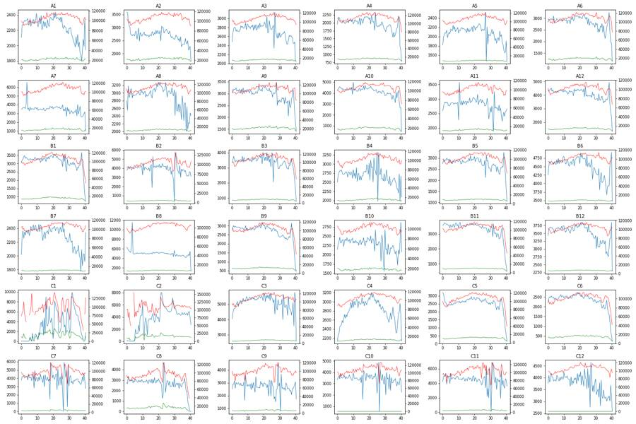
21
tool call · Bash
cd /task; cat > work/qc_time2.py <<'EOF'
import numpy as np, pandas as pd, matplotlib
matplotlib.use('Agg'); import matplotlib.pyplot as plt
z=np.load('work/raw.npz')
order=[f'{r}{c}' for r in 'ABC' for c in range(1,13)]
rows=[]
fig,axs=plt.subplots(6,6,figsize=(24,16)); axs=axs.ravel()
for i,w in enumerate(order):
a=z[w]; t=a[:,0]
bw=0.1
bins=np.arange(0,41.0+bw,bw)
h,_=np.histogram(t,bins)
core=h[5:-10]
med=np.median(core)
low=(core<0.25*med).sum()*bw
low50=(core<0.5*med).sum()*bw
# largest gap between consecutive events
dt=np.diff(np.sort(t)); gi=np.argmax(dt)
# stability of FSC median in 1-s bins
b1=np.arange(0,42,1.0); idx=np.digitize(t,b1)-1
mf=np.array([np.median(a[idx==k,1]) for k in range(1,40) if (idx==k).sum()>50])
ms=np.array([np.median(a[idx==k,2]) for k in range(1,40) if (idx==k).sum()>50])
rows.append(dict(well=w,med_rate_per_s=med/bw,low25_s=round(low,1),low50_s=round(low50,1),maxgap_s=round(dt[gi],3),gap_at=round(np.sort(t)[gi],2),
fsc_med_cv=round(mf.std()/mf.mean(),3),ssc_med_cv=round(ms.std()/ms.mean(),3), t_first=t.min(), t_last=t.max()))
axs[i].plot(bins[:-1],h,lw=0.5); axs[i].set_title(w)
plt.tight_layout(); plt.savefig('work/time01.png',dpi=60)
pd.set_option('display.width',200)
print(pd.DataFrame(rows).to_string())
EOF
python3 work/qc_time2.py22
tool output
well med_rate_per_s low25_s low50_s maxgap_s gap_at fsc_med_cv ssc_med_cv t_first t_last 0 A1 4550.0 0.0 0.0 0.012 34.49 0.071 0.091 0.014 40.893 1 A2 5440.0 0.1 0.3 0.038 37.55 0.063 0.086 0.014 40.891 2 A3 5480.0 0.1 0.3 0.023 34.57 0.061 0.079 0.014 40.964 3 A4 4000.0 0.0 0.2 0.015 30.09 0.058 0.078 0.014 41.079 4 A5 4210.0 0.3 0.3 0.069 27.72 0.067 0.095 0.014 40.863 5 A6 5820.0 0.0 0.2 0.026 34.91 0.059 0.090 0.014 40.900 6 A7 6990.0 0.4 1.4 0.069 35.40 0.070 0.106 0.013 40.650 7 A8 5960.0 0.3 0.7 0.085 34.93 0.067 0.106 0.014 40.945 8 A9 6110.0 0.4 0.7 0.047 17.63 0.055 0.087 0.014 40.937 9 A10 8500.0 0.0 0.4 0.027 29.52 0.052 0.083 0.014 40.639 10 A11 5650.0 0.4 0.4 0.087 32.11 0.074 0.112 0.014 40.954 11 A12 8320.0 0.0 0.3 0.028 24.30 0.065 0.101 0.014 40.899 12 B1 6420.0 0.3 0.5 0.092 28.48 0.074 0.119 0.014 40.982 13 B2 8040.0 1.0 1.9 0.135 30.23 0.093 0.154 0.014 40.867 14 B3 7000.0 0.6 1.6 0.078 26.21 0.073 0.119 0.014 40.876 15 B4 5450.0 0.4 1.3 0.024 31.61 0.073 0.111 0.014 40.932 16 B5 5630.0 0.2 0.4 0.043 27.41 0.070 0.101 0.014 40.995 17 B6 9170.0 0.3 0.5 0.034 33.84 0.069 0.106 0.014 40.869 18 B7 4650.0 0.0 0.1 0.017 34.52 0.057 0.075 0.014 41.000 19 B8 10000.0 0.1 0.2 0.012 32.74 0.061 0.090 0.013 40.653 20 B9 5610.0 0.1 0.5 0.015 18.19 0.075 0.111 0.014 40.962 21 B10 4650.0 0.4 0.8 0.177 29.53 0.063 0.087 0.013 40.944 22 B11 6960.0 0.0 0.7 0.029 35.64 0.068 0.098 0.014 40.940 23 B12 7180.0 0.0 0.1 0.014 32.63 0.067 0.101 0.014 40.823 24 C1 4720.0 11.5 13.5 1.285 3.75 0.225 0.329 0.143 40.722 25 C2 8730.0 8.3 10.0 0.411 3.31 0.134 0.347 0.020 40.930 26 C3 10480.0 0.3 0.9 0.044 35.42 0.076 0.124 0.014 40.744 27 C4 5680.0 0.0 0.0 0.010 13.41 0.079 0.113 0.014 40.974 28 C5 5250.0 0.0 0.6 0.040 40.86 0.088 0.128 0.014 40.914 29 C6 4900.0 0.1 0.8 0.025 40.83 0.076 0.115 0.014 41.017 30 C7 8050.0 2.7 5.3 0.339 26.54 0.090 0.148 0.014 40.925 31 C8 5650.0 2.0 4.0 0.324 40.37 0.132 0.190 0.014 40.812 32 C9 5600.0 2.0 4.6 0.337 27.51 0.083 0.145 0.014 40.872 33 C10 6960.0 2.4 3.9 0.133 30.84 0.074 0.131 0.014 40.743 34 C11 9500.0 3.1 5.4 0.138 28.14 0.101 0.165 0.014 40.910 35 C12 7790.0 0.5 1.6 0.055 33.44 0.071 0.115 0.014 40.878
23
tool call · Read
{
"file_path": "/task/work/time01.png"
}24
tool output
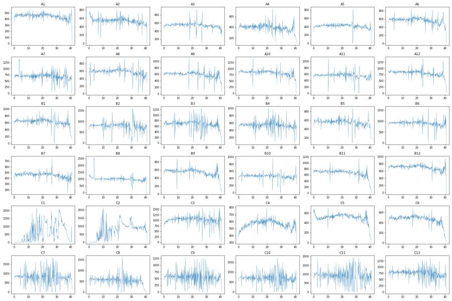
26
tool call · Bash
cd /task; cat > work/plot_scatter.py <<'EOF'
import numpy as np, matplotlib
matplotlib.use('Agg'); import matplotlib.pyplot as plt
from matplotlib.colors import LogNorm
z=np.load('work/raw.npz')
order=[f'{r}{c}' for r in 'ABC' for c in range(1,13)]
fig,axs=plt.subplots(6,6,figsize=(24,22)); axs=axs.ravel()
for i,w in enumerate(order):
a=z[w]
axs[i].hist2d(a[:,1],a[:,2],bins=200,range=[[0,1.05e6],[0,1.05e6]],norm=LogNorm(),cmap='jet')
axs[i].set_title(w)
plt.tight_layout(); plt.savefig('work/fsc_ssc.png',dpi=50)
fig,axs=plt.subplots(6,6,figsize=(24,22)); axs=axs.ravel()
for i,w in enumerate(order):
a=z[w]
axs[i].hist2d(a[:,6],a[:,2],bins=200,range=[[0,1.05e6],[0,1.05e6]],norm=LogNorm(),cmap='jet')
axs[i].set_title(w)
plt.tight_layout(); plt.savefig('work/ssch_ssca.png',dpi=50)
EOF
python3 work/plot_scatter.py27
tool output
(Bash completed with no output)
28
tool call · Read
{
"file_path": "/task/work/fsc_ssc.png"
}29
tool output
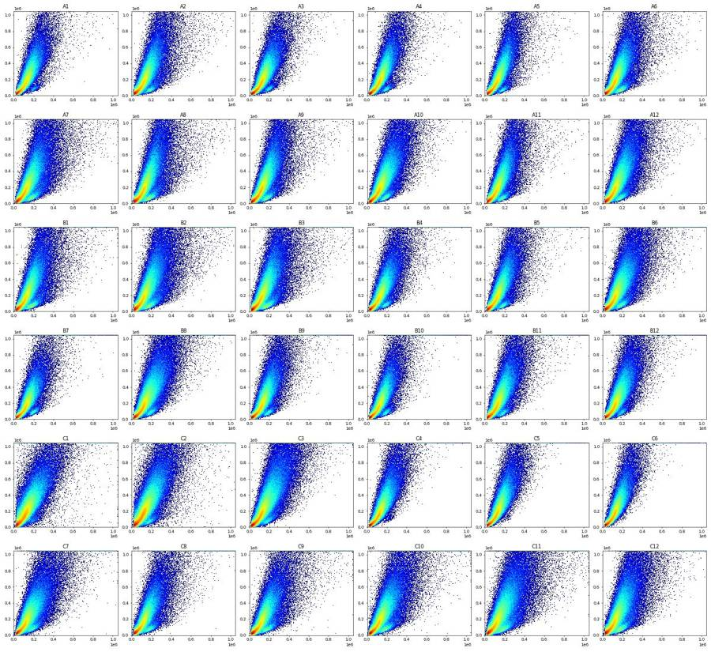
31
agent
Flow check so far: C1 and C2 show clearly interrupted flow (almost no events for the first 5–10 s, then bursts). Now I'm reviewing the scatter plots to place the Cells and Single_Cells gates.
32
tool call · Read
{
"file_path": "/task/work/ssch_ssca.png"
}33
tool output
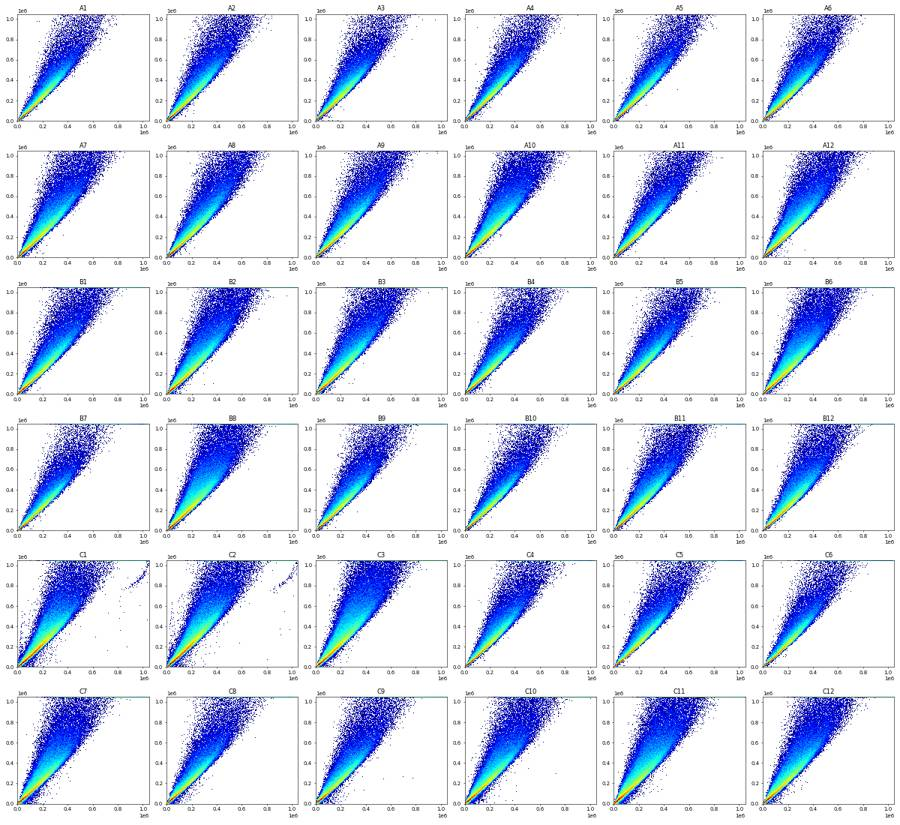
35
tool call · Bash
cd /task; cat > work/plot_scatter2.py <<'EOF'
import numpy as np, matplotlib
matplotlib.use('Agg'); import matplotlib.pyplot as plt
from matplotlib.colors import LogNorm
z=np.load('work/raw.npz')
order=[f'{r}{c}' for r in 'ABC' for c in range(1,13)]
pool=np.vstack([z[w][::4] for w in order if w not in ('C1','C2')])
fig,axs=plt.subplots(2,3,figsize=(21,13)); axs=axs.ravel()
L=lambda v: np.log10(np.clip(v,1,None))
axs[0].hist2d(pool[:,1],pool[:,2],bins=300,range=[[0,1.05e6],[0,1.05e6]],norm=LogNorm(),cmap='jet'); axs[0].set_xlabel('FSC-A'); axs[0].set_ylabel('SSC-A')
axs[1].hist2d(L(pool[:,1]),L(pool[:,2]),bins=300,range=[[3.5,6.1],[3.0,6.1]],norm=LogNorm(),cmap='jet'); axs[1].set_xlabel('log FSC-A'); axs[1].set_ylabel('log SSC-A')
axs[2].hist(pool[:,1],bins=500,range=(0,1.05e6),histtype='step'); axs[2].set_yscale('log'); axs[2].set_xlabel('FSC-A')
axs[3].hist2d(pool[:,1],pool[:,2],bins=300,range=[[0,4e5],[0,4e5]],norm=LogNorm(),cmap='jet'); axs[3].set_xlabel('FSC-A zoom')
axs[4].hist2d(pool[:,5],pool[:,1],bins=300,range=[[0,6e5],[0,1.05e6]],norm=LogNorm(),cmap='jet'); axs[4].set_xlabel('FSC-H'); axs[4].set_ylabel('FSC-A')
axs[5].hist(L(pool[:,1]),bins=300,histtype='step'); axs[5].set_yscale('log')
for ax in axs: ax.grid(alpha=0.3)
plt.tight_layout(); plt.savefig('work/pool_scatter.png',dpi=55)
print(np.percentile(pool[:,1],[0,0.1,1,5,10,25,50]), np.percentile(pool[:,5],[0,0.1,1,5]))
EOF
python3 work/plot_scatter2.py36
tool output
[-65536. 19629. 22647. 26486. 31153. 50575. 105631.] [25062. 25285. 25901. 28817.]
37
tool call · Read
{
"file_path": "/task/work/pool_scatter.png"
}38
tool output
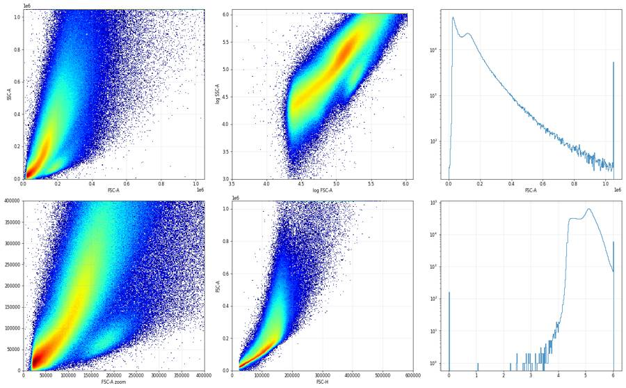
40
tool call · Bash
cd /task; python3 -c "
import numpy as np
z=np.load('work/raw.npz')
for w in ['C10','C11','C12','C7','C8','C9','C4','A1']:
a=z[w]
m=a[:,1]>60000
print(w,'BL1',np.percentile(a[m,3],[0.1,1,5,25,50,75,95,99,99.9]).round(0))
print(w,'RL3',np.percentile(a[m,4],[0.1,1,5,25,50,75,95,99,99.9]).round(0))
"41
tool output
C10 BL1 [-1.5350e+03 -3.1000e+01 2.7000e+01 1.3400e+02 2.6900e+02 5.7100e+02 1.9990e+03 5.1400e+03 3.8303e+04] C10 RL3 [-2.090e+02 -9.800e+01 -5.800e+01 -4.000e+00 3.600e+01 8.300e+01 2.000e+02 4.860e+02 4.542e+03] C11 BL1 [-2.0330e+03 -4.3000e+01 1.6000e+01 1.1300e+02 2.4300e+02 5.7700e+02 2.3620e+03 7.6950e+03 4.3627e+04] C11 RL3 [-2.328600e+04 -8.600000e+02 -1.620000e+02 2.785000e+03 1.026200e+04 2.603400e+04 9.022000e+04 2.463360e+05 1.048575e+06] C12 BL1 [-1.9800e+02 7.0000e+00 1.1500e+02 6.6000e+02 1.1700e+03 2.1060e+03 5.8020e+03 1.5988e+04 6.8435e+04] C12 RL3 [-147. -97. -58. -4. 35. 82. 205. 511. 3096.] C7 BL1 [-5.7130e+03 -5.0000e+00 1.4100e+02 6.7500e+02 1.0990e+03 2.0750e+03 5.8010e+03 1.6319e+04 9.6687e+04] C7 RL3 [-3.01370e+04 -6.57000e+02 -6.20000e+01 2.39000e+03 1.02710e+04 2.57410e+04 8.17780e+04 2.15085e+05 9.97443e+05] C8 BL1 [-1.30500e+03 1.00000e+01 1.24000e+02 5.87000e+02 1.00600e+03 1.79100e+03 5.19700e+03 1.56360e+04 1.05496e+05] C8 RL3 [-2.016500e+04 -9.680000e+02 1.180000e+02 1.194500e+04 3.441400e+04 7.459400e+04 2.215790e+05 5.562180e+05 1.048575e+06] C9 BL1 [-9.11900e+03 -1.60000e+01 1.04000e+02 6.12000e+02 1.09800e+03 2.02100e+03 5.88000e+03 1.78610e+04 1.27686e+05] C9 RL3 [-4.155100e+04 -7.100000e+02 -8.800000e+01 3.484000e+03 1.376800e+04 3.353600e+04 1.059700e+05 2.909580e+05 1.048575e+06] C4 BL1 [-1.78000e+02 1.14000e+02 2.35000e+02 6.07000e+02 9.04000e+02 1.59900e+03 4.53800e+03 1.57840e+04 1.45663e+05] C4 RL3 [-2.35000e+02 3.73000e+02 2.45100e+03 9.53400e+03 1.99680e+04 4.01110e+04 1.01884e+05 1.93535e+05 4.18901e+05] A1 BL1 [-6.0000e+00 7.0000e+01 1.6800e+02 5.8400e+02 9.4300e+02 1.5170e+03 3.5400e+03 7.6750e+03 2.5566e+04] A1 RL3 [-6.57000e+02 6.70000e+01 3.78600e+03 1.83740e+04 4.03000e+04 8.04410e+04 1.92570e+05 3.75017e+05 9.66920e+05]
43
tool call · Bash
cd /task; cat > work/plot_fl.py <<'EOF'
import numpy as np, matplotlib, flowkit as fk
matplotlib.use('Agg'); import matplotlib.pyplot as plt
from matplotlib.colors import LogNorm
z=np.load('work/raw.npz')
xf=fk.transforms.LogicleTransform(param_t=1048576, param_w=1.0, param_m=6.0, param_a=0)
def L(v): return xf.apply(v.reshape(-1,1)).ravel()
order=[f'{r}{c}' for r in 'ABC' for c in range(1,13)]
fig,axs=plt.subplots(6,6,figsize=(24,22)); axs=axs.ravel()
ticks=np.array([-1000,0,1000,1e4,1e5,1e6])
for i,w in enumerate(order):
a=z[w]; m=(a[:,1]>60000)&(a[:,2]>30000)
axs[i].hist2d(L(a[m,3]),L(a[m,4]),bins=200,range=[[0,1],[0,1]],norm=LogNorm(),cmap='jet')
axs[i].set_title(w); axs[i].set_xticks(L(ticks)); axs[i].set_xticklabels(['-1k','0','1k','10k','100k','1M']);axs[i].set_yticks(L(ticks)); axs[i].set_yticklabels(['-1k','0','1k','10k','100k','1M']); axs[i].grid(alpha=.3)
plt.tight_layout(); plt.savefig('work/fl_all.png',dpi=50)
EOF
python3 work/plot_fl.py44
tool output
(Bash completed with no output)
45
tool call · Read
{
"file_path": "/task/work/fl_all.png"
}46
tool output
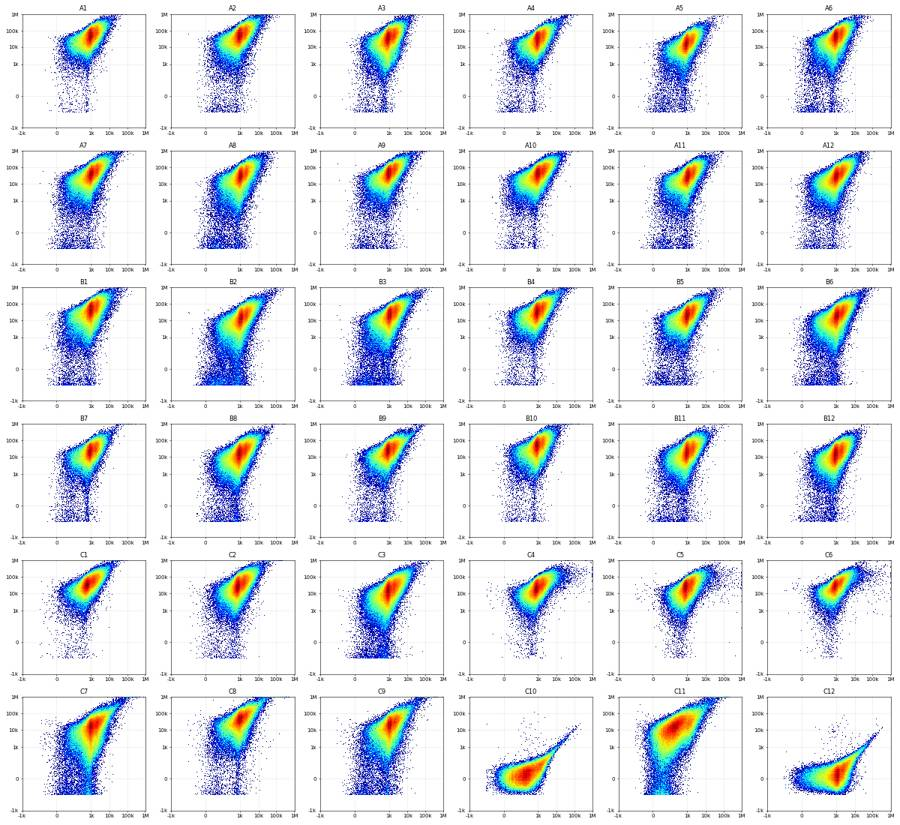
48
thinking
The control wells look as expected, with C10 unstained, C11 RL3-bright only, C12 BL1-shifted only, and C4–C6 showing a distinct GFP-bright population. I'm checking the 1-D RL3-A and BL1-A histograms next to set the Live and caspase gates.
49
tool call · Bash
cd /task; cat > work/plot_1d.py <<'EOF'
import numpy as np, matplotlib, flowkit as fk
matplotlib.use('Agg'); import matplotlib.pyplot as plt
z=np.load('work/raw.npz')
xf=fk.transforms.LogicleTransform(param_t=1048576, param_w=1.0, param_m=6.0, param_a=0)
def L(v): return xf.apply(v.reshape(-1,1)).ravel()
ticks=np.array([-1e4,-1000,0,1000,1e4,1e5,1e6]); tl=['-10k','-1k','0','1k','10k','100k','1M']
fig,axs=plt.subplots(2,2,figsize=(20,12)); axs=axs.ravel()
for w,c in [('C10','k'),('C11','r'),('C12','g'),('C7','b'),('C8','c'),('C9','m'),('A1','orange'),('B2','y')]:
a=z[w]; m=(a[:,1]>60000)&(a[:,2]>30000)
for j,ch in [(0,4),(1,3)]:
axs[j].hist(L(a[m,ch]),bins=300,range=(-0.15,1),histtype='step',density=True,color=c,label=w)
axs[j+2].hist(L(a[m,ch]),bins=300,range=(-0.15,1),histtype='step',density=True,color=c,label=w)
for j in range(4):
axs[j].set_xticks(L(ticks)); axs[j].set_xticklabels(tl); axs[j].legend(); axs[j].grid(alpha=.3)
axs[2].set_yscale('log'); axs[3].set_yscale('log')
axs[0].set_title('RL3-A'); axs[1].set_title('BL1-A')
plt.tight_layout(); plt.savefig('work/hist1d.png',dpi=55)
EOF
python3 work/plot_1d.py50
tool output
(Bash completed with no output)
51
tool call · Read
{
"file_path": "/task/work/hist1d.png"
}52
tool output
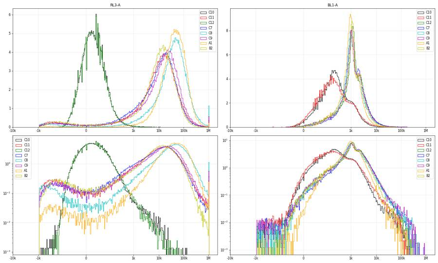
54
tool call · Bash
cd /task; cat > work/plot_sub.py <<'EOF'
import numpy as np, matplotlib, flowkit as fk
matplotlib.use('Agg'); import matplotlib.pyplot as plt
from matplotlib.colors import LogNorm
z=np.load('work/raw.npz')
order=['C7','C8','C9','C11','A1','B2']
pool=np.vstack([z[w] for w in ['C7','C8','C9']])
lg=lambda v: np.log10(np.clip(v,1e3,None))
bins=[(-1e9,0,'RL3<0'),(0,3000,'0-3k'),(3000,30000,'3k-30k'),(30000,150000,'30k-150k'),(150000,1e9,'>150k')]
fig,axs=plt.subplots(2,5,figsize=(28,11))
for j,(lo,hi,lab) in enumerate(bins):
m=(pool[:,4]>=lo)&(pool[:,4]<hi)
axs[0,j].hist2d(lg(pool[m,1]),lg(pool[m,2]),bins=200,range=[[4.2,6.05],[3.0,6.05]],norm=LogNorm(),cmap='jet'); axs[0,j].set_title(f'{lab} n={m.sum()} FSC vs SSC (log)')
axs[1,j].hist2d(lg(pool[m,6]),lg(pool[m,2]),bins=200,range=[[3.0,6.05],[3.0,6.05]],norm=LogNorm(),cmap='jet'); axs[1,j].set_title('SSC-H vs SSC-A (log)')
for ax in axs.ravel(): ax.grid(alpha=.3)
plt.tight_layout(); plt.savefig('work/sub_rl3.png',dpi=50)
EOF
python3 work/plot_sub.py55
tool output
(Bash completed with no output)
56
tool call · Read
{
"file_path": "/task/work/sub_rl3.png"
}57
tool output
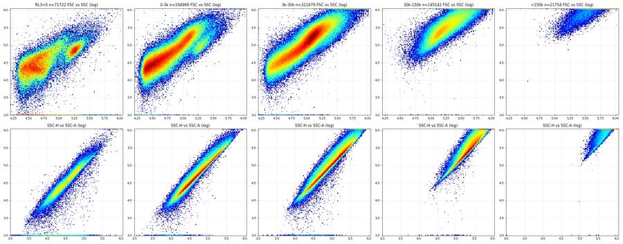
59
tool call · Bash
cd /task; cat > work/plot_live.py <<'EOF'
import numpy as np, matplotlib, flowkit as fk
matplotlib.use('Agg'); import matplotlib.pyplot as plt
from matplotlib.colors import LogNorm
z=np.load('work/raw.npz')
xf=fk.transforms.LogicleTransform(param_t=1048576, param_w=1.0, param_m=6.0, param_a=0)
def L(v): return xf.apply(v.reshape(-1,1)).ravel()
ticks=np.array([-1e4,-1000,0,1000,1e4,1e5,1e6]); tl=['-10k','-1k','0','1k','10k','100k','1M']
fig,axs=plt.subplots(2,4,figsize=(26,12)); axs=axs.ravel()
for k,w in enumerate(['C10','C11','C12','C7','C8','A1','B2','C4']):
a=z[w]
box=(a[:,1]>150e3)&(a[:,1]<320e3)&(a[:,2]>45e3)&(a[:,2]<120e3)
main=(a[:,1]>60e3)&(a[:,2]>120e3)
ax=axs[k]
ax.scatter(L(a[main,3])[::3],L(a[main,4])[::3],s=0.2,c='gray',alpha=0.3,label='main (SSC>120k)')
ax.scatter(L(a[box,3]),L(a[box,4]),s=0.5,c='r',alpha=0.5,label=f'hiFSC/loSSC box n={box.sum()}')
ax.set_xlim(-0.15,1);ax.set_ylim(-0.15,1)
ax.set_xticks(L(ticks)); ax.set_xticklabels(tl);ax.set_yticks(L(ticks)); ax.set_yticklabels(tl); ax.grid(alpha=.3); ax.set_title(w); ax.legend(markerscale=10)
ax.set_xlabel('BL1-A'); ax.set_ylabel('RL3-A')
plt.tight_layout(); plt.savefig('work/live_cluster.png',dpi=50)
EOF
python3 work/plot_live.py60
tool output
(Bash completed with no output)
61
tool call · Read
{
"file_path": "/task/work/live_cluster.png"
}62
tool output
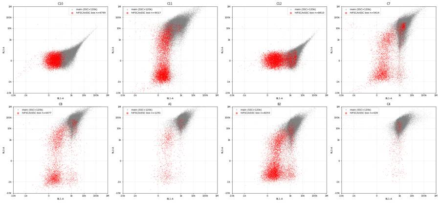
64
thinking
I've found a distinct Zombie-negative cluster, while most events are Zombie-bright, compromised cells. Next I'll check the end-of-run flow for a possible run-dry and the spiky flow in C7–C11.
65
tool call · Bash
cd /task; cat > work/qc_end.py <<'EOF'
import numpy as np, pandas as pd, matplotlib
matplotlib.use('Agg'); import matplotlib.pyplot as plt
z=np.load('work/raw.npz')
order=[f'{r}{c}' for r in 'ABC' for c in range(1,13)]
rows=[]
fig,axs=plt.subplots(6,6,figsize=(24,16)); axs=axs.ravel()
for i,w in enumerate(order):
a=z[w]; t=a[:,0]; tmax=t.max()
bw=0.25; bins=np.arange(0,41.5,bw); h,_=np.histogram(t,bins)
med=np.median(h[8:-20])/bw
r=dict(well=w,med=med)
for s0,s1 in [(36,38),(38,39),(39,40),(40,40.5),(40.5,41.1)]:
r[f'{s0}-{s1}']=round(((t>=s0)&(t<s1)).sum()/(s1-s0)/med,2)
r['tmax']=tmax
# first time from which rate stays <20% median
rows.append(r)
axs[i].plot(bins[:-1],h/bw/med); axs[i].set_xlim(30,41.2); axs[i].set_ylim(0,1.6); axs[i].set_title(w); axs[i].grid(alpha=.3)
plt.tight_layout(); plt.savefig('work/end.png',dpi=50)
pd.set_option('display.width',200)
print(pd.DataFrame(rows).to_string())
EOF
python3 work/qc_end.py66
tool output
well med 36-38 38-39 39-40 40-40.5 40.5-41.1 tmax 0 A1 4544.0 0.86 0.82 0.90 1.03 0.71 40.893 1 A2 5472.0 0.89 0.89 0.79 0.83 0.52 40.891 2 A3 5544.0 0.94 0.91 0.89 0.74 0.62 40.964 3 A4 4020.0 0.84 1.02 0.81 0.55 0.36 41.079 4 A5 4248.0 0.95 0.84 0.78 0.90 0.57 40.863 5 A6 5860.0 0.84 1.05 0.75 0.66 0.33 40.900 6 A7 7084.0 0.90 0.74 0.81 0.90 0.22 40.650 7 A8 6008.0 0.81 0.78 0.74 0.83 0.67 40.945 8 A9 6128.0 0.84 0.98 0.82 0.58 0.38 40.937 9 A10 8524.0 0.83 0.96 0.68 0.63 0.10 40.639 10 A11 5716.0 0.87 0.87 0.87 0.91 0.78 40.954 11 A12 8408.0 0.87 1.06 0.72 0.56 0.27 40.899 12 B1 6508.0 0.90 0.99 0.66 0.35 0.19 40.982 13 B2 8144.0 0.89 0.77 0.83 0.88 0.64 40.867 14 B3 6960.0 0.95 0.90 0.69 0.45 0.19 40.876 15 B4 5460.0 0.91 0.83 0.86 0.98 0.64 40.932 16 B5 5628.0 0.89 1.04 0.89 0.59 0.31 40.995 17 B6 9192.0 0.85 0.86 0.99 1.07 0.63 40.869 18 B7 4684.0 0.84 0.84 0.86 0.82 0.83 41.000 19 B8 10028.0 0.86 0.90 0.94 1.08 0.21 40.653 20 B9 5664.0 0.93 0.87 0.53 0.25 0.14 40.962 21 B10 4672.0 0.88 0.82 0.93 1.23 0.74 40.944 22 B11 7008.0 0.87 0.71 0.44 0.25 0.12 40.940 23 B12 7236.0 0.82 0.81 0.92 1.06 0.53 40.823 24 C1 5740.0 1.17 0.40 0.02 0.04 0.30 40.722 25 C2 8748.0 1.03 1.02 1.11 0.88 0.52 40.930 26 C3 10556.0 0.87 0.92 0.89 1.01 0.41 40.744 27 C4 5800.0 0.84 0.91 0.99 0.93 0.61 40.974 28 C5 5256.0 1.00 0.77 0.47 0.21 0.05 40.914 29 C6 4920.0 0.84 0.66 0.40 0.22 0.08 41.017 30 C7 8048.0 0.85 0.96 1.02 0.92 0.57 40.925 31 C8 5716.0 0.91 0.50 0.15 0.00 0.00 40.812 32 C9 5640.0 0.83 0.90 0.99 1.09 0.51 40.872 33 C10 7008.0 0.89 0.88 0.91 0.94 0.53 40.743 34 C11 9340.0 0.85 0.86 0.85 0.96 0.64 40.910 35 C12 7820.0 0.80 0.82 0.86 0.82 0.55 40.878
67
tool call · Read
{
"file_path": "/task/work/end.png"
}68
tool output
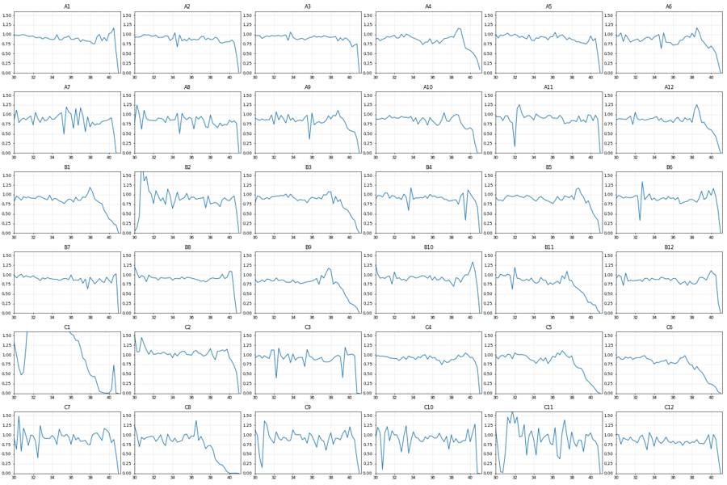
70
tool call · Bash
cd /task; cat > work/qc_end2.py <<'EOF'
import numpy as np, pandas as pd
z=np.load('work/raw.npz')
for w in ['C8','B9','B11','C5','C6','B1','A10','C7','C1']:
a=z[w]; t=a[:,0]
out=[]
for s0,s1 in [(5,30),(30,36),(36,38),(38,39),(39,39.5),(39.5,40),(40,40.5),(40.5,41.2)]:
m=(t>=s0)&(t<s1)
if m.sum()<5: out.append(f'{s0}-{s1}: n={m.sum()}'); continue
out.append(f'{s0}-{s1}: n={m.sum()} FSC={np.median(a[m,1]):.0f} SSC={np.median(a[m,2]):.0f} BL1={np.median(a[m,3]):.0f} RL3={np.median(a[m,4]):.0f} dbr={np.mean(a[m,1]<60000):.2f}')
print(w); print('\n'.join(' '+o for o in out))
print(' last event', t.max(), ' events after 40s', (t>40).sum())
EOF
python3 work/qc_end2.py71
tool output
C8 5-30: n=140157 FSC=98796 SSC=107728 BL1=697 RL3=16967 dbr=0.33 30-36: n=31159 FSC=91355 SSC=95646 BL1=603 RL3=15301 dbr=0.35 36-38: n=10428 FSC=94225 SSC=98152 BL1=616 RL3=14974 dbr=0.34 38-39: n=2883 FSC=65740 SSC=62054 BL1=340 RL3=10915 dbr=0.46 39-39.5: n=636 FSC=47804 SSC=44410 BL1=224 RL3=7510 dbr=0.61 39.5-40: n=247 FSC=38012 SSC=33742 BL1=147 RL3=7073 dbr=0.77 40-40.5: n=10 FSC=29038 SSC=24111 BL1=88 RL3=3350 dbr=1.00 40.5-41.2: n=16 FSC=30708 SSC=15333 BL1=139 RL3=2776 dbr=0.94 last event 40.812 events after 40s 26 B9 5-30: n=142411 FSC=109570 SSC=131219 BL1=702 RL3=12201 dbr=0.29 30-36: n=28238 FSC=102632 SSC=119532 BL1=614 RL3=11194 dbr=0.32 36-38: n=10550 FSC=98748 SSC=113134 BL1=590 RL3=10790 dbr=0.32 38-39: n=4907 FSC=103024 SSC=119658 BL1=618 RL3=11148 dbr=0.32 39-39.5: n=1822 FSC=87448 SSC=87144 BL1=468 RL3=8288 dbr=0.38 39.5-40: n=1206 FSC=75507 SSC=73686 BL1=383 RL3=8340 dbr=0.41 40-40.5: n=695 FSC=60306 SSC=58117 BL1=297 RL3=6141 dbr=0.50 40.5-41.2: n=469 FSC=44113 SSC=40216 BL1=176 RL3=4262 dbr=0.65 last event 40.962 events after 40s 1161 B11 5-30: n=176420 FSC=109288 SSC=136286 BL1=780 RL3=10025 dbr=0.29 30-36: n=37308 FSC=105466 SSC=128722 BL1=708 RL3=9576 dbr=0.30 36-38: n=12153 FSC=109134 SSC=131252 BL1=701 RL3=9619 dbr=0.29 38-39: n=4971 FSC=102467 SSC=123546 BL1=659 RL3=8737 dbr=0.32 39-39.5: n=1878 FSC=87945 SSC=89548 BL1=488 RL3=7452 dbr=0.37 39.5-40: n=1182 FSC=70936 SSC=70252 BL1=347 RL3=6034 dbr=0.43 40-40.5: n=870 FSC=55752 SSC=49620 BL1=221 RL3=4052 dbr=0.54 40.5-41.2: n=490 FSC=45399 SSC=42868 BL1=178 RL3=3208 dbr=0.67 last event 40.94 events after 40s 1354 C5 5-30: n=133677 FSC=112835 SSC=149892 BL1=742 RL3=11912 dbr=0.27 30-36: n=29156 FSC=109008 SSC=144822 BL1=688 RL3=11418 dbr=0.28 36-38: n=10470 FSC=105611 SSC=135655 BL1=672 RL3=10790 dbr=0.29 38-39: n=4036 FSC=105590 SSC=137202 BL1=677 RL3=11080 dbr=0.30 39-39.5: n=1567 FSC=87914 SSC=100116 BL1=460 RL3=7521 dbr=0.38 39.5-40: n=885 FSC=76449 SSC=76243 BL1=371 RL3=6430 dbr=0.43 40-40.5: n=556 FSC=51952 SSC=46000 BL1=224 RL3=4216 dbr=0.56 40.5-41.2: n=152 FSC=39304 SSC=37754 BL1=156 RL3=3056 dbr=0.75 last event 40.914 events after 40s 706 C6 5-30: n=125156 FSC=105700 SSC=137864 BL1=743 RL3=16117 dbr=0.28 30-36: n=25910 FSC=101260 SSC=129645 BL1=682 RL3=15137 dbr=0.30 36-38: n=8314 FSC=105314 SSC=127767 BL1=674 RL3=15195 dbr=0.29 38-39: n=3248 FSC=95056 SSC=115643 BL1=601 RL3=13092 dbr=0.33 39-39.5: n=1252 FSC=81616 SSC=86540 BL1=453 RL3=10503 dbr=0.38 39.5-40: n=715 FSC=70889 SSC=69490 BL1=335 RL3=9151 dbr=0.43 40-40.5: n=547 FSC=50891 SSC=45532 BL1=218 RL3=6522 dbr=0.58 40.5-41.2: n=229 FSC=41905 SSC=38079 BL1=167 RL3=4827 dbr=0.72 last event 41.017 events after 40s 776 B1 5-30: n=162920 FSC=110846 SSC=126498 BL1=696 RL3=15602 dbr=0.29 30-36: n=34769 FSC=106304 SSC=117693 BL1=614 RL3=14547 dbr=0.31 36-38: n=11714 FSC=99347 SSC=104586 BL1=544 RL3=13076 dbr=0.33 38-39: n=6460 FSC=105792 SSC=117288 BL1=619 RL3=14676 dbr=0.30 39-39.5: n=2524 FSC=100204 SSC=102717 BL1=516 RL3=11886 dbr=0.34 39.5-40: n=1754 FSC=78035 SSC=78160 BL1=350 RL3=11688 dbr=0.40 40-40.5: n=1125 FSC=65685 SSC=62824 BL1=289 RL3=8978 dbr=0.46 40.5-41.2: n=728 FSC=49892 SSC=46674 BL1=194 RL3=7736 dbr=0.60 last event 40.982 events after 40s 1850 A10 5-30: n=214964 FSC=110353 SSC=134332 BL1=746 RL3=20189 dbr=0.29 30-36: n=45594 FSC=108586 SSC=130178 BL1=684 RL3=19521 dbr=0.30 36-38: n=14163 FSC=102219 SSC=114489 BL1=603 RL3=17549 dbr=0.32 38-39: n=8223 FSC=109423 SSC=130692 BL1=674 RL3=19941 dbr=0.29 39-39.5: n=3180 FSC=108186 SSC=130056 BL1=656 RL3=18961 dbr=0.29 39.5-40: n=2653 FSC=97200 SSC=108209 BL1=565 RL3=16342 dbr=0.34 40-40.5: n=2665 FSC=82906 SSC=82243 BL1=414 RL3=13177 dbr=0.38 40.5-41.2: n=496 FSC=72172 SSC=76397 BL1=350 RL3=13469 dbr=0.43 last event 40.639 events after 40s 3151 C7 5-30: n=195249 FSC=102165 SSC=113648 BL1=764 RL3=4791 dbr=0.31 30-36: n=44758 FSC=104356 SSC=116776 BL1=718 RL3=4916 dbr=0.30 36-38: n=13743 FSC=97526 SSC=104310 BL1=666 RL3=4413 dbr=0.33 38-39: n=7690 FSC=93762 SSC=98052 BL1=639 RL3=4168 dbr=0.34 39-39.5: n=3635 FSC=90901 SSC=92478 BL1=589 RL3=3820 dbr=0.36 39.5-40: n=4603 FSC=94331 SSC=101887 BL1=636 RL3=4380 dbr=0.33 40-40.5: n=3699 FSC=95722 SSC=102524 BL1=654 RL3=4221 dbr=0.33 40.5-41.2: n=2768 FSC=94688 SSC=96968 BL1=626 RL3=3979 dbr=0.35 last event 40.925000000000004 events after 40s 6464 C1 5-30: n=162318 FSC=110597 SSC=172378 BL1=615 RL3=25102 dbr=0.25 30-36: n=71224 FSC=113528 SSC=149139 BL1=518 RL3=21390 dbr=0.26 36-38: n=13429 FSC=92577 SSC=101203 BL1=375 RL3=14218 dbr=0.36 38-39: n=2280 FSC=50802 SSC=46499 BL1=162 RL3=7075 dbr=0.57 39-39.5: n=98 FSC=31533 SSC=25067 BL1=96 RL3=3896 dbr=0.95 39.5-40: n=16 FSC=27792 SSC=25251 BL1=66 RL3=3762 dbr=0.88 40-40.5: n=123 FSC=79541 SSC=102091 BL1=203 RL3=4465 dbr=0.33 40.5-41.2: n=1047 FSC=127243 SSC=175783 BL1=598 RL3=25764 dbr=0.23 last event 40.722 events after 40s 1170
73
thinking
Only well C8 has dropped to essentially zero events, with 26 in the last 0.8 s and 77–100% debris, so I'm treating it as a "ran dry" candidate. Next I'm checking for GFP-like events outside C4–C6, pile-ups or clipping, and control consistency.
74
tool call · Bash
cd /task; cat > work/qc_gfp.py <<'EOF'
import numpy as np, pandas as pd
z=np.load('work/raw.npz')
order=[f'{r}{c}' for r in 'ABC' for c in range(1,13)]
cols=list(z['cols'])
rows=[]
for w in order:
a=z[w]; m=(a[:,1]>60000)&(a[:,2]<1.04e6)&(a[:,1]<1.04e6)
b=a[m]
gfp=(b[:,3]>3e4)&(b[:,3]>0.5*b[:,4]) # off-diagonal bright green
gfp2=(b[:,3]>1e5)
r=dict(well=w,cells=m.sum(),gfp_like=gfp.sum(),gfp_frac=round(gfp.mean()*100,3),bl1_gt1e5=gfp2.sum(),
rl3neg_frac=round(np.mean(b[:,4]<0)*100,2), rl3_gt1e5=round(np.mean(b[:,4]>1e5)*100,2),
bl1_gt5k=round(np.mean(b[:,3]>5e3)*100,2), bl1_gt1e4=round(np.mean(b[:,3]>1e4)*100,2))
# pileups: most common value counts per channel
for i,c in enumerate(cols[1:5],1):
v,cnt=np.unique(a[:,i],return_counts=True); k=np.argmax(cnt)
r[c+'_mode']=f'{v[k]:.0f}x{cnt[k]}'
rows.append(r)
pd.set_option('display.width',250)
print(pd.DataFrame(rows).to_string())
EOF
python3 work/qc_gfp.py75
tool output
well cells gfp_like gfp_frac bl1_gt1e5 rl3neg_frac rl3_gt1e5 bl1_gt5k bl1_gt1e4 FSC-A_mode SSC-A_mode BL1-A_mode RL3-A_mode 0 A1 124044 0 0.000 0 0.91 16.39 0.90 0.00 1048575x271 1048575x3343 101x377 1048575x111 1 A2 149531 0 0.000 0 3.63 18.26 1.21 0.02 1048575x565 1048575x5611 93x411 1048575x300 2 A3 155910 0 0.000 0 1.84 10.87 1.11 0.01 1048575x156 1048575x2693 101x372 1048575x136 3 A4 113806 0 0.000 0 1.82 6.37 1.06 0.02 1048575x336 1048575x3761 78x278 1048575x181 4 A5 116924 1 0.001 0 2.37 1.57 0.83 0.02 1048575x169 1048575x3818 97x316 -23x57 5 A6 162096 0 0.000 0 5.14 12.16 1.11 0.03 1048575x248 1048575x4127 97x412 1048575x109 6 A7 190500 0 0.000 0 5.23 10.64 1.26 0.01 1048575x945 1048575x9027 89x502 1048575x299 7 A8 163004 1 0.001 0 6.81 6.13 1.55 0.02 1048575x559 1048575x8614 72x397 1048575x96 8 A9 169648 3 0.002 1 4.44 13.08 1.19 0.02 1048575x464 1048575x6810 93x393 1048575x154 9 A10 228785 0 0.000 0 2.67 12.26 1.40 0.01 1048575x373 1048575x7542 97x573 1048575x121 10 A11 150405 2 0.001 0 4.25 5.92 1.32 0.01 1048575x367 1048575x5729 66x414 1048575x65 11 A12 219807 1 0.000 0 3.63 7.19 1.46 0.03 1048575x393 1048575x7778 90x575 1048575x102 12 B1 169434 0 0.000 0 6.29 11.68 1.11 0.01 1048575x581 1048575x7816 67x482 1048575x153 13 B2 210591 2 0.001 0 7.03 0.76 1.63 0.04 1048575x1083 1048575x10053 93x553 -69x151 14 B3 187728 1 0.001 0 6.68 2.13 1.83 0.08 1048575x685 1048575x8421 86x445 -67x95 15 B4 145209 0 0.000 0 2.61 9.07 1.07 0.04 1048575x615 1048575x5162 78x418 1048575x363 16 B5 148316 2 0.001 0 3.26 2.56 1.09 0.02 1048575x352 1048575x5761 102x436 1048575x58 17 B6 244113 1 0.000 0 3.65 2.43 1.98 0.03 1048575x572 1048575x7938 101x617 -105x79 18 B7 126709 0 0.000 0 1.97 3.11 1.03 0.01 1048575x200 1048575x2479 93x343 1048575x59 19 B8 277815 0 0.000 0 2.03 1.87 1.56 0.03 1048575x400 1048575x7896 78x687 -136x84 20 B9 147888 0 0.000 0 2.22 3.99 1.67 0.09 1048575x264 1048575x4439 97x416 -71x42 21 B10 124798 2 0.002 0 2.30 14.63 0.80 0.01 1048575x149 1048575x3098 92x374 1048575x80 22 B11 185989 2 0.001 0 2.43 3.70 1.37 0.04 1048575x176 1048575x4957 120x473 -44x63 23 B12 195861 0 0.000 0 1.77 1.46 1.25 0.02 1048575x151 1048575x4621 105x480 -72x74 24 C1 177726 0 0.000 0 2.20 10.05 0.36 0.00 1048575x825 1048575x6979 93x369 1048575x63 25 C2 217437 0 0.000 0 3.44 8.17 0.81 0.02 1048575x944 1048575x8988 94x415 1048575x149 26 C3 284110 7 0.002 1 2.84 1.57 1.48 0.03 1048575x1118 1048575x13584 86x691 -27x105 27 C4 158977 216 0.136 60 0.38 3.69 2.20 0.71 1048575x179 1048575x4113 89x402 831x32 28 C5 143738 237 0.165 82 0.40 3.65 2.19 0.69 1048575x124 1048575x3737 99x339 36x36 29 C6 130228 210 0.161 78 0.28 5.41 2.45 0.86 1048575x77 1048575x3146 117x326 -13x29 30 C7 207547 4 0.002 1 6.18 1.39 3.22 0.21 1048575x1551 1048575x8444 66x477 1048575x197 31 C8 136060 12 0.009 1 4.65 14.00 1.96 0.12 1048575x988 1048575x6148 85x371 1048575x584 32 C9 143533 13 0.009 0 6.67 2.52 2.78 0.19 1048575x1498 1048575x7250 93x366 1048575x295 33 C10 185341 0 0.000 0 28.23 0.00 0.01 0.00 1048575x1655 1048575x9018 30x980 17x2057 34 C11 234320 0 0.000 0 7.75 1.19 0.04 0.00 1048575x2860 1048575x15769 42x1454 1048575x317 35 C12 203027 11 0.005 0 28.68 0.00 2.90 0.22 1048575x1298 1048575x10533 109x508 1x2306
77
tool call · Bash
cd /task; cat > work/qc_zoom.py <<'EOF'
import numpy as np, matplotlib
matplotlib.use('Agg'); import matplotlib.pyplot as plt
z=np.load('work/raw.npz')
ws=['A1','B2','C3','C7','C9','C10','C11','C12','C1','C2']
fig,axs=plt.subplots(len(ws),1,figsize=(18,2.0*len(ws)))
for ax,w in zip(axs,ws):
t=z[w][:,0]
bins=np.arange(20,30,0.01); h,_=np.histogram(t,bins)
ax.plot(bins[:-1],h,lw=0.6); ax.set_ylabel(w)
plt.tight_layout(); plt.savefig('work/zoom.png',dpi=50)
for w in ws:
t=np.sort(z[w][:,0]); dt=np.diff(t)
core=(t[1:]>2)&(t[1:]<38)
print(w, 'gaps>50ms:',(dt[core]>0.05).sum(),' gaps>20ms:',(dt[core]>0.02).sum(), ' total gap time >20ms: %.2f s'%dt[core][dt[core]>0.02].sum())
EOF
python3 work/qc_zoom.py78
tool output
A1 gaps>50ms: 0 gaps>20ms: 0 total gap time >20ms: 0.00 s B2 gaps>50ms: 3 gaps>20ms: 8 total gap time >20ms: 0.44 s C3 gaps>50ms: 0 gaps>20ms: 6 total gap time >20ms: 0.19 s C7 gaps>50ms: 7 gaps>20ms: 31 total gap time >20ms: 1.56 s C9 gaps>50ms: 8 gaps>20ms: 27 total gap time >20ms: 1.42 s C10 gaps>50ms: 5 gaps>20ms: 22 total gap time >20ms: 1.09 s C11 gaps>50ms: 8 gaps>20ms: 23 total gap time >20ms: 1.19 s C12 gaps>50ms: 2 gaps>20ms: 9 total gap time >20ms: 0.31 s C1 gaps>50ms: 31 gaps>20ms: 101 total gap time >20ms: 6.19 s C2 gaps>50ms: 22 gaps>20ms: 59 total gap time >20ms: 3.65 s
79
tool call · Read
{
"file_path": "/task/work/zoom.png"
}80
tool output
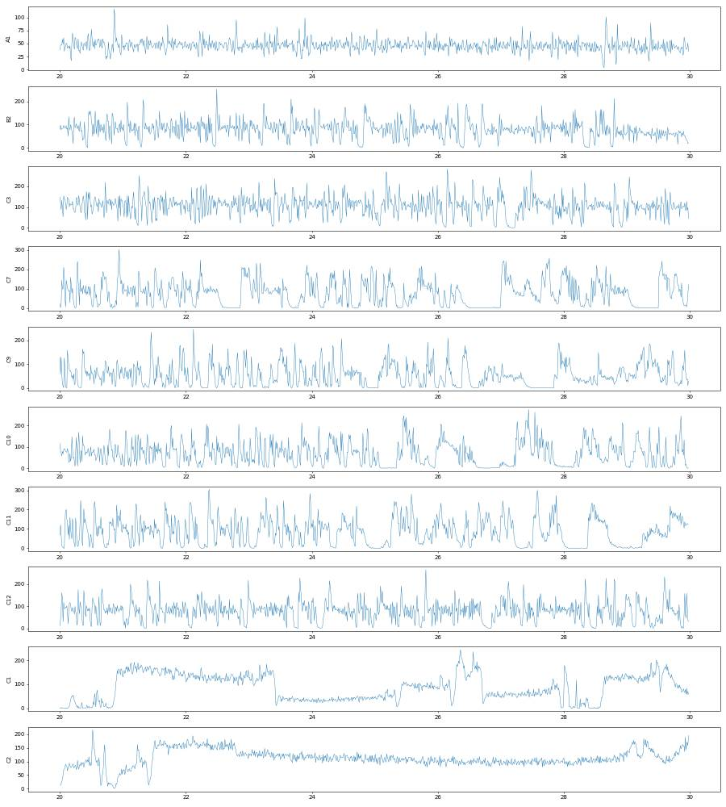
82
thinking
C1 and C2 show step-like partial-clog rate changes, and C7 and C9–C11 have short sub-second gaps covering about 3–4% of run time. I'm now checking whether the populations drift over time, to see if those gaps distort the data.
83
tool call · Bash
cd /task; cat > work/qc_drift.py <<'EOF'
import numpy as np, pandas as pd, matplotlib
matplotlib.use('Agg'); import matplotlib.pyplot as plt
z=np.load('work/raw.npz')
order=[f'{r}{c}' for r in 'ABC' for c in range(1,13)]
fig,axs=plt.subplots(6,6,figsize=(24,16)); axs=axs.ravel()
rows=[]
for i,w in enumerate(order):
a=z[w]; t=a[:,0]
cell=(a[:,1]>60000)&(a[:,1]<1.04e6)&(a[:,2]<1.04e6)
bins=np.arange(0,41.5,1.0); idx=np.digitize(t,bins)-1
res={}
for nm,f in [('cellfrac',lambda m: cell[m].mean()),('FSC',lambda m: np.median(a[m&cell,1])),('SSC',lambda m: np.median(a[m&cell,2])),
('RL3',lambda m: np.median(np.log10(np.clip(a[m&cell,4],10,None)))),('BL1',lambda m: np.median(np.log10(np.clip(a[m&cell,3],10,None)))),
('dead',lambda m: np.mean(a[m&cell,4]>1e5)),('live',lambda m: np.mean(a[m&cell,4]<1000))]:
v=np.array([f(idx==k) if (idx==k).sum()>200 else np.nan for k in range(len(bins)-1)])
res[nm]=v
for nm in ['cellfrac','FSC','SSC','dead','live']:
v=res[nm]; axs[i].plot(bins[:-1], v/np.nanmedian(v), label=nm, lw=0.8)
axs[i].set_ylim(0,2); axs[i].set_title(w); axs[i].grid(alpha=.3)
core=slice(2,38)
r=dict(well=w)
for nm in ['cellfrac','FSC','SSC','dead','live']:
v=res[nm][core]; r[nm+'_range']=round((np.nanmax(v)-np.nanmin(v))/np.nanmedian(v),2)
# first-half vs second-half
th=np.median(t)
for nm,ch in [('liveH1H2',None)]:
m1=(t<th)&cell; m2=(t>=th)&cell
r['live_h1']=round(np.mean(a[m1,4]<1000)*100,2); r['live_h2']=round(np.mean(a[m2,4]<1000)*100,2)
r['dead_h1']=round(np.mean(a[m1,4]>1e5)*100,2); r['dead_h2']=round(np.mean(a[m2,4]>1e5)*100,2)
rows.append(r)
axs[0].legend(fontsize=7)
plt.tight_layout(); plt.savefig('work/drift.png',dpi=50)
pd.set_option('display.width',250)
print(pd.DataFrame(rows).to_string())
EOF
python3 work/qc_drift.py84
tool output
/task/work/qc_drift.py:18: RuntimeWarning: divide by zero encountered in divide v=res[nm]; axs[i].plot(bins[:-1], v/np.nanmedian(v), label=nm, lw=0.8) /task/work/qc_drift.py:18: RuntimeWarning: invalid value encountered in divide v=res[nm]; axs[i].plot(bins[:-1], v/np.nanmedian(v), label=nm, lw=0.8) /task/work/qc_drift.py:23: RuntimeWarning: divide by zero encountered in scalar divide v=res[nm][core]; r[nm+'_range']=round((np.nanmax(v)-np.nanmin(v))/np.nanmedian(v),2) /task/work/qc_drift.py:23: RuntimeWarning: invalid value encountered in scalar divide v=res[nm][core]; r[nm+'_range']=round((np.nanmax(v)-np.nanmin(v))/np.nanmedian(v),2) well cellfrac_range FSC_range SSC_range dead_range live_range live_h1 live_h2 dead_h1 dead_h2 0 A1 0.12 0.11 0.10 0.21 0.74 2.20 2.12 16.10 16.68 1 A2 0.10 0.11 0.12 0.23 0.28 5.91 6.00 18.08 18.42 2 A3 0.09 0.12 0.13 0.32 0.35 5.92 5.61 10.60 11.12 3 A4 0.09 0.12 0.13 0.41 0.28 4.53 4.41 6.36 6.38 4 A5 0.10 0.13 0.13 0.62 0.31 7.76 7.71 1.49 1.65 5 A6 0.12 0.10 0.13 0.36 0.21 8.41 8.27 11.96 12.35 6 A7 0.09 0.13 0.16 0.30 0.33 8.16 8.44 10.22 11.04 7 A8 0.11 0.11 0.15 0.42 0.22 12.53 12.45 5.89 6.36 8 A9 0.10 0.11 0.14 0.26 0.34 7.01 6.79 12.79 13.36 9 A10 0.10 0.09 0.12 0.33 0.26 4.41 4.31 12.06 12.46 10 A11 0.11 0.13 0.15 0.45 0.40 8.38 8.47 5.66 6.16 11 A12 0.11 0.10 0.13 0.43 0.27 6.56 6.26 7.18 7.21 12 B1 0.11 0.12 0.17 0.26 0.24 10.22 10.28 11.56 11.80 13 B2 0.17 0.16 0.27 0.77 0.21 15.71 15.52 0.72 0.79 14 B3 0.13 0.11 0.17 0.50 0.20 13.06 13.08 1.99 2.27 15 B4 0.12 0.11 0.16 0.37 0.27 5.15 5.12 8.61 9.52 16 B5 0.10 0.11 0.15 0.59 0.32 7.54 7.57 2.42 2.70 17 B6 0.10 0.11 0.15 0.52 0.27 8.77 8.91 2.32 2.54 18 B7 0.10 0.10 0.09 0.56 0.29 5.42 5.24 2.97 3.24 19 B8 0.09 0.11 0.13 0.47 0.26 6.47 6.28 1.81 1.93 20 B9 0.10 0.10 0.15 0.49 0.26 5.35 5.28 3.91 4.07 21 B10 0.12 0.10 0.11 0.23 0.38 4.64 4.56 14.53 14.73 22 B11 0.09 0.09 0.11 0.45 0.27 6.56 6.46 3.66 3.75 23 B12 0.12 0.10 0.12 0.50 0.32 6.42 6.31 1.45 1.46 24 C1 0.50 0.38 0.72 1.41 16.81 4.03 2.34 10.43 9.67 25 C2 0.21 0.25 0.34 0.79 4.01 6.45 4.89 8.37 7.96 26 C3 0.10 0.13 0.20 0.60 0.32 8.61 8.38 1.47 1.66 27 C4 0.13 0.15 0.19 0.48 0.47 2.16 2.08 3.58 3.81 28 C5 0.16 0.13 0.16 0.57 0.47 2.76 2.76 3.56 3.73 29 C6 0.12 0.11 0.14 0.46 0.56 1.73 1.62 5.30 5.52 30 C7 0.14 0.15 0.21 1.49 0.14 17.67 17.54 1.29 1.48 31 C8 0.16 0.16 0.28 0.50 0.36 8.02 8.02 13.66 14.33 32 C9 0.14 0.12 0.20 0.56 0.36 15.28 15.57 2.44 2.59 33 C10 0.10 0.14 0.21 inf 0.00 99.98 99.94 0.00 0.00 34 C11 0.14 0.15 0.26 0.65 0.33 16.79 17.10 1.14 1.23 35 C12 0.09 0.12 0.18 NaN 0.00 99.95 99.94 0.00 0.00
85
tool call · Read
{
"file_path": "/task/work/drift.png"
}86
tool output
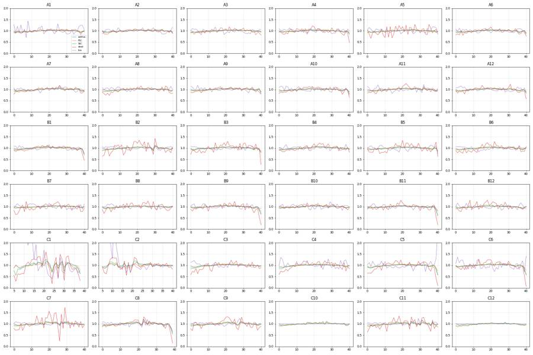
88
thinking
Composition holds steady across the wells except C1, C2 and C8's final 2 s, so I'm moving on to placing the Cells gate.
89
tool call · Bash
cd /task; cat > work/plot_cells.py <<'EOF'
import numpy as np, matplotlib
matplotlib.use('Agg'); import matplotlib.pyplot as plt
from matplotlib.colors import LogNorm
z=np.load('work/raw.npz')
order=[f'{r}{c}' for r in 'ABC' for c in range(1,13)]
good=[w for w in order if w not in ('C1','C2')]
pool=np.vstack([z[w][::3] for w in good])
fig,axs=plt.subplots(1,3,figsize=(27,9))
axs[0].hist(pool[:,1],bins=400,range=(0,4e5),histtype='step',color='k',label='all')
for lo,hi,c in [(-1e9,0,'r'),(0,3000,'orange'),(3000,1e5,'b'),(1e5,1e9,'m')]:
m=(pool[:,4]>=lo)&(pool[:,4]<hi); axs[0].hist(pool[m,1],bins=400,range=(0,4e5),histtype='step',color=c,label=f'RL3 {lo}-{hi}')
axs[0].legend(); axs[0].set_xlabel('FSC-A'); axs[0].grid(alpha=.3)
axs[1].hist2d(pool[:,1],pool[:,2],bins=400,range=[[0,4e5],[0,4e5]],norm=LogNorm(),cmap='jet'); axs[1].set_xlabel('FSC-A'); axs[1].set_ylabel('SSC-A')
axs[1].set_xticks(np.arange(0,4e5+1,25000)); axs[1].set_yticks(np.arange(0,4e5+1,25000)); axs[1].grid(alpha=.4); axs[1].tick_params(axis='x',rotation=90)
m=pool[:,4]<0
axs[2].hist2d(pool[m,1],pool[m,2],bins=300,range=[[0,4e5],[0,4e5]],norm=LogNorm(),cmap='jet'); axs[2].set_title('RL3<0 only')
axs[2].set_xticks(np.arange(0,4e5+1,25000)); axs[2].set_yticks(np.arange(0,4e5+1,25000)); axs[2].grid(alpha=.4); axs[2].tick_params(axis='x',rotation=90)
plt.tight_layout(); plt.savefig('work/cells_design.png',dpi=50)
EOF
python3 work/plot_cells.py90
tool output
(Bash completed with no output)
91
tool call · Read
{
"file_path": "/task/work/cells_design.png"
}92
tool output
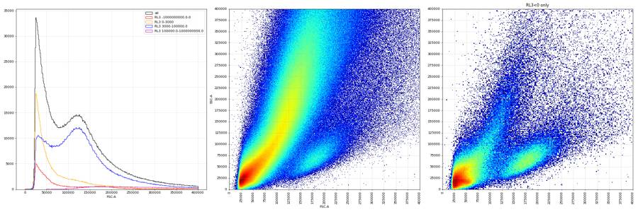
94
tool call · Bash
cd /task; cat > work/plot_sing.py <<'EOF'
import numpy as np, matplotlib
matplotlib.use('Agg'); import matplotlib.pyplot as plt
from matplotlib.colors import LogNorm
z=np.load('work/raw.npz')
order=[f'{r}{c}' for r in 'ABC' for c in range(1,13)]
good=[w for w in order if w not in ('C1','C2')]
pool=np.vstack([z[w][::3] for w in good])
cell=(pool[:,1]>65000)&(pool[:,1]<1.04e6)&(pool[:,2]<1.04e6)&(pool[:,2]>2000)
p=pool[cell]
r=p[:,2]/np.clip(p[:,6],1,None)
print('ratio pct',np.percentile(r,[0.5,1,5,25,50,75,90,95,99,99.5]))
fig,axs=plt.subplots(1,3,figsize=(27,9))
axs[0].hist(r,bins=400,range=(0.5,4),histtype='step'); axs[0].set_yscale('log'); axs[0].set_xlabel('SSC-A/SSC-H'); axs[0].grid(alpha=.3)
for lo,hi,c in [(-1e9,1000,'r'),(1000,1e5,'b'),(1e5,1e9,'m')]:
m=(p[:,4]>=lo)&(p[:,4]<hi); axs[0].hist(r[m],bins=400,range=(0.5,4),histtype='step',color=c)
axs[1].hist2d(p[:,6],p[:,2],bins=400,range=[[0,1.05e6],[0,1.05e6]],norm=LogNorm(),cmap='jet'); axs[1].set_xlabel('SSC-H'); axs[1].set_ylabel('SSC-A'); axs[1].grid(alpha=.4)
axs[1].set_xticks(np.arange(0,1.05e6,50000)); axs[1].set_yticks(np.arange(0,1.05e6,50000)); axs[1].tick_params(axis='x',rotation=90)
lg=lambda v: np.log10(np.clip(v,100,None))
axs[2].hist2d(lg(p[:,6]),lg(p[:,2]),bins=400,range=[[3.5,6.05],[3.5,6.05]],norm=LogNorm(),cmap='jet'); axs[2].set_xlabel('log SSC-H'); axs[2].grid(alpha=.4)
plt.tight_layout(); plt.savefig('work/sing_design.png',dpi=50)
# ratio vs SSC-H level
for lo,hi in [(0,3e4),(3e4,1e5),(1e5,3e5),(3e5,6e5),(6e5,1.05e6)]:
m=(p[:,6]>=lo)&(p[:,6]<hi)
print(lo,hi,m.sum(),np.percentile(r[m],[1,5,25,50,75,95,99]).round(3))
EOF
python3 work/plot_sing.py95
tool output
ratio pct [0.88888812 0.93040091 0.99538699 1.07730741 1.1636488 1.35086624 1.7035985 1.97590649 2.54678782 2.80784314] 0 30000.0 14699 [0.522 0.798 0.996 1.136 1.442 1.972 2.441] 30000.0 100000.0 446772 [0.865 0.952 1.014 1.07 1.213 1.773 2.271] 100000.0 300000.0 1146242 [0.981 1.025 1.088 1.153 1.292 1.972 2.603] 300000.0 600000.0 289175 [1.086 1.141 1.247 1.383 1.632 2.171 2.621] 600000.0 1050000.0 10970 [1.135 1.206 1.325 1.42 1.514 1.633 1.689]
96
tool call · Read
{
"file_path": "/task/work/sing_design.png"
}97
tool output
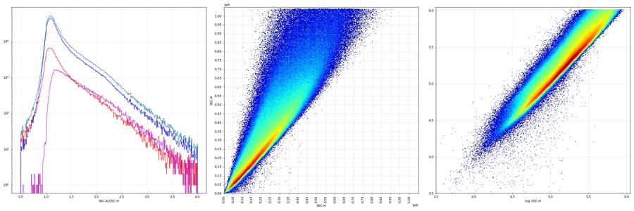
99
tool call · Bash
cd /task; cat > work/sing2.py <<'EOF'
import numpy as np
z=np.load('work/raw.npz')
order=[f'{r}{c}' for r in 'ABC' for c in range(1,13)]
good=[w for w in order if w not in ('C1','C2')]
pool=np.vstack([z[w][::2] for w in good])
cell=(pool[:,1]>65000)&(pool[:,1]<1.04e6)&(pool[:,2]<1.04e6)&(pool[:,2]>2000)
p=pool[cell]; r=p[:,2]/np.clip(p[:,6],1,None)
edges=[1e4,3e4,6e4,1e5,1.5e5,2e5,3e5,4e5,5e5,6e5,8e5]
for lo,hi in zip(edges[:-1],edges[1:]):
m=(p[:,6]>=lo)&(p[:,6]<hi)
h,b=np.histogram(r[m],bins=np.arange(0.5,3.0,0.02)); c=(b[1:]+b[:-1])/2
k=np.argmax(h); mode=c[k]
up=[c[j] for j in range(k,len(h)) if h[j]<frac*h[k]][0] if False else None
res=[]
for frac in [0.5,0.2,0.1,0.05]:
j=k
while j<len(h)-1 and h[j]>=frac*h[k]: j+=1
jl=k
while jl>0 and h[jl]>=frac*h[k]: jl-=1
res.append(f'{frac}:[{c[jl]:.2f},{c[j]:.2f}]')
print(f'SSC-H {lo:.0f}-{hi:.0f} n={m.sum()} mode={mode:.2f}', ' '.join(res))
EOF
python3 work/sing2.py100
tool output
SSC-H 10000-30000 n=21701 mode=1.03 0.5:[0.91,1.21] 0.2:[0.81,1.67] 0.1:[0.75,1.95] 0.05:[0.65,2.13] SSC-H 30000-60000 n=198489 mode=1.01 0.5:[0.95,1.11] 0.2:[0.91,1.27] 0.1:[0.87,1.41] 0.05:[0.85,1.77] SSC-H 60000-100000 n=472384 mode=1.03 0.5:[0.97,1.09] 0.2:[0.95,1.21] 0.1:[0.93,1.31] 0.05:[0.91,1.47] SSC-H 100000-150000 n=561505 mode=1.07 0.5:[1.01,1.15] 0.2:[0.97,1.21] 0.1:[0.97,1.31] 0.05:[0.95,1.45] SSC-H 150000-200000 n=522693 mode=1.11 0.5:[1.03,1.19] 0.2:[1.01,1.27] 0.1:[0.99,1.35] 0.05:[0.97,1.53] SSC-H 200000-300000 n=634390 mode=1.15 0.5:[1.07,1.25] 0.2:[1.05,1.37] 0.1:[1.03,1.53] 0.05:[1.01,1.83] SSC-H 300000-400000 n=271229 mode=1.21 0.5:[1.11,1.39] 0.2:[1.07,1.65] 0.1:[1.05,1.97] 0.05:[1.03,2.31] SSC-H 400000-500000 n=116430 mode=1.31 0.5:[1.17,1.55] 0.2:[1.11,1.95] 0.1:[1.09,2.21] 0.05:[1.07,2.33] SSC-H 500000-600000 n=46515 mode=1.37 0.5:[1.21,1.77] 0.2:[1.13,1.91] 0.1:[1.11,1.99] 0.05:[1.09,2.03] SSC-H 600000-800000 n=15996 mode=1.43 0.5:[1.25,1.61] 0.2:[1.17,1.69] 0.1:[1.13,1.71] 0.05:[1.11,1.73]
102
tool call · Bash
cd /task; cat > work/gates_common.py <<'EOF'
import numpy as np
from matplotlib.path import Path
CELLS=[(65000,2000),(1040000,2000),(1040000,1040000),(65000,1040000)]
SING=[(0,0),(100000,82000),(400000,370000),(800000,820000),(1000000,1040000),(540000,1040000),(450000,832000),
(350000,577000),(250000,375000),(150000,210000),(50000,72000),(10000,20000),(0,5000)]
def inpoly(x,y,verts):
return Path(verts).contains_points(np.c_[x,y])
EOF
cat > work/check_sing.py <<'EOF'
import numpy as np, matplotlib, sys
sys.path.insert(0,'/task/work')
from gates_common import *
matplotlib.use('Agg'); import matplotlib.pyplot as plt
from matplotlib.colors import LogNorm
z=np.load('work/raw.npz')
order=[f'{r}{c}' for r in 'ABC' for c in range(1,13)]
fig,axs=plt.subplots(6,6,figsize=(24,22)); axs=axs.ravel()
for i,w in enumerate(order):
a=z[w]
c=inpoly(a[:,1],a[:,2],CELLS)
s=c&inpoly(a[:,6],a[:,2],SING)
axs[i].hist2d(a[c,6],a[c,2],bins=200,range=[[0,1.05e6],[0,1.05e6]],norm=LogNorm(),cmap='jet')
v=np.array(SING+[SING[0]]); axs[i].plot(v[:,0],v[:,1],'k-',lw=1)
axs[i].set_title(f'{w} cells={c.mean()*100:.1f}% sing={s.sum()/c.sum()*100:.1f}%')
plt.tight_layout(); plt.savefig('work/sing_check.png',dpi=50)
fig,axs=plt.subplots(6,6,figsize=(24,22)); axs=axs.ravel()
for i,w in enumerate(order):
a=z[w]
axs[i].hist2d(a[:,1],a[:,2],bins=200,range=[[0,1.05e6],[0,1.05e6]],norm=LogNorm(),cmap='jet')
v=np.array(CELLS+[CELLS[0]]); axs[i].plot(v[:,0],v[:,1],'k-',lw=1); axs[i].set_title(w)
plt.tight_layout(); plt.savefig('work/cells_check.png',dpi=50)
EOF
python3 work/check_sing.py103
tool output
(Bash completed with no output)
104
tool call · Read
{
"file_path": "/task/work/sing_check.png"
}105
tool output
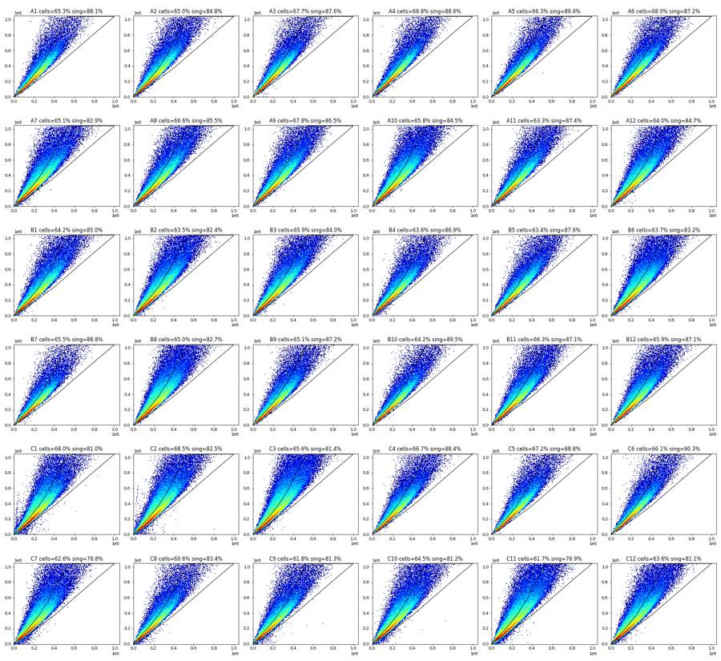
107
thinking
Cells (FSC-A > 65,000) keep 61–69% of events per well and singlets keep 77–90% of those. Next I'm setting the RL3-A and BL1-A boundaries from the C10–C12 controls.
108
tool call · Bash
cd /task; cat > work/plot_fl2.py <<'EOF'
import numpy as np, matplotlib, flowkit as fk, sys
sys.path.insert(0,'/task/work')
from gates_common import *
matplotlib.use('Agg'); import matplotlib.pyplot as plt
from matplotlib.colors import LogNorm
z=np.load('work/raw.npz')
xf=fk.transforms.LogicleTransform(param_t=1048576, param_w=1.5, param_m=6.02, param_a=0)
def L(v): return xf.apply(np.asarray(v,float).reshape(-1,1)).ravel()
ticks=np.array([-1e4,-1000,0,1000,1e4,1e5,1e6]); tl=['-10k','-1k','0','1k','10k','100k','1M']
ws=['C10','C11','C12','C7','C8','C9','C4','A1','B2']
fig,axs=plt.subplots(3,3,figsize=(24,22)); axs=axs.ravel()
sing={}
for i,w in enumerate(ws):
a=z[w]; s=inpoly(a[:,1],a[:,2],CELLS)&inpoly(a[:,6],a[:,2],SING); b=a[s]
axs[i].hist2d(L(b[:,3]),L(b[:,4]),bins=250,range=[[L([-2e4])[0],1],[L([-2e4])[0],1]],norm=LogNorm(),cmap='jet')
axs[i].set_xticks(L(ticks)); axs[i].set_xticklabels(tl); axs[i].set_yticks(L(ticks)); axs[i].set_yticklabels(tl); axs[i].grid(alpha=.4)
axs[i].set_title(f'{w} singlets n={s.sum()}'); axs[i].set_xlabel('BL1-A'); axs[i].set_ylabel('RL3-A')
plt.tight_layout(); plt.savefig('work/fl_ctrl.png',dpi=45)
print(L([-2e4,-5000,-1000,0,500,1000,2000,5000,1e4,1e5,1e6]))
EOF
python3 work/plot_fl2.py109
tool output
[-0.21268032 -0.10400726 0.04859135 0.24916944 0.37504116 0.44974752 0.52095246 0.60234613 0.65799005 0.82977786 0.99657422]
110
tool call · Read
{
"file_path": "/task/work/fl_ctrl.png"
}111
tool output
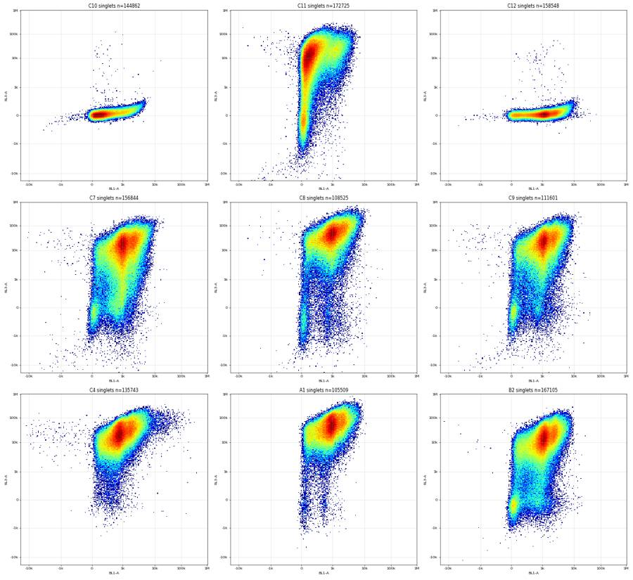
113
tool call · Bash
cd /task; cat > work/plot_1d2.py <<'EOF'
import numpy as np, matplotlib, flowkit as fk, sys
sys.path.insert(0,'/task/work')
from gates_common import *
matplotlib.use('Agg'); import matplotlib.pyplot as plt
z=np.load('work/raw.npz')
xf=fk.transforms.LogicleTransform(param_t=1048576, param_w=1.5, param_m=6.02, param_a=0)
def L(v): return xf.apply(np.asarray(v,float).reshape(-1,1)).ravel()
ticks=np.array([-1e4,-1000,-300,0,300,1000,3000,1e4,3e4,1e5,1e6]); tl=['-10k','-1k','-300','0','300','1k','3k','10k','30k','100k','1M']
S={}
for w in ['C10','C11','C12','C7','C8','C9','A1','B2','B8','C4']:
a=z[w]; s=inpoly(a[:,1],a[:,2],CELLS)&inpoly(a[:,6],a[:,2],SING); S[w]=a[s]
fig,axs=plt.subplots(3,1,figsize=(18,18))
cols={'C10':'k','C11':'r','C12':'g','C7':'b','C8':'c','C9':'m','A1':'orange','B2':'y','B8':'brown','C4':'pink'}
for w,b in S.items():
axs[0].hist(L(b[:,4]),bins=300,range=(-0.2,1),histtype='step',color=cols[w],label=w,density=True)
axs[1].hist(L(b[:,3]),bins=300,range=(-0.2,1),histtype='step',color=cols[w],label=w,density=True)
lv=b[:,4]<500
if w not in ('C10','C12'):
axs[2].hist(L(b[lv,3]),bins=200,range=(-0.2,1),histtype='step',color=cols[w],label=w+' RL3<500',density=True)
else:
axs[2].hist(L(b[:,3]),bins=200,range=(-0.2,1),histtype='step',color=cols[w],label=w+' all',density=True,ls='--')
for ax,t in zip(axs,['RL3-A singlets','BL1-A singlets','BL1-A of RL3<500 singlets']):
ax.set_xticks(L(ticks)); ax.set_xticklabels(tl); ax.grid(alpha=.4); ax.legend(); ax.set_yscale('log'); ax.set_title(t)
plt.tight_layout(); plt.savefig('work/hist1d2.png',dpi=50)
EOF
python3 work/plot_1d2.py114
tool output
(Bash completed with no output)
115
tool call · Read
{
"file_path": "/task/work/hist1d2.png"
}116
tool output
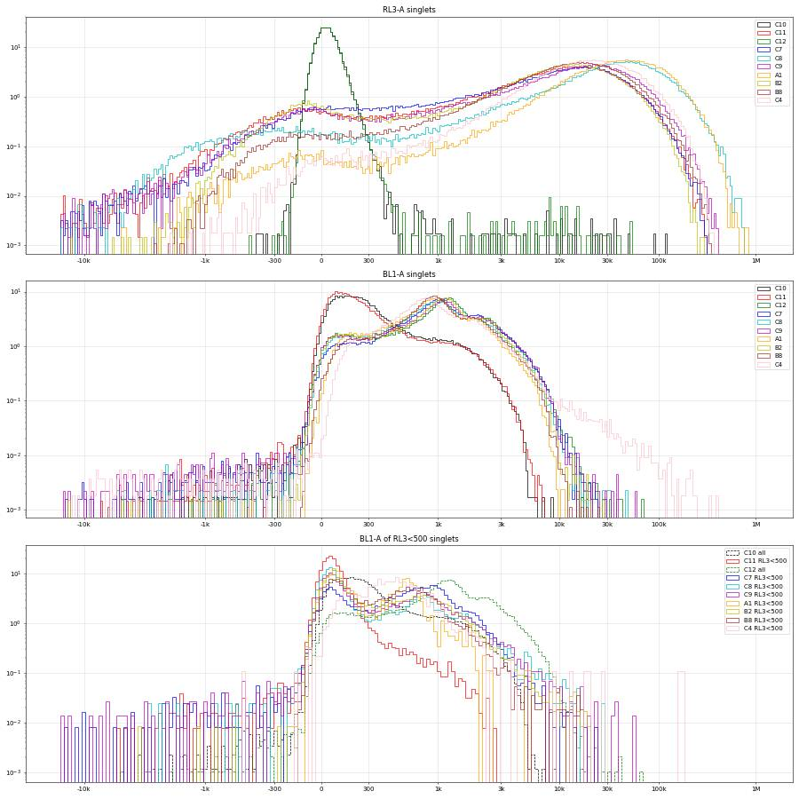
118
thinking
Zombie-negative BL1-A is bimodal, with a CellEvent-negative peak near 80, a CellEvent-positive hump at 500–5k, and a valley near 300. I'm zooming into the low-RL3 region next to pin down the Live, Caspase and Late_apoptosis gates.
119
tool call · Bash
cd /task; cat > work/plot_zoom2.py <<'EOF'
import numpy as np, matplotlib, flowkit as fk, sys
sys.path.insert(0,'/task/work')
from gates_common import *
matplotlib.use('Agg'); import matplotlib.pyplot as plt
from matplotlib.colors import LogNorm
z=np.load('work/raw.npz')
xf=fk.transforms.LogicleTransform(param_t=1048576, param_w=1.5, param_m=6.02, param_a=0)
def L(v): return xf.apply(np.asarray(v,float).reshape(-1,1)).ravel()
ticks=np.array([-3000,-1000,-300,0,300,1000,3000,1e4,3e4,1e5]); tl=['-3k','-1k','-300','0','300','1k','3k','10k','30k','100k']
ws=['C10','C11','C12','C7','C8','C9']
fig,axs=plt.subplots(2,3,figsize=(27,18)); axs=axs.ravel()
for i,w in enumerate(ws):
a=z[w]; s=inpoly(a[:,1],a[:,2],CELLS)&inpoly(a[:,6],a[:,2],SING); b=a[s]
axs[i].hist2d(L(b[:,3]),L(b[:,4]),bins=180,range=[[L([-1000])[0],L([3e4])[0]],[L([-5000])[0],L([1e5])[0]]],norm=LogNorm(),cmap='jet')
axs[i].set_xticks(L(ticks)); axs[i].set_xticklabels(tl); axs[i].set_yticks(L(ticks)); axs[i].set_yticklabels(tl); axs[i].grid(alpha=.5,color='k')
axs[i].set_title(w,fontsize=20)
plt.tight_layout(); plt.savefig('work/fl_zoom.png',dpi=40)
EOF
python3 work/plot_zoom2.py120
tool output
(Bash completed with no output)
121
tool call · Read
{
"file_path": "/task/work/fl_zoom.png"
}122
tool output
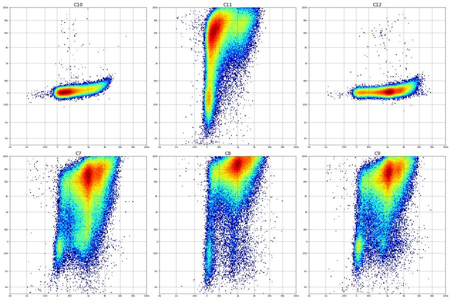
124
tool call · Bash
cd /task; cat > work/thr.py <<'EOF'
import numpy as np, sys
sys.path.insert(0,'/task/work')
from gates_common import *
z=np.load('work/raw.npz')
S={}
for w in ['C10','C11','C12','C7','C8','C9','A1','B2','B8','A5']:
a=z[w]; s=inpoly(a[:,1],a[:,2],CELLS)&inpoly(a[:,6],a[:,2],SING); S[w]=a[s]
print('RL3 fractions of singlets')
for w,b in S.items():
r=b[:,4]
print(w, len(r), ' '.join(f'<{t}:{np.mean(r<t)*100:.2f}' for t in [0,300,500,1000,2000,3000,5000,1e4]))
print('BL1 among RL3<500 (Live-ish)')
for w,b in S.items():
lv=b[:,4]<500; x=b[lv,3]
print(w, lv.sum(), ' '.join(f'>{t}:{np.mean(x>t)*100:.2f}' for t in [200,300,500,700,1000,2000,3000,5000]), ' p95/p99', np.percentile(x,[95,99]).round(0))
print('BL1 among RL3>3000 (dead)')
for w,b in S.items():
d=b[:,4]>3000; x=b[d,3]
print(w, d.sum(), ' '.join(f'>{t}:{np.mean(x>t)*100:.2f}' for t in [300,500,700,1000,2000,3000,5000,1e4]), ' median',np.median(x).round(0))
EOF
python3 work/thr.py125
tool output
RL3 fractions of singlets C10 144862 <0:28.43 <300:99.80 <500:99.96 <1000:99.97 <2000:99.98 <3000:99.98 <5000:99.98 <10000.0:99.99 C11 172725 <0:7.18 <300:10.55 <500:12.37 <1000:16.12 <2000:21.92 <3000:26.75 <5000:35.44 <10000.0:52.79 C12 158548 <0:29.24 <300:99.77 <500:99.94 <1000:99.95 <2000:99.96 <3000:99.96 <5000:99.97 <10000.0:99.98 C7 156844 <0:5.83 <300:10.49 <500:13.14 <1000:18.14 <2000:24.87 <3000:29.83 <5000:37.83 <10000.0:53.19 C8 108525 <0:4.42 <300:5.63 <500:6.23 <1000:7.54 <2000:9.85 <3000:11.91 <5000:15.42 <10000.0:22.43 C9 111601 <0:6.10 <300:9.34 <500:10.97 <1000:14.25 <2000:19.24 <3000:23.15 <5000:29.69 <10000.0:43.15 A1 105509 <0:0.82 <300:1.18 <500:1.38 <1000:1.90 <2000:2.83 <3000:3.80 <5000:5.98 <10000.0:12.65 B2 167105 <0:6.73 <300:10.25 <500:11.85 <1000:14.77 <2000:19.22 <3000:23.57 <5000:32.38 <10000.0:51.48 B8 221586 <0:1.99 <300:3.29 <500:4.15 <1000:6.28 <2000:10.43 <3000:14.61 <5000:22.89 <10000.0:41.42 A5 100712 <0:2.25 <300:4.42 <500:5.40 <1000:7.14 <2000:10.03 <3000:13.16 <5000:20.23 <10000.0:38.40 BL1 among RL3<500 (Live-ish) C10 144798 >200:59.23 >300:39.66 >500:21.64 >700:14.83 >1000:9.30 >2000:1.77 >3000:0.35 >5000:0.00 p95/p99 [1383. 2344.] C11 21365 >200:8.78 >300:4.39 >500:2.18 >700:1.20 >1000:0.56 >2000:0.04 >3000:0.00 >5000:0.00 p95/p99 [276. 778.] C12 158456 >200:90.99 >300:87.35 >500:80.56 >700:72.73 >1000:56.46 >2000:17.87 >3000:6.88 >5000:1.56 p95/p99 [3404. 5634.] C7 20610 >200:73.93 >300:69.24 >500:58.24 >700:43.34 >1000:21.91 >2000:3.44 >3000:0.88 >5000:0.20 p95/p99 [1800. 2852.] C8 6765 >200:45.41 >300:41.40 >500:34.80 >700:27.07 >1000:13.64 >2000:3.68 >3000:1.61 >5000:0.71 p95/p99 [1747. 3801.] C9 12248 >200:54.34 >300:48.98 >500:40.20 >700:30.18 >1000:15.27 >2000:3.83 >3000:1.69 >5000:0.60 p95/p99 [1765. 3739.] A1 1458 >200:50.48 >300:44.79 >500:34.77 >700:12.41 >1000:4.32 >2000:0.41 >3000:0.14 >5000:0.07 p95/p99 [ 911. 1688.] B2 19797 >200:55.82 >300:48.94 >500:38.47 >700:27.74 >1000:14.12 >2000:2.36 >3000:0.95 >5000:0.31 p95/p99 [1527. 2918.] B8 9202 >200:62.35 >300:55.22 >500:41.50 >700:24.48 >1000:8.88 >2000:1.30 >3000:0.45 >5000:0.16 p95/p99 [1242. 2189.] A5 5438 >200:55.52 >300:48.22 >500:35.71 >700:21.66 >1000:8.66 >2000:1.42 >3000:0.50 >5000:0.18 p95/p99 [1256. 2366.] BL1 among RL3>3000 (dead) C10 29 >300:55.17 >500:27.59 >700:20.69 >1000:10.34 >2000:6.90 >3000:6.90 >5000:6.90 >10000.0:3.45 median 400.0 C11 126499 >300:43.14 >500:24.92 >700:17.46 >1000:11.43 >2000:2.47 >3000:0.53 >5000:0.02 >10000.0:0.00 median 261.0 C12 56 >300:89.29 >500:78.57 >700:62.50 >1000:33.93 >2000:16.07 >3000:8.93 >5000:1.79 >10000.0:0.00 median 798.0 C7 110043 >300:95.17 >500:89.10 >700:80.38 >1000:58.11 >2000:21.40 >3000:8.82 >5000:2.06 >10000.0:0.06 median 1106.0 C8 95603 >300:92.18 >500:83.74 >700:72.67 >1000:49.65 >2000:15.50 >3000:5.87 >5000:1.17 >10000.0:0.03 median 996.0 C9 85767 >300:94.05 >500:87.50 >700:79.25 >1000:60.64 >2000:21.17 >3000:8.44 >5000:1.89 >10000.0:0.04 median 1136.0 A1 101504 >300:91.07 >500:81.76 >700:69.70 >1000:43.48 >2000:11.50 >3000:3.64 >5000:0.62 >10000.0:0.00 median 928.0 B2 127713 >300:94.70 >500:89.12 >700:81.81 >1000:62.40 >2000:19.32 >3000:6.66 >5000:1.22 >10000.0:0.01 median 1144.0 B8 189209 >300:94.49 >500:87.48 >700:76.69 >1000:48.45 >2000:14.75 >3000:5.29 >5000:1.00 >10000.0:0.01 median 984.0 A5 87451 >300:93.84 >500:86.29 >700:74.46 >1000:45.36 >2000:12.42 >3000:3.95 >5000:0.66 >10000.0:0.01 median 952.0
127
tool call · Bash
cd /task; cat > work/thr2.py <<'EOF'
import numpy as np, sys
sys.path.insert(0,'/task/work')
from gates_common import *
z=np.load('work/raw.npz')
S={}
for w in ['C10','C11','C12','C7','C8','C9']:
a=z[w]; s=inpoly(a[:,1],a[:,2],CELLS)&inpoly(a[:,6],a[:,2],SING); S[w]=a[s]
edges=[-1e5,-1000,0,300,1000,3000,1e4,3e4,1e5,3e5,1.1e6]
for w in ['C11','C7','C9','C8']:
b=S[w]; print(w)
for lo,hi in zip(edges[:-1],edges[1:]):
m=(b[:,4]>=lo)&(b[:,4]<hi)
if m.sum()<20: continue
print(f' RL3 {lo:>8.0f}-{hi:<8.0f} n={m.sum():6d} BL1 p5={np.percentile(b[m,3],5):6.0f} p25={np.percentile(b[m,3],25):6.0f} p50={np.percentile(b[m,3],50):6.0f} p90={np.percentile(b[m,3],90):6.0f} p95={np.percentile(b[m,3],95):6.0f} p98={np.percentile(b[m,3],98):6.0f} p99={np.percentile(b[m,3],99):6.0f}')
# C10/C12 by scatter-defined live cluster
for w in ['C10','C12','C11','C7']:
b=S[w]; box=(b[:,1]>150e3)&(b[:,1]<320e3)&(b[:,2]>25e3)&(b[:,2]<110e3)
print(w,'scatter live box n',box.sum(),'BL1 pct',np.percentile(b[box,3],[5,25,50,75,90,95,99]).round(0),' RL3 pct',np.percentile(b[box,4],[5,50,95,99]).round(0))
EOF
python3 work/thr2.py128
tool output
C11 RL3 -100000--1000 n= 718 BL1 p5= -623 p25= -41 p50= 28 p90= 211 p95= 481 p98= 1194 p99= 1466 RL3 -1000-0 n= 11689 BL1 p5= -34 p25= 14 p50= 51 p90= 147 p95= 202 p98= 338 p99= 518 RL3 0-300 n= 5812 BL1 p5= -16 p25= 35 p50= 77 p90= 211 p95= 329 p98= 603 p99= 876 RL3 300-1000 n= 9622 BL1 p5= 2 p25= 59 p50= 112 p90= 328 p95= 565 p98= 973 p99= 1228 RL3 1000-3000 n= 18371 BL1 p5= 16 p25= 84 p50= 149 p90= 552 p95= 947 p98= 1363 p99= 1661 RL3 3000-10000 n= 44967 BL1 p5= 31 p25= 104 p50= 181 p90= 725 p95= 1123 p98= 1600 p99= 1938 RL3 10000-30000 n= 55124 BL1 p5= 65 p25= 163 p50= 264 p90= 1082 p95= 1483 p98= 1973 p99= 2352 RL3 30000-100000 n= 24835 BL1 p5= 138 p25= 275 p50= 440 p90= 1604 p95= 2147 p98= 2822 p99= 3243 RL3 100000-300000 n= 1586 BL1 p5= 330 p25= 518 p50= 720 p90= 2172 p95= 2847 p98= 3548 p99= 3995 C7 RL3 -100000--1000 n= 503 BL1 p5= -1288 p25= -41 p50= 415 p90= 1751 p95= 2482 p98= 3652 p99= 4615 RL3 -1000-0 n= 8648 BL1 p5= -18 p25= 72 p50= 401 p90= 1167 p95= 1600 p98= 2118 p99= 2776 RL3 0-300 n= 7295 BL1 p5= 48 p25= 358 p50= 673 p90= 1298 p95= 1708 p98= 2198 p99= 2582 RL3 300-1000 n= 12004 BL1 p5= 122 p25= 544 p50= 900 p90= 1909 p95= 2336 p98= 2974 p99= 3412 RL3 1000-3000 n= 18342 BL1 p5= 164 p25= 566 p50= 925 p90= 2189 p95= 2831 p98= 3765 p99= 4592 RL3 3000-10000 n= 36635 BL1 p5= 204 p25= 609 p50= 942 p90= 2175 p95= 2762 p98= 3669 p99= 4424 RL3 10000-30000 n= 49090 BL1 p5= 352 p25= 798 p50= 1082 p90= 2524 p95= 3233 p98= 4220 p99= 5039 RL3 30000-100000 n= 22927 BL1 p5= 688 p25= 1061 p50= 1651 p90= 4086 p95= 5127 p98= 6398 p99= 7309 RL3 100000-300000 n= 1399 BL1 p5= 1100 p25= 1836 p50= 2719 p90= 6815 p95= 8440 p98= 11411 p99= 12901 C9 RL3 -100000--1000 n= 354 BL1 p5= -1256 p25= -49 p50= 91 p90= 1465 p95= 2069 p98= 3315 p99= 5148 RL3 -1000-0 n= 6449 BL1 p5= -23 p25= 43 p50= 127 p90= 1158 p95= 1691 p98= 2661 p99= 3615 RL3 0-300 n= 3621 BL1 p5= 19 p25= 117 p50= 466 p90= 1276 p95= 1814 p98= 2824 p99= 3877 RL3 300-1000 n= 5483 BL1 p5= 66 p25= 304 p50= 680 p90= 1437 p95= 1862 p98= 2510 p99= 3211 RL3 1000-3000 n= 9925 BL1 p5= 125 p25= 456 p50= 845 p90= 1807 p95= 2327 p98= 3079 p99= 3693 RL3 3000-10000 n= 22319 BL1 p5= 165 p25= 511 p50= 900 p90= 2038 p95= 2570 p98= 3459 p99= 4204 RL3 10000-30000 n= 37045 BL1 p5= 284 p25= 762 p50= 1081 p90= 2358 p95= 2993 p98= 3971 p99= 4709 RL3 30000-100000 n= 24163 BL1 p5= 625 p25= 1059 p50= 1487 p90= 3608 p95= 4565 p98= 5822 p99= 6588 RL3 100000-300000 n= 2227 BL1 p5= 1141 p25= 1829 p50= 2622 p90= 5930 p95= 6925 p98= 8485 p99= 9439 C8 RL3 -100000--1000 n= 830 BL1 p5= -65 p25= 9 p50= 86 p90= 1308 p95= 1997 p98= 3297 p99= 5190 RL3 -1000-0 n= 3963 BL1 p5= -20 p25= 45 p50= 119 p90= 1227 p95= 1726 p98= 2656 p99= 3688 RL3 0-300 n= 1321 BL1 p5= 5 p25= 85 p50= 364 p90= 1354 p95= 1742 p98= 2336 p99= 3759 RL3 300-1000 n= 2067 BL1 p5= 30 p25= 147 p50= 499 p90= 1299 p95= 1780 p98= 2447 p99= 3553 RL3 1000-3000 n= 4740 BL1 p5= 72 p25= 315 p50= 686 p90= 1530 p95= 1876 p98= 2479 p99= 3245 RL3 3000-10000 n= 11425 BL1 p5= 129 p25= 399 p50= 750 p90= 1681 p95= 2125 p98= 2712 p99= 3292 RL3 10000-30000 n= 27182 BL1 p5= 169 p25= 465 p50= 785 p90= 1704 p95= 2169 p98= 2880 p99= 3445 RL3 30000-100000 n= 43673 BL1 p5= 349 p25= 773 p50= 1054 p90= 2319 p95= 2926 p98= 3893 p99= 4559 RL3 100000-300000 n= 12734 BL1 p5= 737 p25= 1138 p50= 1770 p90= 4156 p95= 5058 p98= 6308 p99= 7164 RL3 300000-1100000 n= 590 BL1 p5= 1369 p25= 2186 p50= 2954 p90= 6150 p95= 7718 p98= 9653 p99= 10473 C10 scatter live box n 5409 BL1 pct [-31. 18. 53. 90. 125. 148. 209.] RL3 pct [-78. 6. 92. 128.] C12 scatter live box n 6861 BL1 pct [ -24. 35. 85. 158. 529. 1174. 2597.] RL3 pct [-77. 5. 88. 124.] C11 scatter live box n 6812 BL1 pct [-32. 18. 52. 89. 130. 158. 293.] RL3 pct [ -889. -168. 2268. 11017.] C7 scatter live box n 3752 BL1 pct [ -38. 28. 77. 158. 648. 1398. 2571.] RL3 pct [ -703. -92. 3920. 18503.]
130
thinking
Live cells that are CellEvent-negative fall below a BL1 of about 300 (99th percentile 209 in C10 and 293 in C11), while CellEvent-positive live cells in C12 spread from 500 to 3k. Next I'm locating the exact density valleys on both axes.
131
tool call · Bash
cd /task; cat > work/valley.py <<'EOF'
import numpy as np, sys, flowkit as fk
from scipy.ndimage import gaussian_filter1d
sys.path.insert(0,'/task/work')
from gates_common import *
z=np.load('work/raw.npz')
xf=fk.transforms.LogicleTransform(param_t=1048576, param_w=1.5, param_m=6.02, param_a=0)
L=lambda v: xf.apply(np.asarray(v,float).reshape(-1,1)).ravel()
Li=lambda u: xf.inverse(np.asarray(u,float).reshape(-1,1)).ravel()
def sing(w):
a=z[w]; s=inpoly(a[:,1],a[:,2],CELLS)&inpoly(a[:,6],a[:,2],SING); return a[s]
bins=np.linspace(-0.2,1.0,481); c=(bins[1:]+bins[:-1])/2
def dens(x,sig=3):
h,_=np.histogram(L(x),bins); return gaussian_filter1d(h.astype(float),sig)
# RL3 valley in C11 and C7-9 between negative cluster (< L(0)) and bright mode
for w in ['C11','C7','C8','C9']:
b=sing(w); d=dens(b[:,4])
lo=np.searchsorted(c,L([-2000])[0]); hi=np.searchsorted(c,L([1e4])[0])
negmode=lo+np.argmax(d[lo:np.searchsorted(c,L([200])[0])])
brightmode=np.searchsorted(c,L([2000])[0])+np.argmax(d[np.searchsorted(c,L([2000])[0]):])
v=negmode+np.argmin(d[negmode:brightmode])
print(w,'RL3 neg mode',Li([c[negmode]]).round(0),'bright mode',Li([c[brightmode]]).round(0),'valley',Li([c[v]]).round(0), 'dens neg/valley/bright',d[negmode].round(0),d[v].round(0),d[brightmode].round(0))
# BL1 valley among Zombie-negative (RL3<300) in stained wells
order=[f'{r}{c}' for r in 'ABC' for c in range(1,13)]
samp=[w for w in order if w not in ('C1','C2','C10','C11','C12')]
for grp,ws in [('C7-9',['C7','C8','C9']),('samples',samp)]:
pool=np.vstack([sing(w) for w in ws]); lv=pool[:,4]<300; d=dens(pool[lv,3])
a0=np.searchsorted(c,L([0])[0]); a1=np.searchsorted(c,L([200])[0]); a2=np.searchsorted(c,L([3000])[0])
nm=a0+np.argmax(d[a0:a1]); pm=a1+np.argmax(d[a1:a2]); v=nm+np.argmin(d[nm:pm])
print(grp,'BL1 neg mode',Li([c[nm]]).round(0),'pos mode',Li([c[pm]]).round(0),'valley',Li([c[v]]).round(0))
b=sing('C12'); d=dens(b[:,3])
print('C12 BL1 mode',Li([c[np.argmax(d)]]).round(0))
for t in [200,300,400,500,700,1000]:
print(' C12 frac BL1>',t, np.mean(b[:,3]>t).round(3), ' C10', np.mean(sing('C10')[:,3]>t).round(3))
EOF
python3 work/valley.py132
tool output
C11 RL3 neg mode [-155.] bright mode [14905.] valley [285.] dens neg/valley/bright 240.0 166.0 1748.0 C7 RL3 neg mode [134.] bright mode [17572.] valley [275.] dens neg/valley/bright 231.0 222.0 1550.0 C8 RL3 neg mode [-279.] bright mode [46509.] valley [180.] dens neg/valley/bright 59.0 35.0 1371.0 C9 RL3 neg mode [-55.] bright mode [22167.] valley [336.] dens neg/valley/bright 162.0 94.0 1209.0 C7-9 BL1 neg mode [52.] pos mode [771.] valley [305.] samples BL1 neg mode [61.] pos mode [672.] valley [326.] C12 BL1 mode [1166.] C12 frac BL1> 200 0.91 C10 0.592 C12 frac BL1> 300 0.874 C10 0.397 C12 frac BL1> 400 0.84 C10 0.28 C12 frac BL1> 500 0.806 C10 0.216 C12 frac BL1> 700 0.727 C10 0.148 C12 frac BL1> 1000 0.564 C10 0.093
134
thinking
Live gating will use RL3-A ≤ 500, late apoptosis RL3-A ≥ 1,000, and CellEvent-positive BL1-A ≥ 500, and I'm now building the FlowKit strategy and saving gates.xml.
135
tool call · Bash
cd /task; python3 -c "
import numpy as np
z=np.load('work/raw.npz')
mins=[];maxs=[]
for w in z.files:
if w=='cols': continue
a=z[w]; mins.append(a.min(0)); maxs.append(a.max(0))
print(list(z['cols'])); print(np.min(mins,0)); print(np.max(maxs,0))
"; python3 -c "
import flowkit as fk, inspect
print(inspect.signature(fk.Dimension.__init__)); print(inspect.signature(fk.gates.RectangleGate.__init__)); print(inspect.signature(fk.gates.PolygonGate.__init__)); print(inspect.signature(fk.GatingStrategy.add_gate)); print(inspect.signature(fk.transforms.LogicleTransform.__init__))
print(inspect.signature(fk.export_gatingml))
"136
tool output
['Time', 'FSC-A', 'SSC-A', 'BL1-A', 'RL3-A', 'FSC-H', 'SSC-H', 'FSC-W', 'SSC-W'] [ 1.3000e-02 -6.5536e+04 -6.5536e+04 -6.5536e+04 -6.5536e+04 2.4988e+04 0.0000e+00 1.4000e+01 0.0000e+00] [4.107900e+01 1.048575e+06 1.048575e+06 1.048575e+06 1.048575e+06 5.522710e+05 1.048575e+06 3.750000e+02 3.750000e+02] (self, dimension_id, compensation_ref='uncompensated', transformation_ref=None, range_min=None, range_max=None) (self, gate_name, dimensions, use_complement=False) (self, gate_name, dimensions, vertices, use_complement=False) (self, gate, gate_path, sample_id=None) (self, param_t, param_w, param_m, param_a) (gating_strategy, file_handle, sample_id=None)
138
tool call · Bash
mkdir -p /task/outputs; cd /task; cat > work/build.py <<'EOF'
"""Build the single gate set, export GatingML, reload it, and count all 36 wells."""
import sys, numpy as np, pandas as pd, flowkit as fk
sys.path.insert(0, '/task/work')
from gates_common import CELLS, SING
# --- boundaries in raw (uncompensated) units -------------------------------------------
RL3_LIVE_MAX = 500.0 # top of Zombie-negative population (C11 valley ~285-340; C10/C12 99.96% <= 500)
RL3_LATE_MIN = 1000.0 # foot of Zombie-bright population in C11
BL1_POS_MIN = 500.0 # CellEvent-neg/pos boundary (C12 foot of positive hump; C11 Zombie-neg 97.8% below)
LOW = -100000.0 # below every recorded value (data floor is -65536)
HIGH = 1100000.0 # above the 2^20 detector ceiling (1048575)
xf = fk.transforms.LogicleTransform(param_t=1048576, param_w=1.5, param_m=6.02, param_a=0)
def L(v):
return float(xf.apply(np.array([[float(v)]]))[0, 0])
def build():
g = fk.GatingStrategy()
g.add_transform('logicle_fl', xf)
unc = 'uncompensated'
# 1 Cells: polygon FSC-A x SSC-A (linear)
cells = fk.gates.PolygonGate('Cells',
[fk.Dimension('FSC-A', compensation_ref=unc), fk.Dimension('SSC-A', compensation_ref=unc)],
[list(map(float, v)) for v in CELLS])
g.add_gate(cells, gate_path=('root',))
# 2 Single_Cells: polygon SSC-H x SSC-A (linear)
sing = fk.gates.PolygonGate('Single_Cells',
[fk.Dimension('SSC-H', compensation_ref=unc), fk.Dimension('SSC-A', compensation_ref=unc)],
[list(map(float, v)) for v in SING])
g.add_gate(sing, gate_path=('root', 'Cells'))
# 3 Live: rectangle BL1-A (full range) x RL3-A (low), logicle axes
live = fk.gates.RectangleGate('Live', [
fk.Dimension('BL1-A', compensation_ref=unc, transformation_ref='logicle_fl', range_min=L(LOW), range_max=L(HIGH)),
fk.Dimension('RL3-A', compensation_ref=unc, transformation_ref='logicle_fl', range_min=L(LOW), range_max=L(RL3_LIVE_MAX))])
g.add_gate(live, gate_path=('root', 'Cells', 'Single_Cells'))
# 4 Caspase_pos: rectangle BL1-A (positive) x RL3-A (Live range), logicle axes
casp = fk.gates.RectangleGate('Caspase_pos', [
fk.Dimension('BL1-A', compensation_ref=unc, transformation_ref='logicle_fl', range_min=L(BL1_POS_MIN), range_max=L(HIGH)),
fk.Dimension('RL3-A', compensation_ref=unc, transformation_ref='logicle_fl', range_min=L(LOW), range_max=L(RL3_LIVE_MAX))])
g.add_gate(casp, gate_path=('root', 'Cells', 'Single_Cells', 'Live'))
# 5 Late_apoptosis: polygon BL1-A x RL3-A (CellEvent+ and Zombie-bright), logicle axes
late = fk.gates.PolygonGate('Late_apoptosis', [
fk.Dimension('BL1-A', compensation_ref=unc, transformation_ref='logicle_fl'),
fk.Dimension('RL3-A', compensation_ref=unc, transformation_ref='logicle_fl')],
[[L(BL1_POS_MIN), L(RL3_LATE_MIN)], [L(HIGH), L(RL3_LATE_MIN)], [L(HIGH), L(HIGH)], [L(BL1_POS_MIN), L(HIGH)]])
g.add_gate(late, gate_path=('root', 'Cells', 'Single_Cells'))
return g
if __name__ == '__main__':
g = build()
with open('/task/outputs/gates.xml', 'wb') as fh:
fk.export_gatingml(g, fh)
g2 = fk.parse_gating_xml('/task/outputs/gates.xml')
print(g2.get_gate_hierarchy(output='ascii'))
for gid, path in g2.get_gate_ids():
print(gid, path)
EOF
python3 work/build.py139
tool output
root
╰── Cells
╰── Single_Cells
├── Live
│ ╰── Caspase_pos
╰── Late_apoptosis
Cells ('root',)
Single_Cells ('root', 'Cells')
Live ('root', 'Cells', 'Single_Cells')
Caspase_pos ('root', 'Cells', 'Single_Cells', 'Live')
Late_apoptosis ('root', 'Cells', 'Single_Cells')141
tool call · Bash
cd /task; head -c 3000 outputs/gates.xml; echo; cat > work/count.py <<'EOF'
import sys, numpy as np, pandas as pd, flowkit as fk
lay = pd.read_csv('/task/inputs/plate_layout.csv')
g = fk.parse_gating_xml('/task/outputs/gates.xml')
POPS = [('Cells','All_events'),('Single_Cells','Cells'),('Live','Single_Cells'),('Caspase_pos','Live'),('Late_apoptosis','Single_Cells')]
rows = []
for fn, w in zip(lay.file, lay.well):
s = fk.Sample('/task/inputs/raw/' + fn)
res = g.gate_sample(s)
rep = res.report
n_all = s.event_count
cnt = {'All_events': n_all}
for pop, par in POPS:
r = rep[rep.gate_name == pop]
assert len(r) == 1, (pop, len(r))
cnt[pop] = int(r['count'].iloc[0])
for pop, par in POPS:
pc = cnt[par]
rows.append(dict(file=fn, well=w, population=pop, count=cnt[pop], parent_population=par,
pct_of_parent=round(100.0 * cnt[pop] / pc, 4) if pc > 0 else 0.0))
print(w, n_all, [cnt[p] for p, _ in POPS], flush=True)
out = pd.DataFrame(rows)
out.to_csv('/task/outputs/counts.csv', index=False)
print(out.shape)
EOF
python3 work/count.py 2>&1 | tail -40142
tool output
<?xml version='1.0' encoding='UTF-8'?>
<gating:Gating-ML xmlns:gating="http://www.isac-net.org/std/Gating-ML/v2.0/gating" xmlns:data-type="http://www.isac-net.org/std/Gating-ML/v2.0/datatypes" xmlns:transforms="http://www.isac-net.org/std/Gating-ML/v2.0/transformations">
<transforms:transformation transforms:id="logicle_fl">
<transforms:logicle transforms:T="1048576" transforms:W="1.5" transforms:M="6.02" transforms:A="0"/>
</transforms:transformation>
<gating:PolygonGate gating:id="Cells">
<gating:dimension gating:compensation-ref="uncompensated">
<data-type:fcs-dimension data-type:name="FSC-A"/>
</gating:dimension>
<gating:dimension gating:compensation-ref="uncompensated">
<data-type:fcs-dimension data-type:name="SSC-A"/>
</gating:dimension>
<gating:vertex>
<gating:coordinate data-type:value="65000.0"/>
<gating:coordinate data-type:value="2000.0"/>
</gating:vertex>
<gating:vertex>
<gating:coordinate data-type:value="1040000.0"/>
<gating:coordinate data-type:value="2000.0"/>
</gating:vertex>
<gating:vertex>
<gating:coordinate data-type:value="1040000.0"/>
<gating:coordinate data-type:value="1040000.0"/>
</gating:vertex>
<gating:vertex>
<gating:coordinate data-type:value="65000.0"/>
<gating:coordinate data-type:value="1040000.0"/>
</gating:vertex>
</gating:PolygonGate>
<gating:PolygonGate gating:id="Single_Cells" gating:parent_id="Cells">
<gating:dimension gating:compensation-ref="uncompensated">
<data-type:fcs-dimension data-type:name="SSC-H"/>
</gating:dimension>
<gating:dimension gating:compensation-ref="uncompensated">
<data-type:fcs-dimension data-type:name="SSC-A"/>
</gating:dimension>
<gating:vertex>
<gating:coordinate data-type:value="0.0"/>
<gating:coordinate data-type:value="0.0"/>
</gating:vertex>
<gating:vertex>
<gating:coordinate data-type:value="100000.0"/>
<gating:coordinate data-type:value="82000.0"/>
</gating:vertex>
<gating:vertex>
<gating:coordinate data-type:value="400000.0"/>
<gating:coordinate data-type:value="370000.0"/>
</gating:vertex>
<gating:vertex>
<gating:coordinate data-type:value="800000.0"/>
<gating:coordinate data-type:value="820000.0"/>
</gating:vertex>
<gating:vertex>
<gating:coordinate data-type:value="1000000.0"/>
<gating:coordinate data-type:value="1040000.0"/>
</gating:vertex>
<gating:vertex>
<gating:coordinate data-type:value="540000.0"/>
<gating:coordinate data-type:value="1040000.0"/>
</gating:vertex>
<gating:vertex>
<gating:coordinate data-type:value="450000.0"/>
<gating:coordinate data-type:value="832000.0"/>
</gating:vertex>
<gating:vertex>
<gating:coordinate data-type:value="350000.0"/>
<gating:coordinate data-type:value="577000.0"/>
</gating:vertex>
<gating:vertex>
<gating:coordinate da
A1 183353 [119749, 105509, 1458, 508, 83979]
A2 221770 [144170, 122280, 5372, 1269, 94484]
A3 222545 [150620, 131975, 4839, 1861, 105052]
A4 160440 [110335, 97780, 3114, 856, 78622]
A5 169911 [112715, 100712, 5438, 1946, 79100]
A6 230857 [156962, 136840, 9424, 2226, 107230]
A7 282723 [183977, 152521, 9699, 2030, 117533]
A8 236938 [157725, 134843, 13000, 3670, 102239]
A9 241833 [164082, 141928, 7789, 1923, 112513]
A10 335810 [221127, 186894, 6701, 1508, 150041]
A11 228556 [144772, 126479, 8002, 2491, 99690]
A12 330844 [211658, 179263, 8827, 2602, 142707]
B1 254845 [163505, 139011, 11401, 2878, 104345]
B2 319449 [202906, 167105, 19797, 7628, 123372]
B3 275473 [181409, 152430, 15502, 4955, 116377]
B4 219859 [139912, 121542, 4582, 1400, 94607]
B5 225148 [142792, 125083, 6930, 2069, 97610]
B6 369018 [235191, 195584, 12712, 5027, 154340]
B7 186946 [122524, 108856, 4012, 1277, 88014]
B8 412353 [268047, 221586, 9202, 3827, 177938]
B9 219409 [142877, 124561, 4812, 1523, 99469]
B10 187472 [120294, 107660, 3595, 1046, 85099]
B11 271438 [179927, 156661, 7125, 2804, 126668]
B12 286933 [189225, 164775, 7069, 3097, 133707]
C1 250794 [170423, 138041, 2531, 514, 100234]
C2 305451 [209165, 172467, 6407, 2149, 137255]
C3 418796 [274530, 223349, 13146, 5722, 176009]
C4 230134 [153506, 135743, 1520, 689, 111078]
C5 206789 [139060, 123501, 1824, 851, 102405]
C6 189779 [125537, 113383, 1087, 575, 95943]
C7 317865 [199096, 156844, 20610, 12020, 112587]
C8 214991 [130192, 108525, 6765, 2360, 83097]
C9 222410 [137349, 111601, 12248, 4933, 82256]
C10 276619 [178435, 144862, 144798, 31385, 11]
C11 364071 [224650, 172725, 21365, 467, 33630]
C12 307442 [195482, 158548, 158456, 127710, 59]
(180, 6)144
thinking
The reloaded gates.xml counts match my independent numpy check (C11 Live is 21,365 both ways). Next I'm checking the Zombie-bright population statistics in C11 and the replicate consistency before finalising the boundaries.
145
tool call · Bash
cd /task; python3 - <<'EOF'
import numpy as np, sys
sys.path.insert(0,'/task/work')
from gates_common import *
z=np.load('work/raw.npz')
for w in ['C11','C7','C9','C8']:
a=z[w]; s=inpoly(a[:,1],a[:,2],CELLS)&inpoly(a[:,6],a[:,2],SING); b=a[s]
x=np.log10(b[b[:,4]>1000,4])
med=np.median(x); mad=1.4826*np.median(abs(x-med))
print(w,'bright log10 median %.2f (%.0f) robustSD %.2f -> med-2SD %.0f, med-2.5SD %.0f'%(med,10**med,mad,10**(med-2*mad),10**(med-2.5*mad)))
EOF
python3 - <<'EOF'
import pandas as pd
c=pd.read_csv('/task/outputs/counts.csv')
p=c.pivot(index='well',columns='population',values='pct_of_parent')
lay=pd.read_csv('/task/inputs/plate_layout.csv').set_index('well')
p['construct']=lay.construct
p=p.loc[lay.index]
pd.set_option('display.width',200)
print(p[['construct','Cells','Single_Cells','Live','Caspase_pos','Late_apoptosis']].round(2).to_string())
EOF146
tool output
C11 bright log10 median 4.08 (11927) robustSD 0.48 -> med-2SD 1327, med-2.5SD 766 C7 bright log10 median 4.09 (12393) robustSD 0.49 -> med-2SD 1288, med-2.5SD 731 C9 bright log10 median 4.22 (16430) robustSD 0.48 -> med-2SD 1800, med-2.5SD 1036 C8 bright log10 median 4.56 (36027) robustSD 0.45 -> med-2SD 4525, med-2.5SD 2694 population construct Cells Single_Cells Live Caspase_pos Late_apoptosis well A1 RSV 65.31 88.11 1.38 34.84 79.59 A2 RSV 65.01 84.82 4.39 23.62 77.27 A3 RSV 67.68 87.62 3.67 38.46 79.60 A4 hSyn 68.77 88.62 3.18 27.49 80.41 A5 hSyn 66.34 89.35 5.40 35.79 78.54 A6 hSyn 67.99 87.18 6.89 23.62 78.36 A7 9523 65.07 82.90 6.36 20.93 77.06 A8 9523 66.57 85.49 9.64 28.23 75.82 A9 9523 67.85 86.50 5.49 24.69 79.27 A10 3945 65.85 84.52 3.59 22.50 80.28 A11 3945 63.34 87.36 6.33 31.13 78.82 A12 3945 63.98 84.69 4.92 29.48 79.61 B1 9421 64.16 85.02 8.20 25.24 75.06 B2 9421 63.52 82.36 11.85 38.53 73.83 B3 9421 65.85 84.03 10.17 31.96 76.35 B4 3503 63.64 86.87 3.77 30.55 77.84 B5 3503 63.42 87.60 5.54 29.86 78.04 B6 3503 63.73 83.16 6.50 39.55 78.91 B7 8820 65.54 88.84 3.69 31.83 80.85 B8 8820 65.00 82.67 4.15 41.59 80.30 B9 8820 65.12 87.18 3.86 31.65 79.86 B10 8790 64.17 89.50 3.34 29.10 79.04 B11 8790 66.29 87.07 4.55 39.35 80.85 B12 8790 65.95 87.08 4.29 43.81 81.15 C1 3945_3503 67.95 81.00 1.83 20.31 72.61 C2 3945_3503 68.48 82.46 3.71 33.54 79.58 C3 3945_3503 65.55 81.36 5.89 43.53 78.80 C4 AAV1_GFP 66.70 88.43 1.12 45.33 81.83 C5 AAV1_GFP 67.25 88.81 1.48 46.66 82.92 C6 AAV1_GFP 66.15 90.32 0.96 52.90 84.62 C7 no_virus 62.64 78.78 13.14 58.32 71.78 C8 no_virus 60.56 83.36 6.23 34.89 76.57 C9 no_virus 61.75 81.25 10.97 40.28 73.71 C10 no_virus 64.51 81.18 99.96 21.68 0.01 C11 no_virus 61.70 76.89 12.37 2.19 19.47 C12 no_virus 63.58 81.11 99.94 80.60 0.04
148
thinking
Per-well results are in: Live is 1–13% of singlets, Caspase_pos 20–58% of Live, and Late_apoptosis 72–85% of singlets. Next I'll check how much GFP inflates Caspase_pos in C4–C6 and that the controls match their labels.
149
tool call · Bash
cd /task; python3 - <<'EOF'
import numpy as np, sys
sys.path.insert(0,'/task/work')
from gates_common import *
z=np.load('work/raw.npz')
for w in ['C4','C5','C6','C7','C9','A1','B2']:
a=z[w]; s=inpoly(a[:,1],a[:,2],CELLS)&inpoly(a[:,6],a[:,2],SING); b=a[s]
live=b[:,4]<=500; cp=live&(b[:,3]>=500)
gfp=b[:,3]>3e4
print(w,'live',live.sum(),'casp',cp.sum(),'GFP-like(BL1>30k) in singlets',gfp.sum(),'in Live',(gfp&live).sum(),
' Live BL1 pct',np.percentile(b[live,3],[25,50,75,90,99]).round(0))
EOF150
tool output
C4 live 1522 casp 689 GFP-like(BL1>30k) in singlets 222 in Live 2 Live BL1 pct [ 298. 467. 661. 915. 2542.] C5 live 1826 casp 853 GFP-like(BL1>30k) in singlets 187 in Live 5 Live BL1 pct [ 291. 474. 674. 900. 2021.] C6 live 1089 casp 577 GFP-like(BL1>30k) in singlets 199 in Live 0 Live BL1 pct [ 328. 522. 725. 1007. 2123.] C7 live 20629 casp 12037 GFP-like(BL1>30k) in singlets 0 in Live 0 Live BL1 pct [ 182. 617. 953. 1376. 2851.] C9 live 12258 casp 4936 GFP-like(BL1>30k) in singlets 4 in Live 4 Live BL1 pct [ 69. 280. 787. 1246. 3738.] A1 live 1461 casp 509 GFP-like(BL1>30k) in singlets 0 in Live 0 Live BL1 pct [ 79. 206. 594. 722. 1688.] B2 live 19807 casp 7636 GFP-like(BL1>30k) in singlets 0 in Live 0 Live BL1 pct [ 80. 283. 752. 1154. 2918.]
152
thinking
GFP-bright cells in C4–C6 are nearly all Zombie-positive, so GFP barely affects the live caspase signal there. Next I'll check whether C8's shifted Zombie-bright population is unusual for the plate.
153
tool call · Bash
cd /task; python3 - <<'EOF'
import numpy as np, sys
sys.path.insert(0,'/task/work')
from gates_common import *
z=np.load('work/raw.npz')
order=[f'{r}{c}' for r in 'ABC' for c in range(1,13)]
out=[]
for w in order:
a=z[w]; s=inpoly(a[:,1],a[:,2],CELLS)&inpoly(a[:,6],a[:,2],SING); b=a[s]
x=b[b[:,4]>1000,4]
out.append((w, int(np.median(x)), round(np.mean(b[:,4]>1e5)*100,1), int(np.median(b[:,1])), int(np.median(b[:,2]))))
for o in out: print(*o)
EOF154
tool output
A1 39298 14.8 129845 191948 A2 42673 16.8 130120 184498 A3 29911 9.4 128412 183312 A4 25040 5.2 134135 200631 A5 15133 1.3 128588 191240 A6 35419 10.7 130345 182190 A7 32039 9.4 128354 180156 A8 24553 5.5 132948 187673 A9 37575 11.6 129790 190992 A10 34566 10.1 129292 186450 A11 24650 5.2 127275 185360 A12 26028 6.0 127484 185090 B1 32360 10.6 131320 183554 B2 11910 0.6 129173 179383 B3 17670 1.7 131216 185310 B4 27835 7.7 128713 185095 B5 17568 2.1 129707 191041 B6 16170 1.9 126458 181576 B7 19399 2.4 129322 182461 B8 13946 1.4 124623 179391 B9 21231 3.1 130093 189193 B10 37352 13.4 128329 185417 B11 17328 3.1 128958 190411 B12 13053 1.2 126369 187146 C1 31805 7.2 125506 196924 C2 25469 6.4 126906 196573 C3 12671 1.1 127636 184984 C4 19168 3.0 127094 188297 C5 19215 2.9 129237 195945 C6 25561 4.4 124973 189960 C7 12393 0.9 123284 167622 C8 36027 12.3 124647 171178 C9 16430 2.0 127518 171465 C10 7717 0.0 130342 179016 C11 11927 0.9 127988 174214 C12 8046 0.0 128403 175071
156
thinking
C8's Zombie-bright median of 36k sits within the plate range, so I'm not flagging it as a bad control. Next I'm visually checking the gate overlays on representative wells.
157
tool call · Bash
cd /task; cat > work/overlay.py <<'EOF'
import numpy as np, matplotlib, flowkit as fk, sys
sys.path.insert(0,'/task/work')
from gates_common import *
matplotlib.use('Agg'); import matplotlib.pyplot as plt
from matplotlib.colors import LogNorm
z=np.load('work/raw.npz')
xf=fk.transforms.LogicleTransform(param_t=1048576, param_w=1.5, param_m=6.02, param_a=0)
L=lambda v: xf.apply(np.asarray(v,float).reshape(-1,1)).ravel()
ticks=np.array([-1e4,-1000,0,1000,1e4,1e5,1e6]); tl=['-10k','-1k','0','1k','10k','100k','1M']
ws=['C10','C11','C12','C7','B2','C4']
fig,axs=plt.subplots(3,6,figsize=(36,18))
for j,w in enumerate(ws):
a=z[w]; c=inpoly(a[:,1],a[:,2],CELLS); s=c&inpoly(a[:,6],a[:,2],SING)
ax=axs[0,j]; ax.hist2d(a[:,1],a[:,2],bins=250,range=[[0,1.05e6],[0,1.05e6]],norm=LogNorm(),cmap='jet')
v=np.array(CELLS+[CELLS[0]]); ax.plot(v[:,0],v[:,1],'k-',lw=2); ax.set_title(f'{w} Cells {c.mean()*100:.1f}%',fontsize=18); ax.set_xlabel('FSC-A'); ax.set_ylabel('SSC-A')
ax=axs[1,j]; ax.hist2d(a[c,6],a[c,2],bins=250,range=[[0,6e5],[0,1.05e6]],norm=LogNorm(),cmap='jet')
v=np.array(SING+[SING[0]]); ax.plot(v[:,0],v[:,1],'k-',lw=2); ax.set_xlim(0,6e5); ax.set_title(f'Single_Cells {s.sum()/c.sum()*100:.1f}%',fontsize=18); ax.set_xlabel('SSC-H'); ax.set_ylabel('SSC-A')
b=a[s]; ax=axs[2,j]
ax.hist2d(L(b[:,3]),L(b[:,4]),bins=250,range=[[-0.15,1.01],[-0.15,1.01]],norm=LogNorm(),cmap='jet')
lo=-0.15; hi=1.01
ax.plot([lo,hi,hi,lo,lo],[lo,lo,L([500])[0],L([500])[0],lo],'k-',lw=2)
ax.plot([L([500])[0],hi,hi,L([500])[0],L([500])[0]],[lo,lo,L([500])[0],L([500])[0],lo],'m--',lw=2)
ax.plot([L([500])[0],hi,hi,L([500])[0],L([500])[0]],[L([1000])[0],L([1000])[0],hi,hi,L([1000])[0]],'r-',lw=2)
ax.set_xticks(L(ticks)); ax.set_xticklabels(tl); ax.set_yticks(L(ticks)); ax.set_yticklabels(tl); ax.set_xlabel('BL1-A (CellEvent)'); ax.set_ylabel('RL3-A (Zombie NIR)')
lv=b[:,4]<=500
ax.set_title(f'Live {lv.mean()*100:.1f}% Casp+ {np.mean(b[lv,3]>=500)*100:.1f}% Late {np.mean((b[:,4]>=1000)&(b[:,3]>=500))*100:.1f}%',fontsize=16)
plt.tight_layout(); plt.savefig('work/overlay.png',dpi=35)
EOF
python3 work/overlay.py158
tool output
(Bash completed with no output)
159
tool call · Read
{
"file_path": "/task/work/overlay.png"
}160
tool output
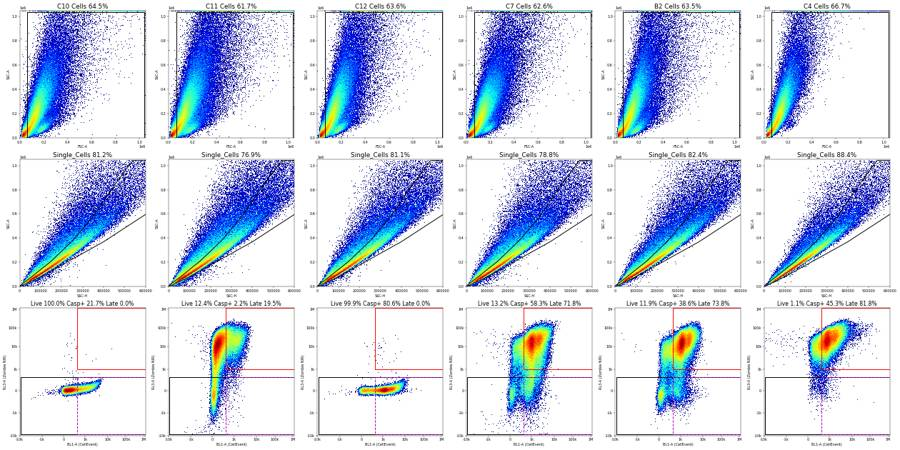
162
agent
The gate overlays look right on all six representative wells. I'm now writing `flags.csv` with quantified evidence for every well.
163
tool call · Bash
cd /task; cat > work/flags.py <<'EOF'
import numpy as np, pandas as pd, sys
sys.path.insert(0,'/task/work')
from gates_common import *
z=np.load('/task/work/raw.npz')
lay=pd.read_csv('/task/inputs/plate_layout.csv')
cnt=pd.read_csv('/task/outputs/counts.csv')
C=cnt.pivot(index='well',columns='population',values='count')
P=cnt.pivot(index='well',columns='population',values='pct_of_parent')
MAXV=1048575
q={}
for w in lay.well:
a=z[w]; t=a[:,0]; n=len(t)
bw=0.1; bins=np.arange(0,41.2+bw,bw); h,_=np.histogram(t,bins)
core=h[5:380] # 0.5-38 s
med=np.median(core)
low25=(core<0.25*med).sum()*bw
ts=np.sort(t); dt=np.diff(ts); m=(ts[1:]>0.5)&(ts[1:]<40)
gaps20=(dt[m]>0.02).sum(); maxgap=dt[m].max()
first5=((t<5).sum()/5)/(med/bw)
end=((t>=40.0).sum()/ (max(t.max(),40.0)-40.0+1e-9)) / (med/bw) if t.max()>40 else 0
after40=(t>=40.0).sum()
r3940=((t>=39)&(t<40)).sum()/(med/bw)
cell=inpoly(a[:,1],a[:,2],CELLS)&inpoly(a[:,6],a[:,2],SING)
th=np.median(t)
lv1=np.mean(a[cell&(t<th),4]<=500)*100; lv2=np.mean(a[cell&(t>=th),4]<=500)*100
b1=np.arange(0,42,1.0); idx=np.digitize(t,b1)-1
ms=np.array([np.median(a[(idx==k),2]) for k in range(1,39) if (idx==k).sum()>100])
sat={c:np.mean(a[:,i]>=MAXV)*100 for i,c in [(1,'FSC-A'),(2,'SSC-A'),(3,'BL1-A'),(4,'RL3-A')]}
q[w]=dict(n=n,rate=med/bw,low25=low25,gaps20=gaps20,maxgap=maxgap,first5=first5,r3940=r3940,after40=after40,
lv1=lv1,lv2=lv2,ssc_cv=ms.std()/ms.mean(),sat=sat)
Q=pd.DataFrame({w:{k:v for k,v in d.items() if k!='sat'} for w,d in q.items()}).T
pd.set_option('display.width',250); print(Q.to_string())
# reference ranges from wells without flow problems
ref=[w for w in lay.well if w not in ('C1','C2','C8')]
print('ref low25 max',Q.loc[ref,'low25'].max(),' ref ssc_cv max',Q.loc[ref,'ssc_cv'].max(), ' ref after40 min',Q.loc[ref,'after40'].min())
def base(w):
d=q[w]; s=d['sat']
return (f"{d['n']} events in {lay.set_index('well').loc[w,'file'].split('_')[-1]}; median rate {d['rate']:.0f} ev/s; "
f"time at <25% of median rate {d['low25']:.1f} s of 37.5 s; longest gap {d['maxgap']*1000:.0f} ms; "
f"rate at 39-40 s {d['r3940']*100:.0f}% of median, {d['after40']} events after 40.0 s; "
f"Live% of singlets 1st/2nd half {d['lv1']:.1f}/{d['lv2']:.1f}; "
f"saturated SSC-A {s['SSC-A']:.1f}%, RL3-A {s['RL3-A']:.2f}%, BL1-A {s['BL1-A']:.3f}% of events")
rows=[]
for fn,w,ct in zip(lay.file,lay.well,lay.control_type):
d=q[w]; ev=base(w); cat='ok'
extra=f"; Single_Cells {C.loc[w,'Single_Cells']}, Live {C.loc[w,'Live']}, Caspase_pos {C.loc[w,'Caspase_pos']}, Late_apoptosis {C.loc[w,'Late_apoptosis']}"
if w in ('C1','C2'):
cat='clog_or_interrupted_flow'
note=(f"CLOG/INTERRUPTED FLOW: first 5 s acquired at {d['first5']*100:.0f}% of the median rate, then bursts and step changes; "
f"{d['low25']:.1f} s at <25% of median rate (other non-flagged wells <= {Q.loc[ref,'low25'].max():.1f} s); "
f"{d['gaps20']} gaps >20 ms, longest {d['maxgap']:.2f} s; per-second SSC-A median CV {d['ssc_cv']:.2f} (others <= {Q.loc[ref,'ssc_cv'].max():.2f}); "
f"Live% of singlets drifts {d['lv1']:.1f}% (1st half) vs {d['lv2']:.1f}% (2nd half), so the sampled population changed during the run")
ev=note+' | '+ev
elif w=='C8':
cat='ran_dry'
note=(f"RAN DRY: event rate fell to {q[w]['r3940']*100:.0f}% of median at 39-40 s and stopped (only {d['after40']} events after 40.0 s vs >= {int(Q.loc[ref,'after40'].min())} in every non-flagged well) "
f"while acquisition continued to the fixed 137 uL volume; events in the last 1.5 s are >=77% debris (FSC-A < 60k); "
f"also out of line with no-virus replicates: Live {P.loc['C8','Live']:.1f}% of singlets vs C7 {P.loc['C7','Live']:.1f}% / C9 {P.loc['C9','Live']:.1f}%")
ev=note+' | '+ev
else:
if w in ('C7','C9','C10','C11') or d['low25']>1.5:
ev=(f"brief sub-second flow interruptions ({d['gaps20']} gaps >20 ms, {d['low25']:.1f} s at <25% rate) but population stable over time "
f"(Live% 1st/2nd half {d['lv1']:.1f}/{d['lv2']:.1f}, SSC-A median CV {d['ssc_cv']:.2f}); kept | ")+ev
if ct=='transduction_gfp':
ev=(f"GFP+ population present as expected ({int((z[w][:,3]>3e4).sum())} events BL1-A>30k, ~0.15% of cells, consistent across C4-C6); "
"BL1-A carries GFP so Caspase_pos here is not a caspase readout | ")+ev
if ct=='unstained':
ev=(f"unstained as labelled: {P.loc[w,'Live']:.2f}% of singlets RL3-A<=500, Late_apoptosis {C.loc[w,'Late_apoptosis']} events | ")+ev
if ct=='viability_dye_only':
ev=(f"Zombie-only as labelled: Zombie-neg {P.loc[w,'Live']:.1f}% / bright population present; CellEvent-neg (Caspase_pos {P.loc[w,'Caspase_pos']:.1f}% of Live) | ")+ev
if ct=='caspase_dye_only':
ev=(f"CellEvent-only as labelled: {P.loc[w,'Live']:.2f}% RL3-A<=500 (no Zombie), BL1-A shifted (Caspase_pos {P.loc[w,'Caspase_pos']:.1f}% of Live) | ")+ev
if (z[w][:,3]>3e4).sum()>30 and ct!='transduction_gfp':
ev='UNEXPECTED GFP | '+ev
rows.append(dict(file=fn,well=w,usable='yes' if cat=='ok' else 'no',reason_category=cat,evidence=ev+extra))
F=pd.DataFrame(rows)
F.to_csv('/task/outputs/flags.csv',index=False)
print(F[['well','usable','reason_category']].T.to_string())
for w in ['C1','C2','C8','C7','A1']:
print(w, F.set_index('well').loc[w,'evidence']); print()
EOF
python3 work/flags.py164
tool output
n rate low25 gaps20 maxgap first5 r3940 after40 lv1 lv2 ssc_cv
A1 183353.0 4560.0 0.0 0.0 0.012 1.003596 0.892325 4284.0 1.339651 1.429435 0.090556
A2 221770.0 5460.0 0.1 3.0 0.038 1.103810 0.793590 3986.0 4.421418 4.365021 0.087289
A3 222545.0 5490.0 0.1 1.0 0.023 0.987577 0.895811 4106.0 3.726784 3.614603 0.079299
A4 160440.0 4010.0 0.0 0.0 0.015 1.028229 0.816708 1979.0 3.281877 3.089750 0.078442
A5 169911.0 4220.0 0.3 2.0 0.069 0.962559 0.784597 3372.0 5.417183 5.392021 0.091075
A6 230857.0 5830.0 0.0 2.0 0.026 1.006346 0.752830 3075.0 6.897462 6.885098 0.090984
A7 282723.0 7050.0 0.4 6.0 0.069 1.112993 0.814326 4128.0 6.237461 6.486047 0.102561
A8 236938.0 5980.0 0.3 3.0 0.085 0.979030 0.741973 4892.0 9.663467 9.631522 0.100652
A9 241833.0 6120.0 0.4 5.0 0.047 1.024510 0.816503 3169.0 5.556499 5.420115 0.088435
A10 335810.0 8510.0 0.0 2.0 0.027 1.031069 0.685429 3161.0 3.608115 3.562884 0.083227
A11 228556.0 5690.0 0.4 2.0 0.087 0.985589 0.870826 5247.0 6.305891 6.355278 0.109401
A12 330844.0 8330.0 0.0 1.0 0.028 1.038367 0.731333 3695.0 5.065299 4.788751 0.100628
B1 254845.0 6460.0 0.3 2.0 0.092 1.017059 0.662229 1853.0 8.152143 8.254971 0.113089
B2 319449.0 8120.0 1.0 8.0 0.135 0.989754 0.832512 6692.0 11.981976 11.724418 0.151751
B3 275473.0 7040.0 0.6 7.0 0.078 0.989119 0.685369 2329.0 10.242034 10.100719 0.114153
B4 219859.0 5450.0 0.3 2.0 0.024 1.003119 0.865321 4758.0 3.783221 3.759953 0.110707
B5 225148.0 5640.0 0.2 2.0 0.043 1.025426 0.891135 2708.0 5.478108 5.608205 0.101470
B6 369018.0 9170.0 0.3 2.0 0.034 0.997732 0.996728 8394.0 6.403805 6.599876 0.105795
B7 186946.0 4670.0 0.0 0.0 0.017 0.984625 0.866167 4257.0 3.676403 3.702075 0.073414
B8 412353.0 10020.0 0.1 0.0 0.012 1.245250 0.938623 6714.0 4.243880 4.068492 0.091370
B9 219409.0 5630.0 0.1 0.0 0.015 1.034139 0.537833 1164.0 3.813980 3.920591 0.095085
B10 187472.0 4650.0 0.4 4.0 0.177 1.001591 0.933548 4949.0 3.369052 3.313175 0.086755
B11 271438.0 6990.0 0.0 1.0 0.029 1.034793 0.437768 1360.0 4.588202 4.514520 0.078117
B12 286933.0 7200.0 0.0 0.0 0.014 1.002333 0.927639 6133.0 4.330622 4.257070 0.101476
C1 250794.0 5260.0 10.4 139.0 1.285 0.009848 0.021673 1170.0 1.968183 1.707206 0.285861
C2 305451.0 8680.0 8.3 68.0 0.411 0.011613 1.123502 6563.0 3.827088 3.607822 0.175829
C3 418796.0 10490.0 0.2 7.0 0.044 0.911592 0.892374 7911.0 5.885820 5.896665 0.122950
C4 230134.0 5690.0 0.0 0.0 0.010 0.863656 1.006151 4830.0 1.113016 1.129404 0.113493
C5 206789.0 5270.0 0.0 0.0 0.011 0.997723 0.465275 708.0 1.463319 1.493521 0.112322
C6 189779.0 4920.0 0.0 1.0 0.023 0.992195 0.399797 776.0 0.967416 0.953568 0.097105
C7 317865.0 8050.0 2.6 31.0 0.339 1.036522 1.023354 6467.0 13.042808 13.260682 0.148986
C8 214991.0 5680.0 1.1 20.0 0.310 1.037148 0.155458 26.0 6.207024 6.265660 0.163670
C9 222410.0 5620.0 2.1 27.0 0.337 1.024982 0.989858 4801.0 10.883793 11.083647 0.144892
C10 276619.0 6980.0 2.4 22.0 0.133 1.021719 0.915330 5524.0 99.972465 99.939082 0.128462
C11 364071.0 9570.0 3.1 23.0 0.138 0.980251 0.829781 8087.0 12.274771 12.480668 0.164734
C12 307442.0 7850.0 0.5 9.0 0.055 1.006752 0.852484 5794.0 99.947180 99.938000 0.110649
ref low25 max 3.1 ref ssc_cv max 0.1647335598600329 ref after40 min 708.0
0 1 2 3 4 5 6 7 8 9 10 11 12 13 14 15 16 17 18 19 20 21 22 23 24 25 26 27 28 29 30 31 32 33 34 35
well A1 A2 A3 A4 A5 A6 A7 A8 A9 A10 A11 A12 B1 B2 B3 B4 B5 B6 B7 B8 B9 B10 B11 B12 C1 C2 C3 C4 C5 C6 C7 C8 C9 C10 C11 C12
usable yes yes yes yes yes yes yes yes yes yes yes yes yes yes yes yes yes yes yes yes yes yes yes yes no no yes yes yes yes yes no yes yes yes yes
reason_category ok ok ok ok ok ok ok ok ok ok ok ok ok ok ok ok ok ok ok ok ok ok ok ok clog_or_interrupted_flow clog_or_interrupted_flow ok ok ok ok ok ran_dry ok ok ok ok
C1 CLOG/INTERRUPTED FLOW: first 5 s acquired at 1% of the median rate, then bursts and step changes; 10.4 s at <25% of median rate (other non-flagged wells <= 3.1 s); 139 gaps >20 ms, longest 1.29 s; per-second SSC-A median CV 0.29 (others <= 0.16); Live% of singlets drifts 2.0% (1st half) vs 1.7% (2nd half), so the sampled population changed during the run | 250794 events in C1.fcs; median rate 5260 ev/s; time at <25% of median rate 10.4 s of 37.5 s; longest gap 1285 ms; rate at 39-40 s 2% of median, 1170 events after 40.0 s; Live% of singlets 1st/2nd half 2.0/1.7; saturated SSC-A 2.8%, RL3-A 0.03%, BL1-A 0.000% of events; Single_Cells 138041, Live 2531, Caspase_pos 514, Late_apoptosis 100234
C2 CLOG/INTERRUPTED FLOW: first 5 s acquired at 1% of the median rate, then bursts and step changes; 8.3 s at <25% of median rate (other non-flagged wells <= 3.1 s); 68 gaps >20 ms, longest 0.41 s; per-second SSC-A median CV 0.18 (others <= 0.16); Live% of singlets drifts 3.8% (1st half) vs 3
… [1,976 more characters not shown]166
thinking
The "UNEXPECTED GFP" tag is firing falsely because it counts events rather than cells, and the gated Live% drift for C1 and C2 is too small to support the claim, so I'm replacing it with a time-resolved Cells-fraction metric.
167
tool call · Bash
cd /task; python3 - <<'EOF'
import re
s=open('/task/work/flags.py').read()
# composition metric: range of per-second Cells% (relative), debris fraction at end
s=s.replace(""" sat={c:np.mean(a[:,i]>=MAXV)*100 for i,c in [(1,'FSC-A'),(2,'SSC-A'),(3,'BL1-A'),(4,'RL3-A')]}""",
""" sat={c:np.mean(a[:,i]>=MAXV)*100 for i,c in [(1,'FSC-A'),(2,'SSC-A'),(3,'BL1-A'),(4,'RL3-A')]}
cg=inpoly(a[:,1],a[:,2],CELLS)
cf=np.array([cg[idx==k].mean()*100 for k in range(1,39) if (idx==k).sum()>100])
cfmin,cfmax=cf.min(),cf.max()
endm=t>=39.5; dbr_end=np.mean(a[endm,1]<60000)*100 if endm.sum()>0 else np.nan
sc=cell&(a[:,1]>0)
gfp=int((sc&(a[:,3]>3e4)&(a[:,3]>0.5*a[:,4])).sum())""")
s=s.replace("lv1=lv1,lv2=lv2,ssc_cv=ms.std()/ms.mean(),sat=sat)","lv1=lv1,lv2=lv2,ssc_cv=ms.std()/ms.mean(),cfmin=cfmin,cfmax=cfmax,dbr_end=dbr_end,gfp=gfp,sat=sat)")
s=s.replace("""print('ref low25 max',Q.loc[ref,'low25'].max(),' ref ssc_cv max',Q.loc[ref,'ssc_cv'].max(), ' ref after40 min',Q.loc[ref,'after40'].min())""",
"""Q['cfspan']=Q.cfmax-Q.cfmin
print('ref low25 max',Q.loc[ref,'low25'].max(),' ref cfspan max',Q.loc[ref,'cfspan'].max(), ' ref after40 min',Q.loc[ref,'after40'].min(), 'ref dbr_end max', Q.loc[ref,'dbr_end'].max())""")
s=s.replace("""f"{d['gaps20']} gaps >20 ms, longest {d['maxgap']:.2f} s; per-second SSC-A median CV {d['ssc_cv']:.2f} (others <= {Q.loc[ref,'ssc_cv'].max():.2f}); "
f"Live% of singlets drifts {d['lv1']:.1f}% (1st half) vs {d['lv2']:.1f}% (2nd half), so the sampled population changed during the run")""",
"""f"{d['gaps20']} gaps >20 ms (non-flagged wells <= {int(Q.loc[ref,'gaps20'].max())}), longest {d['maxgap']:.2f} s; "
f"per-second Cells-gate fraction ranges {d['cfmin']:.0f}-{d['cfmax']:.0f}% of events (span {d['cfmax']-d['cfmin']:.0f} points vs <= {Q.loc[ref,'cfspan'].max():.0f} in non-flagged wells), i.e. the event mix changes with the flow disturbances")""")
s=s.replace("""f"while acquisition continued to the fixed 137 uL volume; events in the last 1.5 s are >=77% debris (FSC-A < 60k); \"""",
"""f"before acquisition ended (last event {z[w][:,0].max():.2f} s; same 137 uL $VOL as other wells); events after 39.5 s are {d['dbr_end']:.0f}% debris (FSC-A<60k; max {Q.loc[ref,'dbr_end'].max():.0f}% in non-flagged wells); \"""")
s=s.replace("""ev=(f"GFP+ population present as expected ({int((z[w][:,3]>3e4).sum())} events BL1-A>30k, ~0.15% of cells, consistent across C4-C6); \"""",
"""ev=(f"GFP+ population present as expected ({d['gfp']} singlets BL1-A>30k off-diagonal, {d['gfp']/C.loc[w,'Single_Cells']*100:.2f}% of singlets, consistent across C4-C6; almost all GFP+ cells are Zombie-bright); \"""")
s=s.replace(""" if (z[w][:,3]>3e4).sum()>30 and ct!='transduction_gfp':""",""" if d['gfp']>50 and ct!='transduction_gfp':""")
open('/task/work/flags.py','w').write(s)
EOF
grep -n "UNEXPECTED\|cfspan\|dbr_end" work/flags.py | head; python3 work/flags.py 2>&1 | sed -n '/ref low25/,$p'168
tool output
32: endm=t>=39.5; dbr_end=np.mean(a[endm,1]<60000)*100 if endm.sum()>0 else np.nan
36: lv1=lv1,lv2=lv2,ssc_cv=ms.std()/ms.mean(),cfmin=cfmin,cfmax=cfmax,dbr_end=dbr_end,gfp=gfp,sat=sat)
41:Q['cfspan']=Q.cfmax-Q.cfmin
42:print('ref low25 max',Q.loc[ref,'low25'].max(),' ref cfspan max',Q.loc[ref,'cfspan'].max(), ' ref after40 min',Q.loc[ref,'after40'].min(), 'ref dbr_end max', Q.loc[ref,'dbr_end'].max())
60: f"per-second Cells-gate fraction ranges {d['cfmin']:.0f}-{d['cfmax']:.0f}% of events (span {d['cfmax']-d['cfmin']:.0f} points vs <= {Q.loc[ref,'cfspan'].max():.0f} in non-flagged wells), i.e. the event mix changes with the flow disturbances")
65: f"before acquisition ended (last event {z[w][:,0].max():.2f} s; same 137 uL $VOL as other wells); events after 39.5 s are {d['dbr_end']:.0f}% debris (FSC-A<60k; max {Q.loc[ref,'dbr_end'].max():.0f}% in non-flagged wells); "
82: ev='UNEXPECTED GFP | '+ev
ref low25 max 3.1 ref cfspan max 12.231296620771353 ref after40 min 708.0 ref dbr_end max 53.051643192488264
0 1 2 3 4 5 6 7 8 9 10 11 12 13 14 15 16 17 18 19 20 21 22 23 24 25 26 27 28 29 30 31 32 33 34 35
well A1 A2 A3 A4 A5 A6 A7 A8 A9 A10 A11 A12 B1 B2 B3 B4 B5 B6 B7 B8 B9 B10 B11 B12 C1 C2 C3 C4 C5 C6 C7 C8 C9 C10 C11 C12
usable yes yes yes yes yes yes yes yes yes yes yes yes yes yes yes yes yes yes yes yes yes yes yes yes no no yes yes yes yes yes no yes yes yes yes
reason_category ok ok ok ok ok ok ok ok ok ok ok ok ok ok ok ok ok ok ok ok ok ok ok ok clog_or_interrupted_flow clog_or_interrupted_flow ok ok ok ok ok ran_dry ok ok ok ok
C1 CLOG/INTERRUPTED FLOW: first 5 s acquired at 1% of the median rate, then bursts and step changes; 10.4 s at <25% of median rate (other non-flagged wells <= 3.1 s); 139 gaps >20 ms (non-flagged wells <= 31), longest 1.29 s; per-second Cells-gate fraction ranges 39-79% of events (span 39 points vs <= 12 in non-flagged wells), i.e. the event mix changes with the flow disturbances | 250794 events in C1.fcs; median rate 5260 ev/s; time at <25% of median rate 10.4 s of 37.5 s; longest gap 1285 ms; rate at 39-40 s 2% of median, 1170 events after 40.0 s; Live% of singlets 1st/2nd half 2.0/1.7; saturated SSC-A 2.8%, RL3-A 0.03%, BL1-A 0.000% of events; Single_Cells 138041, Live 2531, Caspase_pos 514, Late_apoptosis 100234
C2 CLOG/INTERRUPTED FLOW: first 5 s acquired at 1% of the median rate, then bursts and step changes; 8.3 s at <25% of median rate (other non-flagged wells <= 3.1 s); 68 gaps >20 ms (non-flagged wells <= 31), longest 0.41 s; per-second Cells-gate fraction ranges 58-77% of events (span 19 points vs <= 12 in non-flagged wells), i.e. the event mix changes with the flow disturbances | 305451 events in C2.fcs; median rate 8680 ev/s; time at <25% of median rate 8.3 s of 37.5 s; longest gap 411 ms; rate at 39-40 s 112% of median, 6563 events after 40.0 s; Live% of singlets 1st/2nd half 3.8/3.6; saturated SSC-A 2.9%, RL3-A 0.05%, BL1-A 0.000% of events; Single_Cells 172467, Live 6407, Caspase_pos 2149, Late_apoptosis 137255
C8 RAN DRY: event rate fell to 16% of median at 39-40 s and stopped (only 26 events after 40.0 s vs >= 708 in every non-flagged well) before acquisition ended (last event 40.81 s; same 137 uL $VOL as other wells); events after 39.5 s are 78% debris (FSC-A<60k; max 53% in non-flagged wells); also out of line with no-virus replicates: Live 6.2% of singlets vs C7 13.1% / C9 11.0% | 214991 events in C8.fcs; median rate 5680 ev/s; time at <25% of median rate 1.1 s of 37.5 s; longest gap 310 ms; rate at 39-40 s 16% of median, 26 events after 40.0 s; Live% of singlets 1st/2nd half 6.2/6.3; saturated SSC-A 2.9%, RL3-A 0.27%, BL1-A 0.000% of events; Single_Cells 108525, Live 6765, Caspase_pos 2360, Late_apoptosis 83097
C7 brief sub-second flow interruptions (31 gaps >20 ms, 2.6 s at <25% rate) but population stable over time (Live% 1st/2nd half 13.0/13.3, SSC-A median CV 0.15); kept | 317865 events in C7.fcs; median rate 8050 ev/s; time at <25% of median rate 2.6 s of 37.5 s; longest gap 339 ms; rate at 39-40 s 102% of median, 6467 events after 40.0 s; Live% of singlets 1st/2nd half 13.0/13.3; saturated SSC-A 2.7%, RL3-A 0.06%, BL1-A 0.000% of events; Single_Cells 156844, Live 20610, Caspase_pos 12020, Late_apoptosis 112587
A1 183353 events in A1.fcs; median rate 4560 ev/s; time at <25% of median rate 0.0 s of 37.5 s; longest gap 12 ms; rate at 39-40 s 89% of median, 4284 events after 40.0 s; Live% of singlets 1st/2nd half 1.3/1.4; saturated SSC-A 1.8%, RL3-A 0.06%, BL1-A 0.000% of events; Single_Cells 105509, Live 1458, Caspase_pos 508, Late_apoptosis 83979170
thinking
`flags.csv` is written, with C1 and C2 flagged for clogged or interrupted flow, C8 for running dry, and the other 33 wells marked ok. I'm now writing notes.md and running a final validation.
171
tool call · Write
{
"file_path": "/task/outputs/notes.md",
"content": "# Gating notes: caspase-3/7 + Zombie NIR, GRN-KO iPSC neurons (36 wells, 17-Apr-2023)\n\nI built one FlowKit 1.2.3 `GatingStrategy` (`gates.xml`) and applied it unchanged to all 36 raw, uncompensated files. All counts in `counts.csv` come from `parse_gating_xml(\"gates.xml\")` followed by `gate_sample()`. Boundaries below are given in raw channel units.\n\n## Gates\n| Gate | Parent | Shape and axes | Boundaries |\n|---|---|---|---|\n| Cells | root | polygon, FSC-A \u00d7 SSC-A, linear | FSC-A 65,000\u20131,040,000; SSC-A 2,000\u20131,040,000 |\n| Single_Cells | Cells | polygon, SSC-H \u00d7 SSC-A, linear | follows the diagonal singlet band (see below) |\n| Live | Single_Cells | rectangle, BL1-A \u00d7 RL3-A, logicle | RL3-A < 500; BL1-A spans the full range |\n| Caspase_pos | Live | rectangle, BL1-A \u00d7 RL3-A, logicle | BL1-A \u2265 500; RL3-A the same as Live |\n| Late_apoptosis | Single_Cells | polygon, BL1-A \u00d7 RL3-A, logicle | BL1-A \u2265 500 and RL3-A \u2265 1,000 |\n\nOn the logicle gates, \"full range\" means \u2212100,000 to 1,100,000. That is below the data floor of \u221265,536, so negative-valued events are kept, and above the detector ceiling of 1,048,575.\n\n- **Cells.** The FSC threshold was OR_FSC 25,000, which leaves a debris peak at FSC-A \u2248 25k. The FSC-A histogram has its valley at about 70\u201380k. The left edge at 65k removes the debris and the low-FSC, high-SSC fragments. It keeps the main cells (FSC-A \u2248 120k) and the distinct high-FSC, low-SSC cluster (FSC 150\u2013300k, SSC 25\u2013110k). That cluster is the Zombie-negative live population. The 1,040,000 edges drop on-scale-saturated events (SSC-A at 1,048,575, 1\u20134% of events).\n- **Single_Cells.** In 1-D, SSC-A/SSC-H peaks at about 1.03\u20131.10 for SSC-H below 200k and rises to about 1.4 at SSC-H 600k, because of detector non-linearity. The lower edge sits at a ratio of about 0.82\u20131.03. The upper edge follows the point where density falls to about 10\u201320% of the band mode: ratio 1.40 at SSC-H \u2264 150k, 1.50 at 250k, 1.65 at 350k, 1.85 at 450k, and SSC-A 1,040,000 at 540k. Events with high SSC-A relative to SSC-H (doublets and aggregates) fall outside. Singlets are 77\u201390% of Cells.\n- **Live (RL3-A < 500).**\n - C10 and C12 have no Zombie dye; 99.96% and 99.94% of their singlets sit below 500.\n - In the Zombie-stained wells the Zombie-negative cluster reads negative (mode about \u2212150 to \u2212300 in C11 and C8). That is an Attune baseline effect, so the gate has no meaningful lower limit.\n - In C11, the RL3 density valley between the negative cluster and the bright population is at 285. It is at 180\u2013340 in C7\u2013C9. I rounded up to 500 so the whole unstained range is included.\n- **Late_apoptosis lower edge (RL3-A \u2265 1,000).** This is the foot of the Zombie-bright population in C11: median 11.9k, robust SD 0.48 log, so median \u2212 2.25 SD \u2248 1,000. Events at RL3-A 500\u20131,000 are intermediate and in neither gate, as in the original strategy. So are Zombie-bright, CellEvent-negative events.\n- **CellEvent boundary (BL1-A 500), the left edge of both Caspase_pos and Late_apoptosis.**\n - Without CellEvent, live cells sit below about 300: 99th percentile 209 in C10 and 293 in C11 for the scatter-defined live cluster.\n - In C12, and in the Zombie-negative cells of the stained wells, there is a CellEvent-positive hump with its mode at 670\u20131,200. The density valley among Zombie-negative cells is at 305\u2013326.\n - I placed the edge at the foot of the positive hump, at 500. At that edge, 2.2% of C11 Zombie-negative cells (which have no CellEvent) read false-positive.\n - The C4\u2013C6 wells were not used to set this edge, because their BL1-A includes GFP.\n\n## Deviations from `gating_strategy.md` and caveats\n- **Names.** Populations use XML-safe names: Single_Cells, Caspase_pos, Late_apoptosis.\n- **Saturated events.** I added the exclusion of saturated FSC-A/SSC-A events to the Cells gate.\n- **Gate format.** Live and Caspase_pos are 2-D rectangles that span the whole of the other axis. Fluorescence gates are stored on a logicle transform (T = 2^20, W = 1.5, M = 6.02, A = 0); all their edges are axis-parallel, so the results are the same as raw-scale cuts. No compensation was applied.\n- **C11 autofluorescence.** In C11, Zombie-bright dead cells are autofluorescent on BL1-A, and this rises with RL3. As a result 19.5% of C11 singlets fall in Late_apoptosis even though C11 has no CellEvent. Treat that as the background for Late_apoptosis.\n- **C10 Caspase_pos.** In C10, Live includes the dead cells, because there is no Zombie dye to exclude them. Their BL1 autofluorescence puts 21.7% of C10 \"Live\" events in Caspase_pos. That figure is not a caspase readout.\n- **C4\u2013C6.** Caspase_pos in the GFP wells is confounded by GFP and dim GFP on BL1-A.\n\n## Flags (`flags.csv`)\n- **C1 and C2: clog_or_interrupted_flow.** Both had about 1% of the median rate for the first 5 s. C1 spent 10.4 s and C2 8.3 s below 25% of the median rate; no other well exceeded 3.1 s. C1 had 139 gaps longer than 20 ms and C2 had 68. The per-second Cells fraction swings by 39 points in C1 and 19 in C2, against at most 12 in other wells.\n- **C8: ran_dry.** The event rate fell to 16% of the median at 39\u201340 s, and only 26 events were recorded after 40 s. Every other unflagged well had at least 708. Of the events after 39.5 s, 78% are debris. C8 also has a Live fraction of 6.2%, against 13.1% and 11.0% in its replicates C7 and C9.\n- **Wells kept.** C7 and C9\u2013C11 have short gaps (0.3\u20130.6 s each, 2\u20133 s in total), but their composition is stable between the first and second halves of the run, so I kept them. B9, B11, C5 and C6 tail off in the last 1\u20132 s but were still acquiring at the end. There is no GFP outside C4\u2013C6. Every control's staining pattern matches its label, and no well has
… [26 more characters not shown]172
tool output
File created successfully at: /task/outputs/notes.md (file state is current in your context — no need to Read it back)
174
tool call · Bash
cd /task; python3 - <<'EOF'
p='/task/outputs/notes.md'; s=open(p).read()
old="C7 and C9–C11 have short gaps (0.3–0.6 s each, 2–3 s in total)"
new="C7 and C9–C11 have brief low-flow stretches (longest event gap 0.13–0.34 s; 2.1–3.1 s in total below 25% of the median rate)"
assert old in s; s=s.replace(old,new); open(p,'w').write(s)
print(len(s.split()),'words')
EOF
python3 - <<'EOF'
import pandas as pd, flowkit as fk
c=pd.read_csv('/task/outputs/counts.csv'); f=pd.read_csv('/task/outputs/flags.csv')
print(c.columns.tolist(), c.shape, c.population.value_counts().to_dict())
print(f.columns.tolist(), f.shape, f.reason_category.value_counts().to_dict())
assert ((f.usable=='yes')==(f.reason_category=='ok')).all()
assert set(c.file)==set(f.file)==set(pd.read_csv('/task/inputs/plate_layout.csv').file)
# pct consistency
cc=c.set_index(['well','population'])['count']
for _,r in c.iterrows():
par = None
if r.parent_population=='All_events': continue
pc=cc[(r.well,r.parent_population)]
assert abs(r.pct_of_parent-100*r['count']/pc)<1e-3
# recheck two wells straight from the saved XML
g=fk.parse_gating_xml('/task/outputs/gates.xml')
for w in ['B5','C11']:
fn=f'Caspase_KO_RNAswap-rep2_caspase_Group_{w}.fcs'
s=fk.Sample('/task/inputs/raw/'+fn); rep=g.gate_sample(s).report.set_index('gate_name')['count']
for pop in ['Cells','Single_Cells','Live','Caspase_pos','Late_apoptosis']:
assert rep[pop]==cc[(w,pop)], (w,pop)
print(w,'recount OK', s.event_count, c[(c.well==w)&(c.population=='Cells')].pct_of_parent.values)
print(g.get_gate_hierarchy(output='ascii'))
EOF
ls -la /task/outputs175
tool output
994 words
['file', 'well', 'population', 'count', 'parent_population', 'pct_of_parent'] (180, 6) {'Cells': 36, 'Single_Cells': 36, 'Live': 36, 'Caspase_pos': 36, 'Late_apoptosis': 36}
['file', 'well', 'usable', 'reason_category', 'evidence'] (36, 5) {'ok': 33, 'clog_or_interrupted_flow': 2, 'ran_dry': 1}
B5 recount OK 225148 [63.4214]
C11 recount OK 364071 [61.705]
root
╰── Cells
╰── Single_Cells
├── Live
│ ╰── Caspase_pos
╰── Late_apoptosis
total 60
drwxr-xr-x 2 root root 4096 Nov 10 17:30 .
drwxr-xr-x 5 root root 4096 Nov 10 17:08 ..
-rw-r--r-- 1 root root 14837 Nov 10 17:25 counts.csv
-rw-r--r-- 1 root root 17200 Nov 10 17:29 flags.csv
-rw-r--r-- 1 root root 6073 Nov 10 17:25 gates.xml
-rw-r--r-- 1 root root 5856 Nov 10 17:30 notes.md177
agent
`notes.md` is about 1,000 words, which is over a page, so I'm trimming it.
178
tool call · Read
{
"file_path": "/task/outputs/notes.md"
}179
tool output
1 # Gating notes: caspase-3/7 + Zombie NIR, GRN-KO iPSC neurons (36 wells, 17-Apr-2023)
2
3 I built one FlowKit 1.2.3 `GatingStrategy` (`gates.xml`) and applied it unchanged to all 36 raw, uncompensated files. All counts in `counts.csv` come from `parse_gating_xml("gates.xml")` followed by `gate_sample()`. Boundaries below are given in raw channel units.
4
5 ## Gates
6 | Gate | Parent | Shape and axes | Boundaries |
7 |---|---|---|---|
8 | Cells | root | polygon, FSC-A × SSC-A, linear | FSC-A 65,000–1,040,000; SSC-A 2,000–1,040,000 |
9 | Single_Cells | Cells | polygon, SSC-H × SSC-A, linear | follows the diagonal singlet band (see below) |
10 | Live | Single_Cells | rectangle, BL1-A × RL3-A, logicle | RL3-A < 500; BL1-A spans the full range |
11 | Caspase_pos | Live | rectangle, BL1-A × RL3-A, logicle | BL1-A ≥ 500; RL3-A the same as Live |
12 | Late_apoptosis | Single_Cells | polygon, BL1-A × RL3-A, logicle | BL1-A ≥ 500 and RL3-A ≥ 1,000 |
13
14 On the logicle gates, "full range" means −100,000 to 1,100,000. That is below the data floor of −65,536, so negative-valued events are kept, and above the detector ceiling of 1,048,575.
15
16 - **Cells.** The FSC threshold was OR_FSC 25,000, which leaves a debris peak at FSC-A ≈ 25k. The FSC-A histogram has its valley at about 70–80k. The left edge at 65k removes the debris and the low-FSC, high-SSC fragments. It keeps the main cells (FSC-A ≈ 120k) and the distinct high-FSC, low-SSC cluster (FSC 150–300k, SSC 25–110k). That cluster is the Zombie-negative live population. The 1,040,000 edges drop on-scale-saturated events (SSC-A at 1,048,575, 1–4% of events).
17 - **Single_Cells.** In 1-D, SSC-A/SSC-H peaks at about 1.03–1.10 for SSC-H below 200k and rises to about 1.4 at SSC-H 600k, because of detector non-linearity. The lower edge sits at a ratio of about 0.82–1.03. The upper edge follows the point where density falls to about 10–20% of the band mode: ratio 1.40 at SSC-H ≤ 150k, 1.50 at 250k, 1.65 at 350k, 1.85 at 450k, and SSC-A 1,040,000 at 540k. Events with high SSC-A relative to SSC-H (doublets and aggregates) fall outside. Singlets are 77–90% of Cells.
18 - **Live (RL3-A < 500).**
19 - C10 and C12 have no Zombie dye; 99.96% and 99.94% of their singlets sit below 500.
20 - In the Zombie-stained wells the Zombie-negative cluster reads negative (mode about −150 to −300 in C11 and C8). That is an Attune baseline effect, so the gate has no meaningful lower limit.
21 - In C11, the RL3 density valley between the negative cluster and the bright population is at 285. It is at 180–340 in C7–C9. I rounded up to 500 so the whole unstained range is included.
22 - **Late_apoptosis lower edge (RL3-A ≥ 1,000).** This is the foot of the Zombie-bright population in C11: median 11.9k, robust SD 0.48 log, so median − 2.25 SD ≈ 1,000. Events at RL3-A 500–1,000 are intermediate and in neither gate, as in the original strategy. So are Zombie-bright, CellEvent-negative events.
23 - **CellEvent boundary (BL1-A 500), the left edge of both Caspase_pos and Late_apoptosis.**
24 - Without CellEvent, live cells sit below about 300: 99th percentile 209 in C10 and 293 in C11 for the scatter-defined live cluster.
25 - In C12, and in the Zombie-negative cells of the stained wells, there is a CellEvent-positive hump with its mode at 670–1,200. The density valley among Zombie-negative cells is at 305–326.
26 - I placed the edge at the foot of the positive hump, at 500. At that edge, 2.2% of C11 Zombie-negative cells (which have no CellEvent) read false-positive.
27 - The C4–C6 wells were not used to set this edge, because their BL1-A includes GFP.
28
29 ## Deviations from `gating_strategy.md` and caveats
30 - **Names.** Populations use XML-safe names: Single_Cells, Caspase_pos, Late_apoptosis.
31 - **Saturated events.** I added the exclusion of saturated FSC-A/SSC-A events to the Cells gate.
32 - **Gate format.** Live and Caspase_pos are 2-D rectangles that span the whole of the other axis. Fluorescence gates are stored on a logicle transform (T = 2^20, W = 1.5, M = 6.02, A = 0); all their edges are axis-parallel, so the results are the same as raw-scale cuts. No compensation was applied.
33 - **C11 autofluorescence.** In C11, Zombie-bright dead cells are autofluorescent on BL1-A, and this rises with RL3. As a result 19.5% of C11 singlets fall in Late_apoptosis even though C11 has no CellEvent. Treat that as the background for Late_apoptosis.
34 - **C10 Caspase_pos.** In C10, Live includes the dead cells, because there is no Zombie dye to exclude them. Their BL1 autofluorescence puts 21.7% of C10 "Live" events in Caspase_pos. That figure is not a caspase readout.
35 - **C4–C6.** Caspase_pos in the GFP wells is confounded by GFP and dim GFP on BL1-A.
36
37 ## Flags (`flags.csv`)
38 - **C1 and C2: clog_or_interrupted_flow.** Both had about 1% of the median rate for the first 5 s. C1 spent 10.4 s and C2 8.3 s below 25% of the median rate; no other well exceeded 3.1 s. C1 had 139 gaps longer than 20 ms and C2 had 68. The per-second Cells fraction swings by 39 points in C1 and 19 in C2, against at most 12 in other wells.
39 - **C8: ran_dry.** The event rate fell to 16% of the median at 39–40 s, and only 26 events were recorded after 40 s. Every other unflagged well had at least 708. Of the events after 39.5 s, 78% are debris. C8 also has a Live fraction of 6.2%, against 13.1% and 11.0% in its replicates C7 and C9.
40 - **Wells kept.** C7 and C9–C11 have brief low-flow stretches (longest event gap 0.13–0.34 s; 2.1–3.1 s in total below 25% of the median rate), but their composition is stable between the first and second halves of the run, so I kept them. B9, B11, C5 and C6 tail off in the last 1–2 s but were still acquiring at the end. There is no GFP outside C4–C6. Every control's staining pattern matches its label, and no well has abnormal saturation.
41 180
tool call · Write
{
"file_path": "/task/outputs/notes.md",
"content": "# Gating notes: caspase-3/7 + Zombie NIR, GRN-KO iPSC neurons (36 wells)\n\nI built one FlowKit 1.2.3 `GatingStrategy` (`gates.xml`) and applied it unchanged to all 36 raw, uncompensated files. All counts in `counts.csv` come from `gate_sample()` on the reloaded XML. Boundaries are in raw units.\n\n| Gate | Parent | Shape and axes | Boundaries |\n|---|---|---|---|\n| Cells | root | polygon, FSC-A \u00d7 SSC-A, linear | FSC-A 65k\u20131.04M; SSC-A 2k\u20131.04M |\n| Single_Cells | Cells | polygon, SSC-H \u00d7 SSC-A, linear | the diagonal singlet band |\n| Live | Single_Cells | rectangle, BL1 \u00d7 RL3, logicle | RL3-A < 500; BL1-A full range |\n| Caspase_pos | Live | rectangle, BL1 \u00d7 RL3, logicle | BL1-A \u2265 500; RL3-A as Live |\n| Late_apoptosis | Single_Cells | polygon, BL1 \u00d7 RL3, logicle | BL1-A \u2265 500 and RL3-A \u2265 1,000 |\n\n\"Full range\" is \u2212100k to 1.1M, so all negative values are kept (the data floor is \u221265,536).\n\n## How each boundary was placed\n- **Cells.** The FSC-A valley is at about 70\u201380k; the debris peak sits at the 25k trigger threshold. The 65k left edge keeps the main cells and the high-FSC, low-SSC cluster, which is the Zombie-negative live population. The 1.04M edges drop saturated events (SSC-A at 1,048,575 is 1\u20134% of events).\n- **Single_Cells.** The SSC-A/SSC-H mode is about 1.05 at low SSC-H and about 1.4 at 600k. The upper edge sits where density falls to 10\u201320% of the mode: ratio 1.40 up to 150k, then 1.50, 1.65 and 1.85 at 250k, 350k and 450k. Singlets are 77\u201390% of Cells.\n- **Live, RL3-A < 500.**\n - 99.96% of C10 and 99.94% of C12 singlets (no Zombie) sit below 500.\n - The C11 valley between the negative cluster and the bright population is at 285; in C7\u2013C9 it is at 180\u2013340.\n - With Zombie present, the negative cluster reads below zero (mode \u2212150 to \u2212300), so the gate has no meaningful lower limit.\n- **Late_apoptosis lower edge, RL3-A \u2265 1,000.** This is the foot of the C11 bright population: median 11.9k, robust SD 0.48 log, so median \u2212 2.25 SD. Events at 500\u20131,000 are intermediate and in neither gate.\n- **BL1-A \u2265 500, shared left edge of Caspase_pos and Late_apoptosis.**\n - Live cells without CellEvent sit below about 300: the 99th percentile of the scatter-defined live cluster is 209 in C10 and 293 in C11.\n - C12 and the Zombie-negative cells of stained wells show a positive hump with its mode at 670\u20131,200.\n - Among Zombie-negative cells the valley is at about 310. I placed the edge at the foot of the hump; 2.2% of C11 live cells read false-positive there.\n - C4\u2013C6 were not used, because their BL1-A includes GFP.\n\n## Deviations from `gating_strategy.md` and caveats\n- Names are XML-safe: Single_Cells, Caspase_pos, Late_apoptosis.\n- I added the saturated-event exclusion to the Cells gate.\n- Live and Caspase_pos are 2-D rectangles spanning the whole of the other axis. Fluorescence gates use a logicle transform (T = 2^20, W = 1.5, M = 6.02, A = 0) with axis-parallel edges, so they match raw-scale cuts. No compensation was applied.\n- Dead cells are autofluorescent on BL1-A, more so as RL3 rises. This puts 19.5% of C11 singlets in Late_apoptosis without any CellEvent; treat that as the Late_apoptosis background.\n- C10 has no Zombie dye, so its Live gate includes dead cells. Their autofluorescence puts 21.7% of C10 Live in Caspase_pos, which is not a caspase signal.\n- In C4\u2013C6, Caspase_pos is confounded by GFP on BL1-A.\n\n## Flags\n- **C1 and C2: clog_or_interrupted_flow.**\n - The first 5 s ran at about 1% of the median rate.\n - C1 spent 10.4 s and C2 8.3 s below 25% of the median rate; no other well exceeded 3.1 s.\n - C1 had 139 gaps over 20 ms and C2 had 68; no other well had more than 31.\n - The per-second Cells fraction swings by 39 points in C1 and 19 in C2, against at most 12 elsewhere.\n- **C8: ran_dry.** The rate fell to 16% of the median at 39\u201340 s, and only 26 events were recorded after 40 s; every other unflagged well had at least 708. Of the events after 39.5 s, 78% are debris. C8's Live fraction is 6.2%, against 13.1% and 11.0% in C7 and C9.\n- **Kept.**\n - C7 and C9\u2013C11 have brief low-flow stretches (longest gap 0.34 s; 2.1\u20133.1 s in total), but their composition is stable over the run.\n - B9, B11, C5 and C6 tail off in the last second but were still acquiring.\n - There is no GFP outside C4\u2013C6, every control matches its label, and no well has abnormal saturation.\n"
}181
tool output
The file /task/outputs/notes.md has been updated successfully. (file state is current in your context — no need to Read it back)
183
tool call · Bash
cd /task/outputs; wc -w notes.md; python3 -c "
import flowkit as fk; g=fk.parse_gating_xml('/task/outputs/gates.xml'); print([x[0] for x in g.get_gate_ids()])"; head -3 counts.csv; cut -d, -f2-4 flags.csv | grep -v ',yes,ok'184
tool output
782 notes.md ['Cells', 'Single_Cells', 'Live', 'Caspase_pos', 'Late_apoptosis'] file,well,population,count,parent_population,pct_of_parent Caspase_KO_RNAswap-rep2_caspase_Group_A1.fcs,A1,Cells,119749,All_events,65.3106 Caspase_KO_RNAswap-rep2_caspase_Group_A1.fcs,A1,Single_Cells,105509,Cells,88.1085 well,usable,reason_category C1,no,clog_or_interrupted_flow C2,no,clog_or_interrupted_flow C8,no,ran_dry
186
agent
All 36 wells are gated with one gate set, and the four files are in `/task/outputs/`. Three wells are flagged as unusable: C1, C2 and C8. `gates.xml` reloads with `flowkit.parse_gating_xml`. I re-gated two files from the saved XML (B5 and C11) and the counts match `counts.csv` exactly. That file has 180 rows, one per well and population.
**Gates** (fluorescence gates drawn on logicle axes; raw data, no compensation):
| Population | Rule | Why there |
|---|---|---|
| `Cells` | FSC-A 65k to 1.04M, SSC-A 2k to 1.04M | Removes the debris peak at the 25k trigger and saturated events (1–4% of events) |
| `Single_Cells` | polygon along the SSC-H × SSC-A diagonal | Keeps 77–90% of Cells |
| `Live` | RL3-A < 500 | Above the C11 low point (285) between negative and bright; covers 99.96% of unstained C10 |
| `Caspase_pos` | BL1-A ≥ 500, within Live | Where the CellEvent-positive group starts (low point ≈ 310); only 2.2% of C11 live cells, which have no CellEvent, read positive |
| `Late_apoptosis` | BL1-A ≥ 500 and RL3-A ≥ 1,000 | Lower edge is where the C11 Zombie-bright population begins |
- **The Zombie-negative (live) cells read below zero on RL3-A**, around −150 to −300. They form a distinct high-FSC, low-SSC cluster. The Live gate therefore has no real lower limit, and the Cells gate keeps that cluster.
- **Most cells are dead.** Live is only 1–13% of singlets, and Late_apoptosis is 72–85%.
- **Dead cells glow on BL1-A without any CellEvent.** This puts 19.5% of C11 singlets in Late_apoptosis even though C11 has no CellEvent, so treat that as the background for Late_apoptosis.
- **C10's Caspase_pos (21.7%) and the GFP wells' Caspase_pos are not caspase readouts.** In unstained C10 there's no Zombie dye to remove dead cells from Live. In C4–C6, GFP shares the BL1-A detector.
**Flags** (each has the numbers in `flags.csv`):
- **C1 and C2: clog_or_interrupted_flow.** Both ran at about 1% of the normal event rate for the first 5 s. C1 then spent 10.4 s and C2 8.3 s below a quarter of the normal rate; no other well went over 3.1 s. The share of events passing the Cells gate swings by 39 points in C1 and 19 in C2, against at most 12 elsewhere.
- **C8: ran_dry.** Events stopped about a second before acquisition ended: only 26 after 40 s, where every other unflagged well had at least 708. Of its last events, 78% are debris. Its Live fraction is also about half that of its replicates C7 and C9 (6.2% vs 13.1% and 11.0%).
- **Kept but worth knowing:**
- C7 and C9–C11 have brief flow dropouts (longest gap 0.34 s), but their cell mix is stable over the run.
- B9, B11, C5 and C6 slow down in the last second but were still acquiring.
- There is no GFP outside C4–C6, every control matches its label, and no well has unusual saturation.
**Judgement calls you may want to revisit:**
- **The BL1-A cutoff of 500.** A cutoff around 1,000–2,000 would make the C10 and C11 controls look cleaner. But it would cut through the CellEvent-positive live cells and leave Caspase_pos nearly empty.
- **Late_apoptosis has a vertical left edge.** It shares the BL1-A edge with Caspase_pos, as `gating_strategy.md` says. A slanted edge could cut the C11 background but would depart from the strategy.
- **The flags.** Flagging C8 and keeping C7 and C9–C11 are threshold decisions.
`notes.md` (about one page) records all of this, including where I departed from the strategy: XML-safe names and the saturated-event exclusion.
Files are in `/task/outputs/`:
- `gates.xml`
- `counts.csv`
- `flags.csv`
- `notes.md`
final result
All 36 wells are gated with one gate set, and the four files are in `/task/outputs/`. Three wells are flagged as unusable: C1, C2 and C8. `gates.xml` reloads with `flowkit.parse_gating_xml`. I re-gated two files from the saved XML (B5 and C11) and the counts match `counts.csv` exactly. That file has 180 rows, one per well and population. **Gates** (fluorescence gates drawn on logicle axes; raw data, no compensation): | Population | Rule | Why there | |---|---|---| | `Cells` | FSC-A 65k to 1.04M, SSC-A 2k to 1.04M | Removes the debris peak at the 25k trigger and saturated events (1–4% of events) | | `Single_Cells` | polygon along the SSC-H × SSC-A diagonal | Keeps 77–90% of Cells | | `Live` | RL3-A < 500 | Above the C11 low point (285) between negative and bright; covers 99.96% of unstained C10 | | `Caspase_pos` | BL1-A ≥ 500, within Live | Where the CellEvent-positive group starts (low point ≈ 310); only 2.2% of C11 live cells, which have no CellEvent, read positive | | `Late_apoptosis` | BL1-A ≥ 500 and RL3-A ≥ 1,000 | Lower edge is where the C11 Zombie-bright population begins | - **The Zombie-negative (live) cells read below zero on RL3-A**, around −150 to −300. They form a distinct high-FSC, low-SSC cluster. The Live gate therefore has no real lower limit, and the Cells gate keeps that cluster. - **Most cells are dead.** Live is only 1–13% of singlets, and Late_apoptosis is 72–85%. - **Dead cells glow on BL1-A without any CellEvent.** This puts 19.5% of C11 singlets in Late_apoptosis even though C11 has no CellEvent, so treat that as the background for Late_apoptosis. - **C10's Caspase_pos (21.7%) and the GFP wells' Caspase_pos are not caspase readouts.** In unstained C10 there's no Zombie dye to remove dead cells from Live. In C4–C6, GFP shares the BL1-A detector. **Flags** (each has the numbers in `flags.csv`): - **C1 and C2: clog_or_interrupted_flow.** Both ran at about 1% of the normal event rate for the first 5 s. C1 then spent 10.4 s and C2 8.3 s below a quarter of the normal rate; no other well went over 3.1 s. The share of events passing the Cells gate swings by 39 points in C1 and 19 in C2, against at most 12 elsewhere. - **C8: ran_dry.** Events stopped about a second before acquisition ended: only 26 after 40 s, where every other unflagged well had at least 708. Of its last events, 78% are debris. Its Live fraction is also about half that of its replicates C7 and C9 (6.2% vs 13.1% and 11.0%). - **Kept but worth knowing:** - C7 and C9–C11 have brief flow dropouts (longest gap 0.34 s), but their cell mix is stable over the run. - B9, B11, C5 and C6 slow down in the last second but were still acquiring. - There is no GFP outside C4–C6, every control matches its label, and no well has unusual saturation. **Judgement calls you may want to revisit:** - **The BL1-A cutoff of 500.** A cutoff around 1,000–2,000 would make the C10 and C11 controls look cleaner. But it would cut through the CellEvent-positive live cells and leave Caspase_pos nearly empty. - **Late_apoptosis has a vertical left edge.** It shares the BL1-A edge with Caspase_pos, as `gating_strategy.md` says. A slanted edge could cut the C11 background but would depart from the strategy. - **The flags.** Flagging C8 and keeping C7 and C9–C11 are threshold decisions. `notes.md` (about one page) records all of this, including where I departed from the strategy: XML-safe names and the saturated-event exclusion. Files are in `/task/outputs/`: - `gates.xml` - `counts.csv` - `flags.csv` - `notes.md`